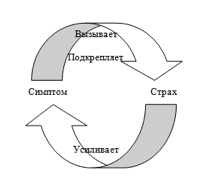

§ 1 ТРАНСПЕРСОНАЛЬНАЯ ПСИХОЛОГИЯ
Уильям Джеймс был первым психологом, который использовал термин transрersonal (трансперсональное) в своем курсе в Гарвардском университете в 1905 году, и он по праву считается первым трансперсональным психологом за свою пионерскую работу «Многообразие религиозного опыта». В ходе многочисленных дискуссий о том, как назвать новое психологическое направление, в 1968 году кругом его основателей — Э. Сутичем, А. Маслоу, С. Грофом и другими — по предложению С. Грофа было принято название трансперсональная психология. Существует немало интерпретаций самого слова «трансперсональное». Видный трансперсональный психолог Кен Уилбер слово «трансперсональное» поясняет как «личное +...» и считает, что трансперсональная ориентация явным образом включает все остальные области личностной психологии, и добавляет к ним более глубокие и высокие аспекты человеческого опыта, которые трансцендируют обычные и повседневные переживания. Он считает, что трансперсональное — или «более чем персональное, надличностное» — это попытка более глубоко, аккуратно и научно представлять весь спектр возможного человеческого переживания. Оно включает в себя полный спектр сознания.
Трансперсональная психология — это учение о трансперсональных переживаниях, их природе, разнообразных формах, причинах и следствиях, а также о тех проявлениях в областях психологии, философии, практической жизни, искусства, культуры, жизненного стиля, религии и т.д., которые вдохновляются ими или которые стремятся их вызвать, выразить, применить или понять.
Холономный подход — это более широкий, целостный и многогранный взгляд на понимание сущности человеческой природы и всей Вселенной, в основе которой лежит голографическая модель Вселенной и человеческого сознания. На базе этого подхода работают многие исследователи, психологи, психиатры и психотерапевты западной психологии. Среди них Станислав и Кристина Гроф, Леонард Орр, Сондра Рэй, Боб Мандел, Джим Леонард. Фил Лаут, Кен Уилбер и др.
Изменённые состояния сознания
Карта уровней изменённых состояний сознания В.В. Козлова представляет собой «континуум уровней изменённости сознания, в котором крайние шкалы следующие:
+ 1 — состояние чёткого, ясного полного сознания;
− 1 — глубокое психоделическое состояние сознания»
Полное осознание, скорее всего, возможно на уровне ПСС, а в обычных состояниях сознания (ОСС), встречается не часто. Полное осознание связано с кратковременными пиковыми состояниями сознания, связанными с полным охватом сути. Обычно эти мгновенные вспышки называют инсайтом или озарением. Обыденное состояние способно функционировать в пространстве «+1 — 0», включая уровень трансовых состояний сознания, так что ОСС можно назвать «плавающим осознанием».
Трансовые состояния сознания (ТСС) здесь описывают «особую отрешённость сознания, вызываемую произвольно... или возникающую спонтанно при „застревании“ внимания на объектах интроспекции или качествах восприятия внешних предметов». Для «нулевого» состояния сознания (НСС) характерно отсутствие всякого сознания. Это «выпадение» похоже на глубокий сон. Для НСС свойственна полная аутизация сенсорной сферы, и последующее отсутствие воспоминаний об этом периоде.
Для ОСС в плюсовом (+1 — 0) континууме свойственна быстрая смена состояний сознания в зависимости от условий.
Расширенные состояния сознания (РСС) — «особое состояние сознания, возникающее при связном дыхании...РСС характеризуется максимальной мобилизацией резервных возможностей человеческой психики, когда человек при помощи полного расслабления и осознанного связного дыхания получает расширенные возможности управления центральной и периферической нервной системами, работе с бессознательным материалом, организмом в целом». Таким образом, под «расширенными состояниями сознания» понимаются «положительные» состояния, дающие человеку возможность получать удовлетворение от собственной деятельности, т.е. дают возможность отчуждать от неё негативный оттенок. В расширенных состояниях сознания человек воспринимает действительность как награду, он, по сути, не нуждается даже в создании дополнительной мотивации. За РСС, скорее всего, будущее, т.к их использование позволит избавиться от многих негативных эффектов, преумножая позитивные.
Под психоделическими состояниями здесь понимаются состояния сознания, возникающие при использовании психоделиков или при глубоких психофизиологических сдвигах, возникающих из-за длительного или интенсивного использования других методов вхождения в ИСС.
Психоделические состояния сознания, например, могут быть вызваны реальными жизненными обстоятельствами.
Таковыми являются
- предсмертные состояния, описанные Р. Моуди,
- состояния, характеризующиеся повышенными психическими и физическими возможностями (сверхбодрствование, сатори, проявления различных сидхи),
- трасперсональные переживания, вызванные болевым или психологическим шоком и др.
К естественным психоделическим состояниям можно отнести также осознаваемые (ясные) эмоционально насыщенные сновидения (ОС), «просоночные состояния сознания». Весьма важным и характерным аспектом психоделических состояний являются необычные изменения в чувственном восприятии. Если глаза открыты, формы и краски внешнего мира обычно резко преображаются, а когда мы закрываем глаза, у нас могут возникать и видения различных природных явлений, космоса, мифологических сфер. Иногда все это сопровождается широким диапазоном переживаний, в которых задействованы различные звуки, запахи, физические и вкусовые ощущения.
Кластерная модель сознания М.А. Щербакова

Верхний слой мы будем называть адаптативным — это та часть сознания, которая отвечает за поведение, мотивацию и социальную адаптацию.
Подповерхностный слой содержит информацию, связанную с личностной историей — опытом, навыками, стереотипами поведения и восприятия, сложившимися в процессе развития индивидуума.
Несколько ниже — слои сознания, связанные с пренатальной и перинатальной информацией, т.е. информацией и опытом, полученным в период внутриутробного развития плода и в процессе родов. Отметим, что базовые перинатальные матрицы в модели Грофа могут рассматриваться как слои в перинатальной структуре.
Под ними — трансперсональные слои. Вводится понятие базовых форм или универсальных модальностей — глобальных энергетических структур, резонансных к определенным глобальным модальностям Вселенной. При этом относительная глубина уровня считается связанной с длительностью эволюционного развития данной формы. Базовые формы резонансны к гигантским источникам энергии во Вселенной, и именно на этом строятся многие религиозные, эзотерические и магические техники. КМС рассматривает базовые формы как своего рода ортонормированный базис. В различных методах работы с сознанием доступны для исследования проекции базовых форм, часто существующие в виде метафор (в этом смысле архетипы Юнга являются именно такими проекциями).
Трансперсональный слой разделен так называемым энергетическим барьером. Такая структура затрудняет прямую связь между архетипическим и адаптативным слоями сознания. В то же время КМС показывает, что сознание является единым голографическим пространством, в котором связь может осуществляться не только через прямое взаимодействие, но и за счет квантовых туннельных эффектов (при наличии соответствующих резонансных структур).
Наконец, самый глубокий слой — уровень универсального единства изначально является единой интегрированной структурой, в которой разделения по смыслам нет. Уровень универсального единства соответствует, по всей видимости, одной из характерных волновых структур Вселенной, имеющей наиболее древнее происхождение. Этому уровню довольно сложно дать четкое вербальное функциональное описание. Часть людей может описывать взаимодействие с информацией этого уровня, как общение с Богом, Вселенским разумом, Единой энергией Вселенной, энергией Рэйки и т.д.
Важной особенностью развития личности является взаимодействие с окружающей средой. В модели КМС мы будем называть источник такого воздействия внешней энергией (ВЭ). Как показано на рисунке, ВЭ идет в основном «сверху», т.е. через адаптативный слой. Проходя через глубинные слои и взаимодействуя с ними, ВЭ постепенно затухает, «экранируется», причем тем сильнее, чем больше структур в верхних слоях находится на ее пути. Следует отметить, что возможно и прямое воздействие на глубинные слои, однако это достаточно специфические и редко встречающиеся в современной индустриальной культуре ситуации.
Системы конденсированного опыта
Каждая СКО состоит из эмоционально заряженных воспоминаний, относящихся к различным периодам нашей жизни; все их объединяет то, что они связаны с одним и тем же эмоциональным качеством или физическим ощущением. Каждая СКО может иметь много слоев, через каждый из которых проходят свои центральная тема, ощущения и эмоциональные качества. Очень часто можно идентифицировать эти индивидуальные слои в соответствии с различными периодами жизни человека. Любая из СКО имеет характерную для нее тему. Например, единичная констелляция СКО может содержать в себе все основные воспоминания о событиях, связанных с оскорблениями, унижениями и стыдом. Общим знаменателем другой СКО может быть ужас переживаний клаустрофобии, удушья и чувств, связанных с гнетущими и ограничивающими обстоятельствами. Однако они могут, с тем же успехом, содержать и констелляции положительных переживаний: ощущений безмятежного покоя, блаженства или экстаза, которые тоже внесли свой вклад в формирование нашей психики.
Они могут уходить во внутриутробный период жизни и еще дальше — в сферу таких надличностных явлений, как переживания прошлой жизни, архетипы коллективного бессознательного и отождествление с другими формами жизни и вселенскими процессами.
СКО воздействуют на любые области нашей эмоциональной жизни. Они могут влиять на то, как мы воспринимаем самих себя, других людей и окружающий мир. Они представляют собой движущие силы, которые лежат в основе наших эмоциональных и психосоматических симптомов и готовят почву для наших трудностей в отношении себя и других людей (С. Гроф «Холотропное сознание»).
§ 2 ДЫХАТЕЛЬНЫЕ ПСИХОТЕХНИКИ
Холотропное дыхание С. и К. Гроф
Холотропное дыхание — самая эффективная из трех применяющихся в современной психологии и психотерапии дыхательных техник («большая четвёрка» — холотропное дыхание, вайвейшн, ребёфинг, Свободное Дыхание). Холотропное дыхание было разработано в 70-е годы Станиславом Грофом, американским психологом, родившимся в Чехословакии, и его женой Кристиной, в качестве легальной альтернативы психоделической терапии.
Основными элементами холотропного дыхания являются: более глубокое и более быстрое дыхание, побуждающая музыка и помощь в освобождении энергии через специфические приемы работы с телом. Это дополняется творческим самовыражением, таким как рисование мандалы, лепкой из глины, спонтанными танцами и обсуждением опыта. Холотропную дыхательную работу можно проводить как один на один, так и в групповой ситуации, где участники меняются местами: то в роли холонавтов, то в роли ситтеров.
Холотропное дыхание является более частым и глубоким, чем обычное; как правило, не дается никаких других специфических инструкций перед или во время сессии, таких например, как скорость, способ или природа дыхания.
Музыка (или другие формы акустической стимуляции — барабанная дробь, бубны, естественные звуки и т.д.) является целостной частью холотропного процесса. Как правило, выбор музыки поддерживает характерные этапы, отражающие наиболее общие черты разворачивания холотропного опыта: в начале она побуждающая и стимулирующая, затем она становится все более и более драматической и динамичной, а затем выражает прорыв. После кульминации музыка постепенно становится все более спокойной и в конце — мирной, текучей, медитативной. Поскольку описанное выше развитие процесса является среднестатистическим, его следует изменить, если динамика групповой энергии протекает иначе.
Очень важно иметь достаточно времени для проведения сессии. Обычно она занимает от двух до трех часов. За это время процесс, как правило, приходит к своему естественному завершению, однако в исключительных случаях он может продолжаться несколько часов. В конце сессии ведущий предлагает работу с телом в том случае, когда посредством дыхания не разрешились все эмоциональные и физические напряжения, активированные во время сессии. Основной принцип этой работы заключается в том, чтобы понять, что происходит с дышащим, и создать ситуацию, которая усилит существующие симптомы. В то время, когда энергия и осознавание удерживаются в области напряжений и дискомфорта, нужно поощрять человека к полному самовыражению, какую бы форму оно ни принимало. Эта работа с телом является существенной частью холотропного подхода и играет важную роль в завершении и интеграции переживаний.
Групповое обсуждение происходит в тот же день после большого перерыва. Во время обсуждения ведущий не дает никаких интерпретаций материала, основанных на каких-либо теоретических системах, включая и холотропное дыхание. Лучше попросить холонавта и дальше прорабатывать и прояснять посредством рефлексии свои прозрения, полученные в сессии. В ходе обсуждения могут быть полезны мифологические и антропологические ссылки в русле юнговской психологии, также полезными могут быть мандалы. Возможны ссылки на личные переживания ведущих или других людей (С. и К. Гроф «Принципы холотропного дыхания»).
Ребёфинг Л. Орра
Ребёфинг — дыхательная психотехника, созданная в начале 1970-х годов в США Леонардом Орром. Термин ребёфинг можно перевести с английского как «второе рождение», «возрождение». Это верно не только в переносном смысле (человек освобождается от того, что было сделано в его жизни неправильно, что подавлено, он получает новый приток энергии, активности, как бы заново рождается), но и в прямом: человек заново может пережить те реальные ощущения и ситуации, которые он испытывал во время своего действительного рождения, и тем самым нейтрализовать те глубинные бессознательные причины, которые негативно влияли на его жизнь, здоровье, поведение и состояние.
Процедура ребёфинга базируется на 5 элементах:
- Циклическое связное дыхание (без пауз между вдохом и выдохом).
- Полное расслабление (мышечное и психическое).
- Внимание к деталям, тотальное объёмное внимание, не контролируемое сознанием, а отпущенное, свободное, внимание к тем ощущениям, которые приходят к Вам от тела в данный момент времени, поддерживая контакт с телом.
- Интеграция в радости, гибкость контекста. Интеграция — продвижение от негативного контекста к позитивному, от негативного восприятия и оценки ситуации к иному, гибкому, более положительному взгляду на ситуацию. Связное дыхание обладает способностью автоматической смены контекста (способа восприятия реальности).
- Полное доверие к процессу ребёфинга: в каждом процессе происходит именно то, что необходимо в этот момент данному человеку, полное доверие к себе, к своим ощущениям, к той пользе, которую они принесут здоровью и жизни. Не надо сознательно что-то контролировать, чем-то управлять, пусть ребёфинг идёт спонтанно, и он протекает именно так, как наиболее полезно для конкретного человека в данный момент.
- Дыхание осознанное, связанное, ритмичное, непрерывно продолжающееся, вдох и выдох без паузы между ними (дыхание движется по непрерывному кольцу или кругу, циклическое дыхание)
- Вдох — активный, вы осознанно втягиваете вдох, заполняя им весь дыхательный объем. Выдох — пассивный и происходит без вашего участия. Вы просто полностью отпускаете выдох, позволяя воздуху выйти наружу. Такой выдох подобен выдоху облегчения после завершения важного проекта или работы.
- Между вдохом и выдохом нет пауз, интервалов.Дыхание связанное.
- Вы делает вдох-выдох или только через нос, или только через рот, по вашему усмотрению.
- Дыхание выполняется без усилий, стараний (это не работа!), без сдерживания как вдоха так и выдоха.
Для новичков рекомендуется практиковать связное осознанное дыхание в формате 20 связных вдохов и выдохов.
1 цикл такого дыхания:
4 коротких вдоха и выдоха + 1 полный, глубокий, длинный вдох и полостью законченный и расслабленный выдох.
За один раз делается 4 таких цикла — итого 20 дыханий.
20 дыханий можно практиковать несколько раз (2–3 раза) в течении дня для балансировки и очищения энергетического тела, расслабления и покоя тела, чувств и мыслей.
Вайвейшн Дж. Леонарда
Техника, VIVATION — вайвейшн разработана Джимом Леонардом и Филом Лаутом (США). Эта техника является логическим развитием ребефинга или интегративным ребефингом. Vivation приблизительно переводится как «празднование жизни» или «бытие более живым», и отражает эффект, который развивается в результате практики этой формы личностного развития.
Циркулярное дыхание подразумевает любой вид дыхания, который отвечает следующим трем критериям:
- Вдох и выдох связаны между собой таким образом, что в дыхании нет паузы,
- Выдох релаксирован и вообще не контролируется,
- Если вдох делается через нос, то и выдох тоже через нос, если вдох делается через рот, то выдыхать надо тоже через рот.
Дыхание осознанное т.е. с сохранением тотального присутствия в настоящем моменте. Телесное отреагирование нежелательно. Желание двигаться или как-либо отреагировать переживание рекомендуется продышать.
Пять элементов интегративного Ребефинга (vivation):
- Циркулярное (связное) дыхание
- Полная релаксация
- Тотальное внимание.
- Интеграция в радости. Вайвейшн «Глаза в глаза» (контекстуальная разновидность)
- Полное доверие к процессу vivation.
Принцип ведения процесса:
- исследовать тончайшие изменений в своем теле;
- «вдыхать» через самое сильное чувство;
- получать удовольствие от этого чувства, как можно сильнее.
Дыхательные сессии в «вайвейшн» делятся на «большие» и «малые». Во время «большой» сессии занимающийся лежит в удобном положении и использует все пять элементов, усиливая интенсивность дыхания. Считается, что для заметных результатов достаточно одной «большой» сессии в неделю. Длительность такого процесса может длиться до полутора часов. Длительность же «малых» сессий — до получаса минут. Этот вид практики используется в ситуациях повседневной жизни, когда занимающийся чувствует, что происходящее каким-то образом сложно для него, или когда ему необходимо больше энергии для решения определённой задачи.
Свободное дыхание С. Всехсвятского
Особое значение для эффективного прохождения процесса Свободного Дыхани имеет соблюдение пяти элементов. Пять элементов Свободного Дыхания, как базисные составляющие процесса, были предложены Джимом Ленардом и Филом Лаутом. До этого не было чёткого понимания динамики процесса, и люди действовали как бы по вдохновению. По сути дела, каждый элемент — это определённый навык, в применении которого можно тренировать человека и научить его самому совершенствовать этот навык. Пять элементов Свободного Дыхания — это составляющие единого процесса, которые являются инструментами достижения его максимальной эффективности и полноты. Каждый элемент — это умение, в котором можно неограниченно совершенствоваться. Рассмотрим последовательно эти элементы: 1. Связное дыхание, 2. Полное расслабление, 3. Объемное внимание, 4. Гибкость контекста, 5. Активное доверие.
Несколько общих советов: — расслабьте выдох, не контролируйте его, пусть гравитация заботится о нём. — Если Вы испытываете спазм или напряжение:
- расслабьте выдох, так как чаще всего перенапряжение происходит от чрезмерного форсирования выдоха;
- дышите быстро и поверхностно (это относится к любому чрезмерному дискомфорту);
- расслабьте область тела вокруг напряжения;
- представьте, что Вы дышите через напряжённую часть тела;
- радуйтесь тайне происходящего.
- Дышите достаточно глубоко, чтобы почувствовать, как энергия протекает по Вашему телу.
- Поэкспериментируйте со своим дыханием, чтобы установить соответствие структуры дыхания динамике возникновения и трансформации переживаемых ситуаций.
- Настройте своё дыхание так, чтобы процесс происходил вокруг границы Вашей комфортной зоны.
СД не стремится к кульминации напряжений в теле, но и не уходит активно от них, предлагая найти способ заменить телесную скованность на эмоцию, например, печаль. Так, что касается эмоционального опыта, то СД принимает и его, как впрочем и ментальный опыт, но в каждом отдельном случае акцент делается на чем-то одном. СД также и не стремится к блаженству, вводя принцип «гибкости контекста» вместо принципа «интеграции в радости» ИР (другие принципы ИР сохранены). Интеграция по СД — вскрыть конфликт и перевести его в осознание, не обманывая себя иллюзией самодостаточности: «Интеграция — это присоединение части к целому с целью согласования всех частей» (Молоканов, 1994, — с. 13). СД стремится к тому, чтобы любые эмоции сделать достоянием действительности (возможно, это проявление русского менталитета). Телесные ощущения принимаются на первых занятиях, после чего они нивелируются, переходят в различные эмоции, а эмоции интегрируются в целостном опыте.
В отличие от Грофа, СД не стремится довести общее напряжение отдельной дыхательной сессии до конца. Здесь речь идет о 16 занятиях 1-2 раза (и больше) в неделю, т.е. реально о 2-х месяцах психологической работы. Это сроки успешной интеграции, которые обоснованы экспериментальными исследованиями в рамка МАСД в терминах устойчивых личностных изменений благодаря методики СД. К таким изменениям относится, прежде всего, повышение уровня самоактуализации и улучшение психологического здоровья клиентов в целом.
Дыхание — музыка — движение В.В. Козлова
Основными элементами ДМД являются:
- оригинальная программа связного дыхания;
- специально подобранный музыкальный алгоритм
- приемы высвобождения движения и дыхания, как во время дыхательной сессии, так и до нее.
Любой дыхательный процесс ДМД начинается с разогрева группы в стиле танцевально-двигательной терапии. В качестве таких упражнений могут выступать «Тропа танца», «Танец по рисунку», «Человек и его тень», «Танец с зеркалом» и т.д. В качестве разогрева могут быть использованы различные двигательные групповые и парные игротехники с направленными визуализациями («Визуализация животного», «Танец птицы», «Рождение цветка» и др.). Не менее эффективными являются двигательные телесно-ориентированные техники, трансовые танцы, суфийские ритуалы, шаманские психотехники и др.
При первой стратегии ведущий предлагает участникам тренинга встать в круг и, начиная с участника тренинга, который стоит слева от себя, для каждого находит пару. Основным ориентиром при этом являются не столько взаимные симпатии участников тренинга, сколько опыт в дыхательных процессах. Если ведущий знает о точках напряжения среди участников тренинга, то лучше, если такие участники поработают в паре.
На профессиональных семинарах, которые мы ведем ежемесячно, для вызывания измененных состояний сознания на начальных этапах мы применяем различные техники релаксации. Ко всему, что нами уже написано по проблеме релаксации, следует добавить, что у каждого человека есть «кинестетический ключ» к релаксации. Обычно это «поза сна» — то положение тела, в котором человек засыпает. Многочисленные эксперименты с релаксационными техниками показали, что расслабление наиболее успешно, если ее провести в «позе сна». Перед началом процесса дыхания, когда в пространстве зала пары располагаются для вхождения в РСС, т.е. дышащие лежат в позе «сна», а ассистенты сидят у своих напарников, обязательно нужно провести релаксацию.
Уже в процессе релаксации важно, чтобы каждый клиент вошел в то состояние сознания, когда трансцендировано тело, время, пространство и в поле его сознания начали приходить различные продукты спонтанной активности сознания: грезы, побуждения, мечтания, воспоминания, фантазии, желания, которые не касались его существования в «здесь и сейчас». Такая ситуация возникает именно в просоночном состоянии, которое соприкасается и ассоциировано с глубоким трансом или психоделическими состояниями сознания. Техники релаксации в ДМД направлены на индукцию именно этого состояния сознания и мастерство проведения релаксации ведущим заключается в том, чтобы клиенты вошли в «тело сновидения».
В момент и на самой глубине релаксации наступает стадия применения связного дыхания. Первые несколько вдохов и выдохов должны быть циклическими, глубокими, настолько мягкими, осторожными и легкими, чтобы не «вырвать» человека из состояния глубокой релаксации, а сделать эту расслабленность более тотальной, но при этом, не уходя в сон и неосознанность.
Дальнейшая стратегия — это индукция надежного расширенного состояния сознания, которое, как известно, вызывается глубоким связным дыханием. Если первая фаза (1–3 минуты) глубокого и мягкого связного дыхания позволяет пролонгировать, удерживать просоночное состояние сознания, когда индивидуальное свободное сознание начинает проявлять свою творческую активность, то вторая фаза (10–15 минут) глубокого связного дыхания создает психофизиологическую и нейропсихологическую базу расширенного состояния сознания.
Третья фаза не сводится ни к одной известной дыхательной психотехнике. Остается одно требование — связность, все возможные другие законы и требования к дыханию полностью отменяются. На многих семинарах, которые проводились в стиле ДМД, В.В. Козлов говорил еще о хаотическом (имея в виду не подчиненность методу и технике) или потоковом дыхании. Потоковость при этом понимался как единое нерасчлененное переживание дыхания-музыки-движения. В жизни такие неуправляемые состояния называются емким словом «несет». Нужно настолько отпустить контроль Эго, стремление управлять процессом, чтобы оставалось только место удивлению тому, что происходит. На этом этапе уже нет контроля над дыханием. Связное дыхание осуществляется как бы само собой, но при этом обладает постоянным соответствием к интегрируемому материалу. Дыхание «отпускается». Возможны любые структуры дыхания и соотношения вдоха и выдоха — вдох за секунду и выдох за минуту, вдох за минуту и немедленный полный выдох, издавание звукоформ и быстрое поверхностное дыхание с педалированным выдохом и т.д. Более того — поощряйте необычность дыхания, хаос в потоке дыхания.
После спонтанного дыхания осуществляется переход на медленное и поверхностное дыхание. При этом происходит полная мышечная релаксация, а музыкальное сопровождение процесса заметно снижается как по громкости, так и по сюжетной динамике. Таким образом, после дыхательного процесса клиент возвращается в привычное, обыденное состояние сознания.
После процесса, как правило, проводится проговор. После того, как вся группа завершит проговор, объявите 15-минутный перерыв. После перерыва ведущий должен обобщить опыт прохождения всей группы дыхательного процесса ДМД. Расскажите о своих впечатлениях, отметьте качественные признаки процесса, свои пожелания и предложения по поводу следующих дыхательных процессов. Ответьте на все вопросы, которые возникают у участников тренинга по поводу техники ДМД и переживаний, которые стали проблемными для них. Отметьте любой позитивный шаг в динамике группы. В конце выступления предложите участникам тренинга любой ритуал, который является завершающим этот день.
ЧАСТЬ I. ЦЕЛОСТНОСТЬ ЛИЧНОСТИ
§ 3 СПЕКТР СОЗНАНИЯ
Своим авторским дебютом, книгой «Спектр сознания» (1977), Уилбер завоевал репутацию оригинального мыслителя, стремящегося к интеграции психологических школ и подходов Востока и Запада. Сокращенная версия этой книги опубликована под заголовком «Никаких границ» (1979).
В основе этой модели, «спектра сознания», лежит представление о человеческой личности как многоуровневом проявлении, или как выражении единого Сознания, подобно тому, как в физике электромагнитный спектр рассматривается как многополосное выражение одной определенной электромагнитной волны. Это многомерный подход к человеческой личности: каждый уровень спектра соответствует определенному, легко узнаваемому чувству индивидуальной самотождественности, простирающейся от Верховной Личности космического сознания через ряд ступеней, или зон, до чрезвычайно узко ограниченного чувства самотождественности, связанного с эго-сознанием.
В основе любых ответов на вопрос «кто я?» лежит именно эта фундаментальная процедура — процедура проведения пограничной линии между собой и не-собой. После того как основная пограничная линия проведена, на этот вопрос можно давать как очень сложные, развернутые, так и очень простые, невнятные ответы. Но любой возможный ответ обусловлен проведенной ранее пограничной линией.
Самой распространенной пограничной линией служит граница кожи, окружающей организм человека. По-видимому, это общепринятая граница между «собой» и «не-собой». Внутри границы кожи все в некотором смысле есть «мной», а снаружи — «не мной». Нечто за пределами границы кожи может быть «моим», но не «мной». Например, я признаю «моими» свой автомобиль, работу, квартиру, семью, но в отличие от всего того, что находится внутри моей кожи, они определенно не являются «мною». Таким образом, граница кожи — это одна из самых общепризнанных границ между «я» и «не-я».
Если проведение пограничной линии внутри организма покажется вам странным, позвольте вас спросить: «Считаете ли вы себя телом, или находите, что обладаете телом? Большинство людей ответят, что они обладают телом — обладают или владеют им примерно так же, как автомобилем, квартирой или другим предметом. Тело при этом кажется не столько «мною» сколько «моим», а «мое» по определению находится за границей, проводимой между «я» и «не-я». Человек более тесно и основательно отождествляет себя лишь с одной из сторон своего целостного организма и ощущает ее своим подлинным «я». Эту сторону называют различно — умом, психикой, эго или личностью.
Как видим, граница между «я» и «не-я» может быть весьма подвижной. Поэтому не следует удивляться тому, что мы обнаружим ее даже внутри эго или внутри ума — в данном случае я использую эти термины довольно свободно. По разным причинам, которых мы здесь касаться не будем, человек может отказаться считать своими некоторые стороны своей психики. Происходит, говоря психологическим языком, расщепление психики, отчуждение, подавление или отбрасывание (проецирование) каких-то ее аспектов. Суть процесса состоит в том, что человек сдвигает границу между собой/не-собой, включая в «себя» лишь какую-то часть тенденций, свойственных его эго. Такой суженный образ себя мы будем называть «маской» (лат. persona), — значение этого понятия мы раскроем подробнее дальше. Поскольку индивид отождествляет себя лишь с одной из сторон своей психики (маской), остальная ее часть воспринимается как «не-я», как заграничная территория, чужая и пугающая. Человек перекраивает карту своей души, чтобы отмежеваться от каких-то своих нежелательных сторон (эти нежелательные стороны, отбрасываемые маской, мы будем называть «тенью») и, по возможности, исключить их из сферы сознания.
Мы просто констатируем очевидный факт существования нескольких основных типов пограничных линий между «я» и «не-я». И в рамках такого безоценочного подхода мы можем упомянуть по крайней мере еще один тип пограничной линии, привлекающий сейчас к себе большое внимание, — границу, связанную с так называемыми трансперсональными явлениями. Простейшим примером такого процесса может служить экстрасенсорное или сверхчувственное восприятие (СЧВ). Парапсихологи различают несколько форм СЧВ: телепатию, ясновидение, предвидение и видение прошлого. К числу трансперсональных явлений можно отнести также внетелесные переживания, переживание надличного «я» или свидетеля, пиковые переживания и т.п. Во всех этих случаях граница между «я» и «не-я» расширяется за пределы кожи организма. Хотя надличные переживания напоминают отчасти сознание единения, их не следует смешивать.
В сознании единения человек отождествляется со Всем, абсолютно со всем.
У основания спектра он находит, что един со Вселенной, что его подлинное «я» — это не только его организм, но все мироздание. На следующем уровне спектра (или, можно сказать, «поднимаясь» вверх по спектру) он находит, что един не со Всем, а лишь со всем своим организмом. Его чувство самотождественности сузилось, сместилось от Вселенной в целом к какой-то ее части, а именно, его собственному организму. Затем, на новом уровне, его самотождественность становится еще уже, ибо теперь он отождествляет себя преимущественно со своим умом или эго, то есть с одной из частей своего организма как целого. И на завершающем уровне спектра он может сузить свою самотождественность до одной из частей своего ума, отчуждая от себя и вытесняя теневые или нежелательные стороны собственной психики. Он отождествляет себя лишь с одной из частей своей психики, — той частью, которую мы называем маской.
Уровни спектра и формы психотерапии
____________________________________________________
УРОВЕНЬ МАСКИ Обычное консультирование
маска \ тень Поддерживающая терапия
____________________________________________________
УРОВЕНЬ ЭГО Психоанализ
эго \ тело Психодрама
Транзакционный анализ
Психотерапия реальностью
Эго-психология
____________________________________________________
УРОВЕНЬ Биоэнергетика
ОРГАНИЗМА КАК ЦЕЛОГО Роджерианская психотерапия
организм \ среда Гештальттерапия
Экзистенциальный анализ
Логотерапия
____________________________________________________
НАДЛИЧНЫЕ ДИАПАЗОНЫ Аналитическая психология Юнга
Психосинтез
Маслоу, Прогофф
____________________________________________________
СОЗНАНИЕ ЕДИНЕНИЯ Индуизм веданты
Вселенная Буддизм махаяны и ваджраяны
(как божеств. начало) Даосизм
Эзотерический ислам
Эзотерическое христианство
Эзотерический иудаизм
____________________________________________________
(К. Уилбер «Никаких границ»).
Многоуровневый анализ психологического конфликта
Еще В. Райх подчеркивает, что нет ни одного невротика, который мог бы глубоко и равномерно выдыхать. В сознании этих больных угнездились результаты всех мыслимых манипуляций, препятствующие глубокому выдоху. Это достаточно тонкое наблюдение показывает связь переживаний с телесными процессами, в частности с дыханием. Не случайно самым простым способом избежать сильных переживаний проявляется в непроизвольном стремлении сдерживать глубину дыхания. Как отмечает С. Гроф, в ходе сеансов холотропной терапии неоднократно получало подтверждение положение В. Райха о том, что виды психологического сопротивления и защиты связаны с ограничением дыхания.
1. Конфликты уровня «Маски».
Уже на этом уровне можно выделить три классических варианта невротического конфликта:
— неврастенический конфликт представляет собой противоречие между возможностями личностями, с одной стороны, ее стремлениями и завышенными требованиями к себе — с другой;
— истерический конфликт определяется прежде всего чрезмерно завышенными претензиями личности, всегда сочетающимися с недооценкой или полным игнорированием объективных реальных условий или требований окружающих;
— обсессивно-психастенический конфликт обусловлен прежде всего, противоречивыми собственными внутренними тенденциями и потребностями, борьбой между желанием и долгом, между моральными принципами и личными привязанностями.
Личностный уровень механизмов психологических защит: подуровень защитных механизмов, направленный на недопущение до зоны активного осознания конфликта между «Маской» (т.е. социально обусловленные шаблоны поведения) и «Тенью» (неосознаваемая часть личности). Эти защиты обеспечивают социально приемлемый уровень поведения (социальную норму в виде «Маски») за счет устранения из зоны осознания вытесняемых компонентов «Тени»;
2. Психологические конфликты уровня «Тела».
Можно выделить следующие возможные варианты «Конфликта Телесности»:
Обсессивно-психастенический конфликт телесности — это широко распространенная в настоящее время так называемая «ипохондрия здоровья» — использование разнообразных систем оздоровления, очистки организма, соблюдение разнообразных диет, употребление разнообразных пищевых добавок.
Истерический конфликт телесности — это невозможность получить удовольствие, наслаждение и радость от своего тела. Есть определенный разумный предел на получение удовольствий, связанный как с физиологическими, так и с психологическими ограничениями.
Неврастенический конфликт телесности — это проблемы личности, живущей во имя прагматических целей (деньги, карьера, успех), в результате забывающего о реальных телесных потребностях. В результате тело начинает жить как автомат, как робот, ограниченное рамками целесообразности.
Уровень телесности механизмов психологических защит. Механизмы, направленные на исключение проблем конфликта «Эго» и «психологического Тела» из зоны сознания. Обеспечивает устранение отдельных компонентов «неодобряемого», значимой референтной группой «Уровня телесности» из зоны осознания.
3. Психологические конфликты межличностного уровня.
Конфликт между позициями «Я» и «Ты» своими корнями уходит в детство и приводит к формированию комплекса неполноценности.
Конфликт между позициями «Я» и «Они» также уходит корнями в проблемы самооценки.
Конфликт между позициями «Я» и «Труд». Труд представляет реализацию ядра личности, его иерархизированных мотивов как основных побудителей деятельности.
Межличностный уровень механизмов психологической защиты. Защитные механизмы, направленные на устранение травматичной информации, возникающей в процессе межличностной коммуникации путем искажения или устранения «психотравмирующих элементов» межличностного общения из зоны активного осознания:
— избегание близости, откровенности в общении;
— неукоснительное соблюдение ритуалов в общении;
— участие во времяпрепровождении;
— сознательное или неосознанное участие в психологических играх;
— проецирование на ближайшее (Ты) или дальнее (Они) окружение.
4. Надличностный уровень психологического конфликта.
Трансперсональные конфликты связаны с негативным перинатальным опытом и отрицаемым опытом коллективного бессознательного.
Экзистенциальные конфликты обусловлены переживанием потери основного смысла существования, низведением любви до низшей ступени на лестнице, с превращением ее в способ подчинения слабых, отсутствием свободы воли.
Конфликты в гуманистической сфере — это нерешенные в процессе индивидуального развития препятствия в развитии личности.
Надличностный уровень спектра механизмов психологической защиты.
Его можно подразделить на следующие подуровни:
— подуровень защитных механизмов, направленный на недопущение до зоны активного осознания доличностной (перинатальной) проблематики в связи с особой травматичностью и значимостью этих переживаний. Кроме того, включает также трансперсональные, или надличностные, неосознаваемые проблемы коллективного бессознательного, а также препятствующий получению опыта «предельных переживаний»;
— подуровень защитных механизмов, направленный на недопущение к осознанию экзистенциальных проблем (смысл, ответственность, базовая изолированность, непредсказуемость, неустойчивость бытия, принятие смертности);
— подуровень защитных механизмов, направленный на недопущение к осознанию гуманистических проблем (самоидентификация, самоактуализация).
5. Конфликты уровня Духовности.
Итак, на пути формирования духовности можно выделить следующие конфликты:
— конфликт между реальной картиной миром и его научно-философским догматическим сужением;
— конфликт между реальной картиной мира и религиозными догмами;
— конфликт между реальной картиной мира и идеологическими ограничениями (Б. и А. Приленские).
§ 4 СУБЛИЧНОСТИ
Личность — это система субличностей («я»), которая стирает наш изначальный психический оттиск по мере того, как она же дает нам контроль — а с ним и силу — для действий в этом мире.
Первичные субличности
«Защитник/контролер» — это первичная энергетическая модель, действующая среди многих других. Оно действует подобно охраннику: постоянно следит за подстерегающими опасностями и определяет, как защититься от них. Оно включает в себя родительские и социальные запреты и контролирует наше поведение, устанавливая свод правил, который, по его мнению, обеспечит нашу безопасность и принятие нас другими людьми. Это «я» решает, насколько эмоциональными нам позволено быть; следит за тем, чтобы мы не делали глупостей. Его функцией является защита: он защищает нашу уязвимость и может даже спасти нам жизнь, обеспечивая приемлемость наших действий. Как вы, наверное, заметили, «защитники/контролеры» склонны поддерживать национальный или региональный стереотип. Они стремятся держать людей ближе к местным или семейным нормам, чтобы избавить их от трудностей, которые могут возникнуть из-за чересчур индивидуализированного поведения.
«Защитник/контролер в стиле „нью-эйдж“». Этот вариант «защитника/ контролера» подстрекает субъекта испытать множество новых переживаний, заставляет его совершать все большие психологические «подвиги».
Компетентное эго. В соответствии с традиционным определением, с которым мы согласны, эго считается исполнительной функцией психики, или той инстанцией, которая делает выбор. Кто-то должен управлять действиями, вот эго и берет на себя эту работу. Исходя из нашей концепции, эго получает информацию с уровня осведомленности и от опыта разных энергетических моделей. По мере развития сознания эго становится осведомленнее, следовательно, имеет больше возможностей для правильного выбора.
«Толкач» помогает достигнуть успеха в мире. Столь же несомненно он дарит мигрени, боли в спине, сердечные приступы и желчное отношение к жизни. Голос «толкача» услышать легче всего. Большинство из нас почти в любое время могут настроиться на эту субличность, которая — с кнутом в одной руке и со списком незаконченных дел в другой — подгоняет нас: «Журналы не прочитаны, кровать не убрана, диссертация не написана, надо идти на тренировку, грядки не полоты, кран течет...» Список бесконечен. Время, затраченное на работу, не ценится никак. Он не любит, когда мы отдыхаем, расслабляемся или попусту тратим время. Ему особенно нравится прерывать моменты расслабленности, напоминая нам, что нужно еще сделать. Это он не дает нам выпить вторую чашку кофе перед работой, пресекает любую попытку лечь во дворике и понежиться на солнышке в воскресное утро.
«Что нужно сделать вокруг дома? Для вашей супруги? Для ваших детей, ваших родителей? А как насчет работы, сбережений, карьеры, инвестиций, опережения инфляции, пенсии? Какой материал вы оставили непрочитанным? Какие проекты не закончены? Что нуждается в ремонте? Кому надо позвонить? Что почистить, уладить? Какой потенциал какого роста — физического, психологического или духовного — еще не реализован?» Физически легко ощутить момент, когда «власть» берет «толкач». Мы напрягаемся. Наши челюсти сжаты, зубы стиснуты, мускулы шеи или плеч напряжены, можно даже почувствовать тошноту или легкую панику. Посмотрев в зеркало, мы видим своего «толкача». Наши лица непроницаемы и сдержанны, может быть даже, немного изможденны.
Бездельник. Противоположной субличностью могут быть «пляжный бездельник», «хиппи», «опустившаяся женщина», «лентяй» или «избалованная принцесса». Этот голос — хранилище удивительных рекомендаций, потворствующих желаниям человека расслабиться, к ужасу «толкача». Этот голос позволяет сбавить темп, позаботиться о себе, порадоваться жизни. Если подобная энергия отсутствует, мы обязательно привлечем в нашу орбиту кого-нибудь (мужа, ребенка, работодателя), кто даст нам такую энергию.
«Критики» — особенно сильные субличности, которые оказывают неблагоприятное влияние на нашу жизнь. «Критик» — поразительная субличность, которая многим из нас не дает наслаждаться жизнью. «Критик» гениален в своей способности заставить нас ощутить отвращение к самим себе. Каким-то образом он всегда знает, где наши слабые места и как поглубже воткнуть туда нож. Если мы переживаем по поводу своей внешности, по поводу того, что нас нельзя полюбить, что мы глупы, недостаточно образованны, не можем принимать решения, не сексапильны, эгоистичны, не такие хорошие, как кто-то другой, или слишком агрессивные,— это все мишени для «критика». «Критик» вспомнит каждую отрицательную деталь и, если мы не сильно расстроимся, убедит нас, что мы вели себя отвратительно и нанесли непоправимый ущерб.
«Компаратор» — действенный аспект критика. В своем подходе к сравнениям он абсолютно всеобъемлющ. Легко и с удовольствием напомнит вам, что ваша подруга умнее вас или большего добилась — возможно, даже написала книгу. А другая подруга может быть лучшей матерью, чем вы,— она уделяет детям больше времени. У коллеги по работе более удачный брак, а подруга одевается с большей фантазией. У кого-то пенис длиннее, а у кого-то фигура такая, какая не помешала бы и вам. Что бы ни сравнивалось, «компаратор» всегда использует специальный прием: как бы ты ни был хорош, другой еще лучше; кем бы ты ни собирался стать, это уже сделал кто-то другой. Кто-то всегда будет умнее, богаче, сексапильнее, привлекательнее, моложе, старше, мудрее, спокойнее, воспитаннее, эффективнее и т. д. Как только «компаратор» запоет свою песню, мы сразу чувствуем себя униженными, людьми второго сорта, безнадежно отставшими от тех тщательно отобранных лиц, которых нам приводят в пример.
Трансформированный Критик. «Критик» указывает нам, причем вполне откровенно, что в нас что-то не так и лучше это исправить. Он может объективно оценить наши действия и помочь нам совершенствовать нашу деятельность, в какой бы области мы ни старались добиться успеха.
Перфекционист. Мы можем увидеть тщетность всяких попыток угодить такому «перфекционисту», чьи требования совершенно нереальны и никогда не могут быть выполнены, как бы мы ни старались. Нечего и говорить, что существуют такие области, в которых просто необходима идеальность и ошибки могут быть катастрофичны. Мы хотим, чтобы «перфекционист» руководил нами, когда мы проектируем и строим самолеты, мосты, здания, атомные станции. Но требования того же «перфекпиониста», касающиеся нашей повседневной жизни, могут совершенно подорвать наше здоровье.
Властная группа («влиятельные политики») — это группа энергетических моделей, которые могут включать власть, амбиции, «толкача», деньги, эгоизм и множество других голосов. Обязательное накопление состояния — это один аспект деятельности властной группы.
Угодник. Нет ничего плохого в том, чтобы кому-то угодить, кому-то понравиться. Вопрос в том, кто оказывает услугу? Является ли это сознательным выбором, сделанным компетентным эго? Или услуга является автоматической, подсознательной реакцией на существующий мир?
Хорошая мать. В этой системе мать должна быть всегда рядом, любящей, щедрой и помогающей в любое время, чтобы ребенок вырос смелым, доверчивым и уверенным в себе. Женщина должна быть такой для всех окружающих ее людей, иначе общество погибнет. «Хорошая мать» — наиболее соблазнительная субличность. Она доставляет женщинам удовлетворение и дает возможность почувствовать себя необходимыми (что является притягательным качеством для «уязвимого ребенка»). С нею приятно и удобно всем, кто окружает ее. Когда действует модель «хорошей матери», у женщины нет выбора — только давать и давать, пока не наступит полное истощение. Она оказывается припертой к стене требовательным мужем, зависящими от нее детьми, нуждающимися друзьями. Она спасает других, поднимает им настроение и сильно поддерживает их. В ее представлении их потребности значат больше, чем свои собственные. Когда женщина отождествляется со слишком заботливой «хорошей матерью», другие члены семьи автоматически отождествляются с «детскими» субличностями, которые будут разными в разных семьях.
«Хороший отец» столь же соблазнителен, как и «хорошая мать». «Хороший отец» — стойкий, ответственный, любящий, понимающий, помогающий и с мягким юмором. Он всегда знает, как правильно надо что-то сделать, и делает это без фанфар. Он может поправить все — от спустившей шины до разбитого сердца. И он никогда не устает, ему никогда не нужна помощь. Ужасное бремя! «Хорошие отцы» окружают себя «беспомощными детьми». «Хороший отец», который делает за дочь домашнее задание, может продолжать писать за нее рефераты в колледже. Мужья взваливают на свои плечи всю ответственность — и финансовую, и эмоциональную — и обычно делают всю необходимую работу вокруг дома. Фактически они делают столько, что во многих случаях их жены становятся инфантильными и не могут позаботиться даже о себе. «Хороший отец» оказывается в ловушке из-за своей вынужденной потребности быть ответственным за всех и за все вокруг него. Он окружен людьми, которые оставляют на него принятие решений и не вдаются в детали, потому что знают, что он сделает так, как нужно.
Отвергнутые субличности
Внутренний Ребёнок. Особенно важны три аспекта «ребенка»: «уязвимый ребенок», «игривый ребенок» и «волшебный ребенок». Потеря «внутреннего ребенка» — одна из наиболее тяжелых трагедий взросления. С его утратой мы теряем много волшебного и таинственного, теряем радость и теплоту отношений. Разрушающее воздействие друг на друга является результатом отсутствия в нас связи с нашей чувствительностью, страхами, нашей собственной магией. Обнаружение «внутреннего ребенка» фактически является открытием входа в душу. Духовность, лишенная понимания, переживания и признательности «внутреннему ребенку», может легко увести людей от их простых человеческих качеств. «Внутренний ребенок» помогает нам оставаться людьми. Он никогда не вырастает, он только становится более чувствительным и доверчивым, по мере того как мы учимся уделять ему время, заботу и родительское внимание, которых он так заслуживает.
«Уязвимый ребенок» воплощает в себе чувствительность и страх субъекта. Его чувства легко ранимы, и он живет в постоянном страхе изгнания. И все же этот «ребенок» может быть самой драгоценной субличностью, самой близкой к нашей сути, благодаря которой мы действительно способны быть душевными людьми, переживать за других, любить. Самое замечательное его качество — способность к душевным отношениям с другим человеком. Ведущий может почувствовать физическое тепло и полноту чувств, исходящие от «ребенка». Пространство между двумя людьми словно оживает и вибрирует. Когда «уязвимый ребенок» удаляется (а он делает это при малейшей провокации), тепло и полнота чувств исчезают, оставляя за собой легкий холодок. «Уязвимый ребенок» настраивается энергетически — он знает обо всем, что происходит. Слова ни на секунду его не обманут. Когда вы говорите, «ребенок» сразу уловит, есть ли какие-нибудь изменения в вашей энергетической связи. Однако когда эта субличность обретает сознание, она часто может сказать нам, кому стоит доверять, а кому нет. Она обычно узнает людей, которые отвергли своих «уязвимых детей» и которые поэтому могут причинить боль другим, случайно или намеренно. Часто «уязвимый ребенок» еще не умеет говорить, поэтому при своем появлении он спокойно сидит или плачет. При первом появлении он может свернуться в позу эмбриона, спрятать голову и рыдать. «Уязвимый ребенок» помогает нам уйти от болезненных ситуаций, если их нельзя изменить. «Уязвимый ребенок» вытащит нас из ненужных отношений или неблагодарной работы, если мы послушаем его. В противоположность своей способности прекращать ненужные отношения, включение в них «уязвимого ребенка» способно привнести несравнимую интимность и глубину.
Суть «игривого ребенка» понятна из названия. Он знает, как играть, так же, как это знает настоящий ребенок.
«Волшебный ребенок» в действительности брат или сестра «игривому ребенку». Он полон фантазии. Это порождение правого полушария нашего мозга, отвечающего за интуицию и творческое воображение. Частично это источник наших видений.
Плохой отец. Плохой отец стал всех осуждать и наказывать.
Плохая мать. «Плохая мать» во всей красе описана в сказках в образе ведьмы. Она разрушает или пожирает. «Плохая мать» появляется с хорошей целью: сбалансировать систему, которая была разбалансирована. Когда женщина не слушает ее, она, как в случае с Карен, делает злые замечания своей семье, говорит о ней со своими подругами и чувствует себя в ловушке, очень раздраженной, в безнадежной ситуации. Мы чувствуем дискомфорт, потому что для этого есть причина; наши «плохие матери» и «плохие отцы» сердятся, потому что для этого есть причина. Если мы слушаем их точки зрения, у нас есть шанс восстановить нормальный энергетический баланс.
«Рациональный родитель» встречается чаще в мужчинах, чем в женщинах, и рано или поздно он привязывается к субличности «эмоционально активного ребенка» в другом человеке. Почти невозможно противостоять силе «рационального отца». Он всегда хладнокровен, всегда командует. Чем более рациональным он становится, тем иррациональнее будет звучать другой голос. Никто лучше, чем «рациональный отец», не может спровоцировать взрыв ярости в «непокорной сердитой дочери», и это может быть довольно весело.
Воин. Энергия «воина», или «амазонки», веками подавлялась в женщинах. До недавнего времени энергия «воина» считалась неженской, лишающей женской привлекательности или, что еще хуже, формой одержимости демоном. Теперь мы понимаем, как она необходима для самозащиты и как бессильна может быть женщина, если эта энергия отвергнута. Мужчины и женщины равно нуждаются в энергии «воина», чтобы защитить себя. Мужчины используют эти энергии, чтобы защитить своих женщин, своих детей, себя. Мужчины убьют человека или уничтожат имущество, если почувствуют, что это необходимо. Лишь когда мы осознаем в себе этого «защищающего убийцу», мы сможем по-настоящему ощутить богатство и красоту нашей уязвимости.
Обезличенное Я. Способность быть беспристрастной, невозмутимой и объективной — другое качество, часто отвергаемое в женщинах. Наш опыт показал, что большинство мужчин очень рано учатся использовать обезличенную энергию. Их учат думать беспристрастно и объективно оценивать ситуацию, даже если эта ситуация касается потребностей и чувств других. Их побуждают оставаться «невозмутимыми» и «уравновешенными», когда эмоции перехлестывают через край. Они учатся охранять свои психологические границы и действовать независимо от других, не испытывая необходимости угодить кому-то или ставить свои действия в зависимость от чьих-то ожидаемых реакций. Позволив проявиться нашей обезличенной энергии, мы обретаем способность определять наши психологические границы, действовать независимо, с одобрения или без одобрения других, отделяться от других, когда это необходимо, и говорить о наших потребностях четко и невраждебно. Обезличенное «я» — несколько сдержанное, неэмоциональное; не враждебное, но дистанцированное, не обеспокоенное необходимостью контакта с ведущим. Когда наконец проявится эта обезличенная энергия, возникает замечательная свобода выбора.
Духовные субличности
Я бытия. В процессе Диалога голосов можно установить контакт с другим «я», которое может открыть наши духовные субличности. Это «я» имеет дело больше с бытием, чем с действием. Когда мы переживаем эту энергию «бытия», нет ни цели, ни задачи — нет ничего. Именно эта энергия приносит ощущение мира и покоя, ощущение равновесия и основательности. Нахождение с другим человеком, будучи в состоянии энергии бытия, может обернуться сильным опытом. Мы встречали людей, которые глубоко пережили его. Это состояние повышенной интимности, и большинство из нас боятся такой близости в отношениях, даже с супругами и детьми. Люди часто сообщают, что у них открываются сердца, иногда они даже ощущают связь между душами, что бы это ни значило для данного человека. Энергия бытия требует отсутствия цели, отсутствия места для движения — не надо ничего делать, только быть. Безусловно, контакт на уровне бытия — это контакт, при котором сердца двух людей раскрываются и переживают глубокие чувства. В состоянии бытия для человека время останавливается, и даже наблюдающие время могут быть втянуты в это состояние.
Обнаружение отдалившегося «я», или медитативного "я«,— ценный опыт, помогающий нам понять, почему мы чувствуем себя одинокими, даже когда много времени проводим с друзьями или близкими. Он помогает раскрыть основную защитную систему, которую мы могли создать в себе для защиты от боли.
Высшее Я. Голоса мудрости помогают нам увидеть наши жизни с другой точки зрения. Они поднимают нас на другой уровень, чтобы мы могли отойти от сегодняшних личных проблем и увидеть значение этих проблем в контексте всей жизни (Х. Стоун, С. Уинкельман «Принимая собственные Я»).
МИФОДРАМА
Карл Густав Юнг провёл параллель между мифологией и психологией. Он заявил, что жизнь человека развивается по его персональному мифологическому сценарию. Этот «личностный миф» включает в себя представления о добре и зле, идеи о том, какими следует быть настоящему мужчине и настоящей женщине.
Иногда личностный миф может давать «сбои», и представления человека о своём месте в мире рушатся: понижается самооценка, ухудшается здоровье, портятся взаимоотношения с родственниками. Однако, существует возможность попробовать проиграть свой мифологический сценарий «вживую» — и получить таким образом возможность повлиять на глубинные психологические процессы, выстроить здание своего мифа заново.
Похищение и возвращение души
Множество мифов разных народов рассказывают нам о похищении, лишении богами (миром в целом) чего-то важного, олицетворения красоты и молодости или иного ресурса. Это похищение Коры в греческой мифологии, которую мы часто рассматриваем как похищение частицы души, метафору психической травмы. Это похищение Идунн в скандинавских мифах, богини — хранительницы золотых яблок, символа молодости души, после чего боги стали стареть и умирать; и в конце концов вернули Идунн обратно. Это наиболее удивительное шумеро-аккадское Нисхождение Инанны в Преисподнюю, по собственной воле... где она была схвачена и умерщвлена своей страшной сестрой... а затем с помощью своего дяди — демиурга вернулась обратно на землю... но уже другой.
Все эти истории о том, что даже если мы оказываемся в какой-то момент уязвимы и потеряны, мы можем найти силы, чтобы вернуться в мир с новыми ресурсами и новым опытом. И сам мир для нас тогда тоже будет другим.
Добывание ресурса
Тема добывания ресурса обычно относится к историям начала мира. Она встречается в аккадо-шумерской и скандинавской мифологии. И мы ее не видели (достаточно ярко выраженной) в мифологии греческой: там боги просто что-то изобретают, обычно для людей. Как факт, без всяких приключений. В других мифологиях добыванию полезного ресурса посвящены целые истории. Чаще всего добывать его приходится в некоем ином или особом — даже для божества — мире. И реальный мир (людей и богов) становится иным, совершеннее или разнообразнее с приобретением этого ресурса. Обычно это те или иные предметы силы богов.
Так в скандинавской мифодраме мы играли сюжеты: «Сотворение и похищение Меда Поэзии», «Добывание Одином рун», «Обретение богами предметов силы». В аккадо-шумерской — «Обретение Инанной ме». При этом чем более точно определены и названы свойства ресурсов, тем более отчетливо их принятие самими участниками (не из ролей, а для себя) в драме. Эти свойства могут быть объяснены директором заранее (если они известны или очевидны) или же быть названы спонтанно героями драмы.
Нарушение и восстановление порядка
Нарушение и восстановление порядка пока мы делали всего один раз — в греческой мифодраме. Это Бунт Богов против Зевса. И это оказалась очень интересная и сильная тема. Она выявляет и обозначает ощущения неудовольствия и дискомфорта, развивает их в реальные протестные действия, затем дает возможность построить нечто новое на совершенно сыром и зыбком материале, и, наконец, приводит к восстановлению системы. В скандинавской мифодраме такого нет. В аккадо-шумерской кажется есть — всемирные потопы — но вероятнее всего со своими нюансами. Мы это еще посмотрим.
После разогрева ведущий рассказывает группе содержание мифа. Затем сюжет разбивается на сцены и обозначается пространство действия каждой сцены.
Следующим подготовительным действием является выбор участников на роли. Его можно проводить по-разному. Иногда ведущий спрашивает, кто хочет сыграть ту или иную роль, иногда выбор происходит социометрически, то есть участники группы выбирают исполнителя по критериям: кто лучше всех сыграет эту роль, кто больше всех похож на этого персонажа и пр. Бывает и так, что выбор делается «от противного» — роль играет тот участник, о котором группа думает, что он(а) меньше всего подходит для нее. Одну и ту же роль могут играть несколько исполнителей, так обычно бывает в многочисленной группе. И наоборот, в малочисленной группе один участник может исполнять несколько ролей, но в этом случае ведущий должен следить, чтобы это не были центральные персонажи мифа. Поскольку мифодрама основана на принципах социодрамы, необходимо, чтобы в ролях были задействованы все участники группы.
После того как выбраны актеры на все роли, начинается основное действие. Его эффективность зависит от того, насколько участники «вошли в роль», то есть насколько они отказались от собственных переживаний в пользу переживаний персонажа. Опыт показывает, что группа, мало знакомая с мифодрамой, стремится к формальному исполнению ролей. Следить за тем, чтобы этого не произошло, задача ведущего, у которого есть ряд инструментов для введения в роль и раскрытия роли. Одним из таких инструментов является «стоп-кадр», когда ведущий останавливает действие и задает участникам вопросы об их переживаниях, мотивах их поступков. Характер задаваемых вопросов во многом определяет развитие действия.
Очень важным является вопрос о соотношении содержания мифа и того личного содержания, которое привносят в него участники. С одной стороны, мифодрама — это не театральное действие, и буквальное, шаблонное воспроизведение сцен не даст никакого результата. С другой стороны, в мифе все же есть сюжет, что исключает абсолютно спонтанное поведение участников, как это бывает в социодраме. Найти золотую середину — задача ведущего. Опыт показывает, что всегда можно найти грань между следованием за сюжетом и спонтанностью участников.
После завершения действия происходит шеринг — обмен чувствами. Шеринг проходит в два этапа — сначала участники делятся своими переживаниями по роли, затем рассказывают, как пережитое соотносится с их жизнью. На шеринге запрещены любые оценки чувств и действий участников. Между этими двумя этапами необходимо ритуальное снятие роли: каждый участник делает движение, как будто снимает с себя что-то, и произносит: «Я больше не ... (роль), я ... (имя участника)». Завершающим мифодраму действием является общее обсуждение того, о чем был этот миф, какие выводы можно из него сделать, как приобретенные в процессе мифодрамы навыки можно использовать в реальной жизни. Обсуждение позволяет выйти из мифологического пространства в пространство реальной жизни и применить полученные результаты.
§ 5 АРХЕТИПЫ
Архетипы — это и биологически обусловленные паттерны поведения, и символические изображения этих паттернов. Как трансперсональные структуры, они являются трансцендентальными «сущностями» или квинтэссенцией творческой силы и значимости, доступными нам в символах.
Иерархия архетипов
Начнем извне и пойдем по традиционному пути. В этой системе мы вначале видим persona, термин, заимствованный из римской драмы, где он обозначал социальную маску или личину, которую мы надеваем, чтобы обратиться к миру. Без персоны сильные и примитивные эмоции и импульсы сделали бы жизнь в обществе очень трудной. Такие общественные роли, как аналитик, банкир, адвокат, рабочий, дают свои вариации персоны.
Идя дальше в глубину, мы видим следующий архетип — тень — термин, созданный Юнгом для обобщения того, что каждый человек боится и презирает и не может принять в себе. Это не означает, что такое негативное окрашивание человеком ещё не прожитого правильно; оно может возникать в результате подавления или шизоидных тенденций.
Далее мы рассматриваем противоположные сексуальные архетипы, animus и anima, которые, по мысли Юнга, выражают то, что психологически маскулинно в женщине и психологически феминно в мужчине.
Самым глубоким внутренним архетипом является самость. Здесь я просто отмечу одну из идей Юнга о самости: это самый центральный архетип, архетип порядка, который организует переживание других архетипов. Говоря о «центральном» архетипе, Юнг санкционирует иерархическую форму классификации.
Другой широко принятый подход состоит в том, что существует четыре типа архетипов. Во-первых, это «мелкие» архетипы, такие как персона и тень, далее архетипы «души» (анимус и анима), затем «архетипы духа» (мудрые старик и старуха), и наконец, самость.
Другое различие проводится между архетипами семьи (ребенок, мать, отец, дом) и архетипами, относящимися к человеку (самость, анимус/анима, тень, персона).
Матрица архетипов
|
Архетип
|
Суть архетипа
|
Символы
|
Знаки
|
|
Персона
|
Маска, социальная роль
|
Одежда, украшения, интерьеры
|
Крушение сознательной установки
|
|
Тень
|
Анти «Я», отвергаемые аспекты личности
|
Уроды, драконы, монстры, трупы, насильники, пауки
|
Скука. Чувство пустоты и бесцельности происходящего. Неудовлетворённость жизнью и собственной деятельностью.
|
|
Анима
|
Женственность, взаимоотношения, течение и красота жизни, интуиция и восприятие, вдохновение и воображение
|
Пещера, лоно, груди, плодородие, полнота, ночь, луна, темнота, трон, занавески, кровати, вода
|
Расслабление и покой
|
|
Анимус
|
Мужественность, забота, утверждение, созидание, руководство, организация, строительство, агрессивная и проникающая энергия, ориентация, решительность, инициация
|
Фаллос, меч, скипетр, день, мужское семя, солнце, башня
|
Концентрация и напряжение
|
|
Самость
|
Источник первичной энергии нашей истинной сущности
|
Книги, храмы, семена, дары, мандалы
|
Переживание полноты жизни, гармонии со Вселенной и мира с самим собой
|
|
Герой
|
Интуиция, исцеление
|
Сцены и образы сражений и борьбы, учитель, новые знания, целебные снадобья, юность, щит
|
Препятствия
|
|
Соперник
|
Новая сила, новая цель, реализация возможностей, новые творческие пути, действующая сила перемен, разрушение старого, энергия страха, гнева, сильных эмоций
|
Чудовища, демоны, хищники, тираны, стены
|
Неприятности и соперники, ограничения и самоограничения
|
Персона
Юнг описывал Персону как «сложную систему отношений между индивидуальным сознанием и обществом, своего рода маску, подходящую вам по размеру, призванную, с одной стороны, производить определенное впечатление на других людей, а с другой — скрывать истинную природу человека». «Маска — это функциональный комплекс, возникающий для удовлетворения потребности в адаптации или для обеспечения некоторых других удобств, но отнюдь не идентичный личности как таковой. Функциональный комплекс маски относится всецело к области субъектно-объектных отношений»
Как и в случае с Тенью и Сизигией, важной задачей будет осознать Персону. Признав ее, мы сможем интегрировать ее в сознании. Наиболее благоприятна для всех нас Персона, которая является гибкой, естественной и в то же время достаточно сильной, чтобы обеспечивать нам комфортные границы. При недостаточно развитой Персоне мы становимся слишком уязвимыми — слишком незрело открытыми. Хорошо развитая Персона необходима, чтобы чувствовать самодостаточность и определенную приватность, уединение.
Эго/персона — смешение истинной тождественности и социальной роли.
«Создание маски». Маски издревле создавались для того, чтобы отразить какой-то образ. Ваша маска должна отражать то, что, на ваш взгляд, видят в вас — ваши положительные и отрицательные стороны. Нарисуйте на листе овал лица, глаза, рот и, используя любые материалы, сделайте маску. Маска есть олицетворение архетипа «Персона». Я себя так презентую миру. Человек, живущий в социуме, необходимо имеет определенный набор масок как один из копинг-механизмов. Маска — это то, что дает возможность спрятаться, «замаскироваться», не показать себя настоящего. Целью процесса психологического развития, процесса индивидуации является снятие всяких и всяческих масок, идентичность самому себе, аутентичность. Психотерапевтическая помощь становится необходимой в тех случаях, когда: масок слишком мало (низкая адаптивность), масок слишком много (низкая адаптивность), ношу чужие маски (сценарные проблемы), путаю маску со своим собственным лицом (низкая аутентичность), не знаю, для чего мне эта маска (дезадаптивные паттерны поведения) и т.п. Следовательно, использование масок в психотерапии (арт-терапии) чрезвычайно широко: при работе со взрослыми и подростками, в групповой и индивидуальной работе, в работе с самым широким спектром проблем, вплоть до психосоматических расстройств. Способы изготовления масок: рисование на бумаге, картоне, пластике; использование готовых масок; изготовление из папье-маше, глины, гипса и пр. Помним, что каждый материал имеет свою внутреннюю метафору.
Вопросы для обсуждения:
- Что это за маска? Как бы вы ее назвали, или охарактеризовали?
- Что видят друзья, когда они смотрят на маску?
- Что маска им показывает?
- Что ей хотелось бы показать?
- Чего маска не хочет показывать?
- Чего маска боится?
- Какое самое заветное у маски желание?
«Без маски». Примерное содержание карточек: «Особенно мне нравится, когда люди, окружающие меня...» «Чего мне иногда по-настоящему хочется, так это ...» «Иногда люди не понимают меня, потому что я ...» «Верю, что я ...» «Мне бывает стыдно, когда я ...» «Особенно меня раздражает, что я ...» и т.п.«
Процедура: Каждому участнику дается карточка с написанной фразой, не имеющей окончания. Без всякой предварительной подготовки он должен продолжить и завершить фразу. Высказывание должно быть искренним. Если остальные члены группы почувствуют фальшь, участнику придется брать еще одну карточку. Итог все участники снимают маски.
Тень
Юнг использовал термин «тень» для обозначения и обобщения того, что каждый человек боится и презирает в себе.
Далее Юнг подчеркивал, что тень не следует рассматривать как «плохое». Темная сторона человека — это, в конце концов, сторона человека. Поэтому здесь присутствует моральный аспект интеграции тени: разблокирование личных и общественных отношений и признание непризнаваемого, но человеческого. Цель такой интеграции — большая психологическая целостность (что означает завершенность, а не совершенство).
Целостность или завершенность, или их ощущение, к которым приводит интеграция тени, жизненно важна, если человеку суждено развиться. Во-первых, заключает Юнг, он должен увидеть, что проблема в нем.
Эго/тень — патологическое отвержение инстинктивности, отсюда лишение личности потенциала или проекция неприемлемых сторон личности на других. Также возможно отождествление с тенью — форма негативного расширения, как, например, самобичевание, недостаток уверенности в себе, боязнь неудачи (и особое «аналитическое» состояние, при котором все сводится к темным и безобразным бессознательным мотивировкам).
«Тень» может найти свое проявление как в символической фигуре внутреннего мира, так и в реальной фигуре, принадлежащей миру внешнему. В первом случае она воплощается в материале бессознательного — возможно, в виде фигуры сновидения, персонифицирующей определенные психические качества индивида. Во втором случае мы проецируем те или иные из наших скрытых, не осознаваемых признаков на того представителя нашего окружения, который в силу каких-то своих качеств наиболее приспособлен для этой цели. Но проще всего заметить «теневые» качества в самих себе — для этого нужно только признать их принадлежность нашей природе. Так происходит, например, когда нас охватывает приступ гнева, когда мы внезапно принимаемся изрыгать проклятия или вести себя по-хамски, когда против своей воли совершаем недопустимые в обществе поступки, выказываем мелочность, скупость, несдержанность, трусость, бесцеремонность или лицемерие, тем самым демонстрируя качества, которые при обычных обстоятельствах бывают скрыты или подавлены в нас настолько тщательно, что мы и не подозреваем об их существовании. Когда такие черты характера выплескиваются в столь явной форме, что их уже невозможно не заметить, мы удивленно спрашиваем себя: каким образом это оказалось возможно? Неужели это все — я?
«Моя Тень». Методологической основой данной работы является архетип ТЕНИ , который является, как и все архетипы, универсальным образованием и проявляется во снах в виде образов, символизирующих неприятные, отвергаемые нами качества ( агрессивные, склочные, надменные, трусливые, пассивные, легкомысленные и т.д.). Аспект «Тени» проявляется так же через раздражение на других людей, которые демонстрируют осуждаемые нами качества. В любом случае, Тень указывает нам на наши собственные качества, которые мы в себе не замечаем или отвергаем.
- Рассказать о символике Тени, как универсальной составляющей каждой личности.
- Выбрать персонаж сна, который по описаниям похож на Тень:
- Однополый с нами
- Символизирующий осуждаемые качества
- Символизирующий ценности, которые нам непривычны или неприемлемы.
В другом варианте: нарисовать собирательный образ человека, которого осуждаешь и который вызывает раздражение (стоит избегать персонификации).
- Предложите участникам сделать маску этого образа. Маска изготавливается из картонного шаблона, который разукрашивается, дорисовывается мимика, можно дополнить образ деталями — головной убор, волосы, детали одежды и т.д.
- Участники надевают маски и несколько минут взаимодействуют от лица Тени — двигаются, общаются или просто молча ходят по комнате.
- Все возвращаются на свои места и снимают маски, растождествляются.
- В центр ставится стул и каждая «Тень» по очереди садится на него. При этом необходимо рассказать от первого лица о себе.
- 7. Остальные участники в свободном режиме задают по 4-5 вопросов каждой Тени:
Например:
- Чего ты хочешь?
- Какое чувство должен испытать твой хозяин, чтобы ты появилась?
- Чего ты добиваешься?
- Что в тебе хорошего? ...
Вопросы к шерингу:
- Какое отношение ко мне имеет Тень?
- Где и как она проявляется?
- Как я к ней отношусь?
- Как она влияет на мою жизнь?
«Тень». Выпишите в столбик 10 качеств, которые, как вы считаете, видят в вас другие люди. Затем во втором столбике выпишите их противоположности. После этого представьте образ того, кто бы олицетворял эти качества (желательно что-то одушевлённое и того же пола, что и вы). Назовите этого персонажа. Данный образ является вместилищем тех качеств, которые вы не принимаете, но он несёт в себе большой заряд вашей силы. Далее можно пообщаться с этим образом. Например, можно спросить, что он чувствует, чего хочет. Если будет желание и готовность, то в воображении, можно попробовать сделать, то, что этот образ хочет. Это будет являться шагом по направлению к интеграции собственной Тени. Даже просто услышать голос Тени бывает достаточно для того, чтобы выйти из первой, тоталитарной, позиции.
«Тень и тело»
Упражнение 1. Наблюдай за собой и своими ощущениями в моменты переживания сильных эмоций. Где возникают напряжения, как меняется стилистика движений? Часто в теле прячутся скрытые напряжения — когда их найдешь, начинай мягко расслаблять эти участки, замечая при этом, как меняются твои эмоции.
Упражнение 2. Прислушивайся к тому, что говорит твое тело. Может быть, ему хочется чего-то специфического — валяться в снегу, прокричаться, попинать мяч, помутузить подушку. Проявлять себя более спонтанно часто мешает наш внутренний критик, но его можно попросить замолчать и позволить всему подавленному выйти наружу. Организуй возможность это делать: выбери место, где тебя никто не увидит.
Упражнение 3. Часто в Тени спрятаны наши сильные эмоции — гнев, обида, стыд, печаль и даже радость. Они тоже могут быть выражены через движение. Придай своему танцу символическое значение — танцуй, выплескивая эмоцию.
Упражнение 4. Изучи спектр своих движений и попробуй выйти за его пределы. Какие движения тебе больше свойственны — округлые, мягкие, плавные или резкие, четкие? Медленные или быстрые? Энергичные,напряженные или легкие? Попробуй двигаться совсем иначе, чем привыкла, и следи за переменами в своем состоянии.
«Тень-плюс». Подумай, что из своих позитивных умений и качеств ты вытеснила в Тень. Может, когда-то занималась музыкой и была к этому способна, а теперь некогда? Или все время делаешь все за всех, не позволяя себе заняться чем-то по‑настоящему интересным именно тебе? Посмотри на этот список и представь, что изменится, если все это вернется в твою жизнь.
Трикстер
Этот архетип довольно редко упоминается исследователями этой области, но по своей сути является очень ярким и характерным образом. «Разновидности» образа трикстера можно найти в мифологии всех времен и народов. В греческой мифологии — это алхимический образ Меркурия (или Гермеса) и образ Диониса. В Меркурии можно найти черты типичные для трикстера: это и любовь к коварным и злым выходкам, способность изменять облик, его двойственная природа.
Так называемый цивилизованный человек забыл трюкача. Он вспоминает только переносный и метафорический смысл его образа, когда, раздраженный собственной беспомощностью, говорит о судьбе, играющей с ним злые шутки, или о заколдованных вещах (К.Г. Юнг «О психологии образа трикстера»).
Как правило, трикстер совершает действо не по «злому умыслу» противления, а ставит задачей суть игрового процесса ситуации и жизни. Не сама игра жизни, но процесс важен для трикстера.
Функции трикстера:
- возможность выхода страстей, не признающихся моральными устоями.
- огромный источник энергии для будущего развития.
У Трикстера несколько функций. Во-первых, он как и Вестник работает катализатором — изменяет положение вещей вокруг, заставляет меняться окружающих, правда, не меняясь при этом сам. Трикстер нарушает привычный устоявшийся ход жизни, устраивая каверзы подставы, и далеко не всегда добрые, но и далеко не всегда злые. Вторая задача Трикстера — смешить. Это безусловно комический персонаж, он шутит шутки сам и часто сам становится объектом ответной шутки. И наконец, третья задача, прямо вытекающая из первых двух: Трикстер — естественный, природный, так сказать, противник статуса кво, то есть текущего положения вещей, устоявшегося мнения о себе других персонажей. Трикстер опускает Героя и остальных с небес на землю, приближает недосягаемых богов к обычным людям, снижает пафос.
Упражнение с зеркалом. В американских книгах можно найти такую рекомендацию: «Встаньте перед зеркалом и начните корчить рожицы и показывать язык своему отражению! Смех не заставит себя ждать!». Наверное, такой способ не всем подходит, но ведь у каждого из нас есть что-то, что вызывает искренний смех — этакие «смехотаблетки».
«Мстительный смех». Все участники указательными пальцами грозят друг другу, выкрикивая «ха».
«Почему я?». Участники упирают руки в боки, смотрят на других и спрашивают: «Почему я? Ха, ха, ха».
Мифодрама с Трикстером. Одной из самых интересных тем скандинавской мифологии является наличие двух трикстеров: Одина — демиурга и трикстера и Локи — разрушителя мира и тоже трикстера. Иногда их представляют как светлый и темный лик фигуры трикстера (что не кажется нам правомерным). Но ощутить и понять различные сущности обоих можно именно в драме. Я склонна утверждать, что оба трикстерских образа и подхода могут быть ресурсом и новым источником силы для человека. (И тут следует заметить, что Один — не только трикстер... Он, демиург, включает в себя множество образов. Потому каждый новый Один это некое новое открытие.)
Анимус и Анима
Анимус и анима часто появляются в проекции на реального мужчину или женщину: тогда они могут сеять влечение полов, поскольку они несут семя понимания и коммуникации с противоположным полом. Через проекцию мужчина и женщина признают друг друга и влекут друг друга. Будучи архетипическими структурами, анимус и анима предшествуют переживаниям и обусловливают их. Проекция чезвычайно важна для жизни анимуса и анимы. Юнг считал ее нормальной и здоровой до определенного момента, и считается действительной патологией если не происходит вообще никакой проекции анимуса и анимы. Однако излишняя проекция порождает проблемы, и реципиент может не суметь выделить идеализированную проекцию, в результате чего появляется разочарование и негативные чувства, когда любовь с первого взгляда сталкивается с сознанием того, что партнер — колосс на глиняных ногах. Юнг говорит о том, что следует пытаться найти срединную позицию между не ощущаемой проекцией и отсутствием проекции вообще.
Эго/анимус-анима — эго может отражать противоположный пол, что приводит к стереотипной односторонности; в мужчине — поведение «мачо», грубость, чрезмерный интеллектуализм, а в женщине — суетливое или «истеричное» поведение. Либо эго может полностью идентифицироваться с элементами противоположного пола, выраженными вследствие их примитивности изначально стереотипно, что приводит к тому, что мужчина становится подверженным сменам настроения, сентиментальным, вялым и феминизированным, а женщина склонной к догматизму, соперничеству и к тому, что она начинает настаивать на буквальности и фактах. Следует подчеркнуть, что архетип противоположного пола функционирует так стереотипно только в том случае, когда есть дисбаланс эго/анимуса-анимы.
Подобно тому, как есть разные типы мужчин (мужчины выдающейся физической силы, мужчины дела, мужчины слова и мужчины мудрости), также различают и фигуры анимуса — в соответствии со стадиями развития естественных талантов женщины. Этот образ может переноситься на реального мужчину, которому придается роль анимуса из-за сходства; либо же эта фигура может появиться во сне или в фантазии; но поскольку она представляет живую психическую реальность, то она придает окраску всему, что женщина делает. Для примитивной женщины или молодой женщины (или для примитивного уровня в любой женщине) фигурами анимуса становятся мужчины выдающейся физической силы. Типичными примерами являются герои легенд, современные спортсмены, ковбои, тореадоры, авиаторы и т.п. Для более придирчивых и требовательных женщин фигурой анимуса является мужчина, делающий дела, направляющий свою силу на что-то важное. Переход здесь не такой резкий, потому что сила и дела являются условиями друг друга. Мужчина, владеющий «словом» или «смыслом», представляет, в сущности, интеллектуальную тенденцию, потому что слова и смыслы соответствуют психическим способностям. Такой мужчина служит примером анимуса в более узком смысле, будучи духовным наставником или символизируя интеллектуальные таланты женщины. На этой стадии анимус также по большей части становится проблематичным; подробнее мы это рассмотрим далее.
Самым характерным проявлением анимуса является не образ (гештальт), а слово (логос также означает слово). Он приходит к нам в виде голоса, комментирующего каждую ситуацию, в которой мы оказались, или сообщая общие правила поведения. Часто мы так сначала и воспринимаем анимус — как отличающийся от эго — задолго до того, как он кристаллизуется в конкретную фигуру. По моим наблюдениям, этот голос выражается главным образом двумя путями. Во-первых, мы слышим от него критические (обычно негативные) комментарии по поводу любой вещи, точную оценку всех намерений и мотивов, что естественным образом вызывает чувство неполноценности и в зародыше давит всякое желание самовыражения. Временами этот голос может также давать завышенные оценки, и результатом этих крайних суждений будет то, что вы будете колебаться между осознанием полной бесполезности и раздутым ощущением собственной ценности и важности. Второе проявление анимуса заключается в навязывании команд или запретов и высказывании общепринятых мнений (Э. Юнг «Анимус и Анима»).
Мужские ролевые сценарии: 1) Зевс. Властитель сознания, архетип мужской власти и закона. Сильный мужчина-лидер, утверждающий социальный закон и порядок. 2) Посейдон. Образ земного отца, архетип мужской эмоциональности, властителя коллективного бессознательного. 3) Аполлон. Архетип гармонии в мужчине логического и этического начала, стремления к науке и искусству, к устойчивости и ясности, сохранению закона. 4) Арес. Архетип Воина-Защитника, обретающего смысл через служение, волевое самоутверждение. 5) Аид. Властитель личного бессознательного и всевозможных личных тайн, глубинных знаний, связанных с переходом в иной мир, часто живущий уединённо. 6) Гефест. Архетип ищущего и творческого мужчины, часто имеющего проблемы с внешней адаптацией. 7) Дионис. Архетип чувственного мужчины, стремящегося к новизне, слиянию с природой, творческому экстазу. 8) Гермес. Архетип посредника между миром богов и миром подземелья, образ ловкача, путешественника и дельца, интеллектуала, эзотерика.
Женские ролевые сценарии: 1) Гера. Архетип жены, а также женщины, озабоченной социальной ролью. 2) Деметра. Классический архетип матери, дарящей свою любовь и заботу, находящей смысл в общении с детьми. 3) Артемида. Архетип повитухи при родах, защитницы детей и униженных, независимой богини-девственницы (в самых разных смыслах этого слова). 4) Афина. Богиня женской рациональности, использующая свой интеллект как доспехи в бою, защитница и помощница. 5) Геката. Богиня смерти и колдовства, настоящий матриарх, восстающий против власти мужской авторитарности. 6) Персефона. Образ Девы, вечно ищущей богини, с тонким и глубоким внутренним миром, архетип женской инициации (взросления). 7) Афродита. Богиня любви и красоты, архетипический образ женщины, ищущей радость в жизни, и несущей красоту и любовь. 8) Гестия. Архетип хранительницы домашнего очага, умиротворённой женщины, преисполненной глубоким душевным богатством, мистической глубиной.
Юнг отмечает четыре ступени в развитии Анимы. На первой она воплощена в образе Евы, олицетворяющей стихийное природное начало, не способное к рефлексии и моральным размышлениям, недальновидное, находящееся в рабстве у чувственных впечатлений. Это глубоко бессознательная ступень, живущая в невинности и неведении райского сада, не различающая добра и зла. Она воплощает слепую бессознательную силу инстинктов, соблазн, искушение (история с яблоком). Анима-Ева —- это природная биологическая жизнь в ее тотальности. Вторая ступень — это Елена Троянская, Прекрасная Елена, олицетворяющая красоту и эротическую привлекательность, страстную романтическую любовь. Такая любовь слепа и не думает о последствиях, она способна на жертвенность и не лишена духовности. Но союз с Еленой, как мы помним, не принес счастья ни Менелаю, ни Парису. Обычно влюбленные гибнут, становясь жертвой рока или судьбы. Сюда же можно отнести образы Грайне, Изольды, Джиневры, Джульетты. Третья ступень соответствует Деве Марии, плодотворящей любви, поднимающей эрос до высот духовности. Воплощенная в женщине, она одновременно Мать и Дева — заботливая, любящая, прекрасная, духовно богатая. Наконец, четвертая, высшая ступень — это София, Премудрость Божия (у Юнга она называется Sapientia). Образ Мудрости, идущий еще от гностиков, прекрасно описан в православной христианской традиции.
Подобно Аниме, Анимус также характеризуется четырьмя ступенями развития. На первой стадии он воплощает телесную красоту и физическую мощь мужчины (всякого рода супермены, герои боевиков, киноактеры типа Сильвестра Сталлоне или Арнольда Шварцнеггера и их герои —Тарзан, Терминатор, Джеймс Бонд и т.п.). На второй ступени к внешней красоте добавляется духовное содержание, и перед нами романтический герой, подобный Байрону, благородный разбойник или, наоборот, детектив-сыщик, отважный путешественник. Прекрасный пример — герой французского фильма «Искатели приключений», которого играет Ален Делон. Третья стадия соответствует социально успешному, часто богатому и удачливому в делах мужчине, такой Анимус проецируется на видных общественных и политических деятелей, бизнесменов, писателей и проповедников. Хорошей иллюстрацией может служить современный петербургский политик Анатолий Собчак. Наконец, четвертая стадия представлена фигурой мудрого учителя и советчика, духовного руководителя, подобного Л.Толстому, М.Ганди.
«Диагностика Анимуса».
- Перечислите черты и свойства, которые вы обнаруживается в мужчинах в вашей жизни. Можно собрать черты всех значимых мужчин, которых вы сейчас вспоминаете.
- Представьте теперь, что все эти черты, одновременно присущи вашему внутреннему мужчине. Загляните внутрь себя и найдите этого мужчину, почувствуйте, что все это присуще и вам.
- Осознавайте, как в вас проявляются эти особенности и черты.
- Возьмите 2–3 черты, с которыми вы хотели бы поработать. Рассмотрите сначала одну из них и ответьте на следующие вопросы:
- Как вы подкармливаете и удерживаете эту черту в своем характере? (Какими мыслями, каким поведением и т.д.)
- Найдите в себе аффект, эмоцию, которая лежит в основе этой черты.
Ведущий записывает на отдельном листке, какие черты и эмоции чаще всего звучат в группе.
«Диагностика Анимы»
- Перечислите черты и свойства, которые вы обнаруживается в женщинах в вашей жизни. Можно собрать черты всех значимых женщин, которых вы сейчас вспоминаете.
- Представьте теперь, что все эти черты, одновременно присущи вашей внутренней женщине. Загляните внутрь себя и найдите эти черты почувствуйте, что все это присуще и вам.
- Осознавайте, как в вас проявляются эти особенности и черты.
- Возьмите 2–3 черты, с которыми вы хотели бы поработать. Рассмотрите сначала одну из них и ответьте на следующие вопросы:
- Как вы подкармливаете и удерживаете эту черту в своем характере? (Какими мыслями, каким поведением и т.д.)
- Найдите в себе аффект, эмоцию, которая лежит в основе этой черты.
Ведущий записывает на отдельном листке, какие черты и эмоции чаще всего звучат в группе.
Медитация «Встреча с Анимой и Анимусом»
Сядьте поудобнее. Расслабьтесь. Закройте глаза. Сделайте три глубоких вдоха и выдох, перед выдохом на секунду задержите дыхание. Вдох должен быть максимально глубоким.
После этого восстановите дыхание и представьте, что вы оказались в долине, окруженной горами. Раннее летнее утро, туманно, прохладно. Воздух свеж и прозрачен.
Вы обращаетесь в пространство с просьбой о встрече с вашим внутренним мужчиной.
Через некоторое время замечаете приближающую фигуру. При приближении внимательно рассмотрите. Кто это? Человек? Или какое-то существо? Животное? Внимательно рассмотрите все детали — лицо, выражение лица, глаза, что выражают глаза, тело. Какие эмоции и чувства у вас вызывает этот человек? Что он чувствует внутри себя? Закончив его рассматривать, станьте мысленно невидимым для него и понаблюдайте за ним со стороны, что он будет делать? Попробуйте понять его мысли и чувства. Если у вас есть желание пообщаться с ним, то сделайте это.
Потом обратитесь к пространству с просьбой о встрече с вашей внутренней женщиной. Она появляется с другой стороны долины. Точно также внимательно рассмотрите её. Выражение лица, глаз, какие чувства и эмоции у вас возникают? Какой характер у неё, мысли? Как можно подробнее опишите её. Потом также понаблюдайте со стороны, что она будет делать? А потом со стороны понаблюдайте, что будет происходить между мужчиной и женщиной. Будут ли они общаться? Как? Спокойно за всем наблюдайте. Через какое то время оставьте их одних и открывайте глаза.
Теперь вы получили ответ — какие же существуют ваши убеждения о женщине, мужчине и об отношениях между мужчиной и женщиной.
«Тропа танца».
- Flowing — плавные, мягкие, округлые и текучие движения; движения «женской» энергии.
- Staccato — резкие, сильные и четкие движения, «мужские» движения.
Для этого процесса существует специальная музыка, каждая стадия длится около пяти минут. Перед началом процесса проводится инструктаж, после процесса — проговор. «Тропу танца» рекомендуется выполнять с закрытыми глазами, полностью отдаваясь, включаясь всем телом в каждый ритм. Эти модальности или ритмы движения в контексте терапии и личностного исследования являются репрезентациями характеристик личности. У клиента или участника тренинга может быть неприятие определенных движений. Так, достаточно часто женщины среднего возраста не принимают «мужские», резкие и сильные движения. «Я не такая, мне это не нравится», — говорят они. Одновременно они жалуются на недостаток внимания в семье, невозможность выражать свои чувства, занимают положение жертвы. В процессе работы выясняется, что именно ясное, яркое и четкое выражение своих желаний помогает изменить ситуацию. Источник силы часто находится там, куда нам страшно и непривычно идти.
Мы обычно предлагаем людям после процесса ответить на несколько вопросов: какой из ритмов был наиболее приятным, а какой давался труднее всего; какие движения занимали больше пространства, а какие можно выражать только в небольшом объеме и т. п. В целом это дает человеку достаточно ясную и перспективную диагностическую картину.
«Пробуждение архетипов».
Архетип женственности. Все мы сочетаем в себе женскую и мужскую энергии, которые имеют различные проявления — инь и янь, магнитное и электрическое, отрицательное и положительное или рецептивное и утверждающее. Женская энергия формирует взаимоотношения. Это течение и красота жизни. Энергия инь является интуитивной, рецептивной и восприимчивой. Она может как взрастить, так и разрушить. Женское начало таинственно. Это врата, в которые мы хотим войти. Это энергия рождения, поэтому в церемониальном танце используются движения раскрытия завесыи пересечения порогов.Женская энергия — энергия вдохновения, интуиции и творчества. В любой деятельности, требующей воображения и творчества, используется энергия инь.
Архетип мужественности. Мужские архетипические энергии также присущи обоим полам. Это силы отеческой заботы, утверждения, созидания, руководства, организации и строительства. Это агрессивная, утверждающая и проницательная энергия. Она побуждает нас к действию. Энергия ян помогает довести начатую работу до конца. Это сила решительности и хорошей ориентации. Это энергия, которую необходимо активизировать в тех случаях, когда нужно принимать решения. Мужская энергия инициирует, открывает новые возможности для роста. Танец с использованием линейных движений — прямых и ровных. Исполните пантомиму переступания через черту и утверждения себя в новых сферах жизни. Исполните танец посева семян или, например, ритуал высаживания саженцев. Ростки должны символизировать то, чему вы хотите положить начало в своей жизни.
«Взаимоотношение»
Первая часть
Одному из партнеров дается задание — выражать в диадном танце определенный вид отношения к другому человеку, притом отношения негативного спектра (например антипатия, вражда, неуважение, ненависть, неприятие и т. д.). Задача другого участника — спонтанно реагировать на партнера и фиксировать возникающие чувства. Через 10–15 минут партнеры меняются ролями. По окончании — обсуждение в парах.
Вторая часть
Порядок проведения упражнения — тот же, что и в первой части, только заданное отношение теперь берется из позитивного спектра (симпатия, дружба, уважение, любовь, принятие и т. д.). По окончании второй части упражнения — обсуждение в парах. Затем — общее обсуждение.
«Активный и пассивный». После каждого этапа участники должны поменяться ролями и повторить действие.
- Активный участник — скульптор: придает различным частям тела партнера новые положения. Пассивный участник должен позволить делать это, не сопротивляясь и не добавляя своих движений.
- Активный участник дает импульсы движения партнеру. Можно, например, качнуть руку партнера, толкнуть его бедро собственным бедром или толкнуть его плечо рукой. Партнер должен двигаться, следуя только этому импульсу, не сопротивляясь и не добавляя собственного движения. После каждого движения активный участник должен позволить своему партнеру остановиться перед следующим импульсом.
Работа с весом в паре. Партнеры стоят лицом друг к другу, носок к носку, держась обеими руками (правая рука в левой руке партнера, левая — в правой). Они отклоняются друг от друга, поддерживая равновесие. Сохраняя наклон, партнеры медленно садятся, затем медленно встают. Все время их руки остаются натянутыми, плечи откинуты больше, чем бедра.
Прислонясь спиной к спине, партнеры сцепляют локти и садятся. Они могут передвинуть ноги вперед, чтобы сесть. Они должны передвигать ноги как можно меньше — так, чтобы принять вес, когда начнут вставать вместе, оставаясь в положении спиной к спине.
Партнеры могут исследовать другие позиции равновесия. Они могут пробовать соединяться различными частями тела, например лодыжками, или отклоняться, обхватив рукой талию другого. Они могут также находить равновесие, прислоняясь друг к другу, пробуя различные точки контакта. Оба партнера должны держать равновесие таким образом, что при разрыве соединения между ними оба упали бы.
«Практика создания общего пространства». Это простое упражнение углубляет понимание между мужчиной и женщиной, позволяет тоньше и полнее чувствовать друг друга. В спокойном и тихом помещении сядьте на пол, ноги скрещены, спина к спине[6]. Найдите удобное положение и постарайтесь создать контакт большей частью задней поверхности тела. Сидя ровно с прямым позвоночником, чуть обопритесь друг на друга и расслабьтесь. Закройте глаза, успокойте ум и дыхание.
Ощутите контакт как прикосновение и тепло и удерживайте во внимании всю поверхность контакта. Погрузитесь в это ощущение и присоедините к нему сначала ощущение своего тела как пространства. Затем расширьте это пространство, включите в него партнера. Погружайтесь вниманием в общее пространство, в его жизнь, в движение энергии и ощущений. Сохраняя пространство как фон, обратите внимание на дыхание, ощущение движения дыхательных мышц и диафрагмы.
Ощутите дыхание партнера как прикосновение. Очень мягко, взаимно подстраиваясь, найдите общий ритм дыхания. Погружайтесь в ощущение общего дыхания и общего пространства. Постепенно попытайтесь раствориться в общем пространстве и общем дыхании, погружаясь в обмен энергией, чувствами, желаниями. Постарайтесь стать единым и цельным пространством, не имеющим границ. Из глубокого погружения выходите плавно и постепенно.
Хаос
Самый абстрактный представитель Тени это Хаос. Один из распространённых образов Хаоса в сказках это тёмный дремучий лес без тропок и ориентиров. Сейчас я предлагаю вам представить образ такого леса. Попробуйте почувствовать, какое впечатление он в вас вызывает. Что вы чувствуете, находясь в нём. Такое нехитрое исследование в собственном воображении поможет погрузиться в обозначенную тему чуть больше и не только головой, но и всем телом. Дремучий лес является противоположностью освещённым поселениям со своими обозначениями, дорогами и прочими знаками, которые помогают ориентироваться в пространстве.
Итак, первая черта нашего архетипа: Тень противоположна порядку.
Наше сознание, чтобы ориентироваться в мире пытается всё упорядочить. Чем меньше в жизни порядка, тем больше места и возможности для проявления Тени. Довольно часто, когда в жизни порядка нет практически полностью, можно говорить об одержимости Тенью.
В реальной жизни личность «застревает» в кризисе стабильности, сила эволюции (или сила хаоса, сила изменения) сметает через возникающую социальную ситуацию. Чем мощнее космос (упорядочивание), тем мощнее хаос (психодуховный кризис). При нарушении баланса в сторону консерватизма сила хаоса сминает жестко структурированную личность либо за счет общей интенсивности процесса, либо за счет прицельного воздействия на слабые точки личности.
«Танец Хаоса». Chaos — хаотические движения.
Распространенным «черным пятном» являются хаотические движения, что не удивительно для заключенного в рамки многочисленных личностных и социальных стереотипов современного городского жителя. Яркость и непредсказуемость хаоса пугает, и нам становится ясно, насколько мы не привыкли и не умеем «отпускать» себя, насколько мы лишаем себя непосредственности и спонтанности.
Дыхание Хаоса. Жизнь современного человека всегда требует контроля и структурированности. Очень важно быстро отдохнуть от однообразия и напряжения, которые вызываются умственной или другой монотонной деятельностью. Расслабьте плечи, запрокиньте голову назад и сделайте 20 мощных глубоких вдохов и выдохов, а последний 21-й выдох после вдоха сделайте форсированным на выдохе и звучным. Вы опять готовы к работе (В.В. Козлов).
Самость
Что, по мнению Юнга, ищет самость? Ответ предполагает раскрытие смысла и цели жизни. Поэтому, говоря о самореализации, мы имеем в виду нечто большее, чем клиническую цель. Юнг не отрицал существования бессмысленности, но утверждал, что жизнь без смысла не стоит того, чтобы жить. Рабочим определением самости, с точки зрения Юнга, может стать следующее: «потенциал для интеграции общей личности». Самость содержит семена судьбы человека и вместе с тем она ориентирована назад, к филогенезу. В том же параграфе Юнг говорит о самости как о «центре личности» — в отличие от «общей личности». Подобным же образом, он понимает самость как центральный архетип или центр энергетического поля (Э. Самуэлс «Юнг и постъюнгианцы»).
Эго/самость — патологическая самость преобладает над эго или эго расширяется и отождествляется с самостью.
Медитация «Цветение розы»
- Сядьте поудобнее и успокойтесь. Закройте глаза, сделайте несколько глубоких вдохов и выдохов. Расслабьтесь.
- Представьте куст розы с множеством цветов и нераспустившихся бутонов... Теперь обратите внимание на один из бутонов. Бутон еще покрыт зелеными чашелистниками, но на самой его верхушке можно увидеть крохотную точку розового цветка. Сосредоточьтесь на этом образе, поместив его в центр своего осознания.
- Очень медленно чашелистники начинают разъединяться, разворачиваясь наружу и открывая все еще закрытые лепестки... Чашелистники продолжают раскрываться до тех пор, пока вашему взору не откроется весь бутон.
- Затем лепестки также начинают разворачиваться, медленно разъединяясь... до тех пор, пока вы не увидите полностью раскрытую благоухающую розу... На этой стадии попытайтесь ощутить запах розы, ее ни с чем не сравнимый аромат.
- Теперь представьте, что розы касается луч солнца, который дарит ей свет и тепло... Некоторое время созерцайте розу, освещенную солнцем.
- Посмотрите в самый центр цветка. Вы видите, что там появляется обращенное к вам лицо мудрого существа, преисполненное любви и понимания.
- Расскажите ему или ей о том, что для вас важно в настоящий момент. Задавайте любые волнующие вас вопросы: о жизненных проблемах, предстоящих решениях. Отведите на это общение столько времени, сколько понадобится. (Если хотите, здесь можно прервать упражнение и сделать записи, отметив возможные прозрения, чтобы впоследствии оценить их.)
- Теперь отождествите себя с розой: представьте, что вы стали розой, или что цветок этот находится внутри вас... Сознавайте, что роза — и мудрое существо — все время пребывают в вас, что вы в любой момент можете соприкоснуться с ними и обрести их качества... Этот цветок, эта роза символизирует вас. Сила жизни, которая оживляет Вселенную и которая создала эту розу, наделила вас способностью к пробуждению, раскрытию своего внутреннего существа и проявлению всего того, что из него исходит.
- Теперь представьте, что вы становитесь всем розовым кустом... Сознавайте, что корни ваши прочно связаны с землей, питаются ее соками... Ваши листья и цветы растут вверх, питаясь теплом и энергией солнечного света.
- Осознайте, что все другие розовые кусты, другие растения и деревья оживляет одна и та же сила жизни, что все они являются частями одной планеты, великого целого. Сознавайте это некоторое время... Затем можете открыть глаза.
- Если вам захочется описать то, что произошло, уделите особое внимание диалогу с мудрым существом и тем прозрениям, которые, возможно, возникли у вас в ходе выполнения этого упражнения.
«Пробуждение Самости». Это энергия нашей истинной сущности. Движения и позы, выбранные для этого танца, помогут нам увидеть идеальный образ себя и должны способствовать самосовершенствованию. Танцы — обращения к своему «Я» — это внутренний призыв к работе и росту. Исполните пантомиму обручения, символизируя объединение с вашим идеальным «Я». Исполните пантомиму, в которой вы получаете подарки в каком‑то конкретном месте. Исполните танец, представляющий, как вы входите в новую жизнь, вылупляясь из яйца или прорастая из семени.
«Звуки». Используется фонограмма, состоящая из смонтированных кусков разной музыки, перемежающихся звуками и шумами (дождь, ветер, раскаты грома, льющаяся вода и т. п.). Общее время звучания — не менее 15 мин. Фонограмму можно включить с любого места, а собственно упражнение длится 5 мин.; важно, чтобы участники не знали наизусть последовательность ритмов и шумов в записи.
- «Вам снится сон, что вы семя или корень какого‑то несуществующего растения. С началом звучания прорастайте, растите и живите в обстоятельствах, подсказанных звучанием».
- «Сядьте на корточки, голова опущена, руки обхватывают колени. Вы — яйцо неизвестного животного. Пробивайте скорлупу и выходите на свободу». (Фонограмма включается сразу после появления детеныша на свет, она задает характеристики среды, в которую он попал. Участник сам интерпретирует все звуки‑обстоятельства.)
Упражнение может выполняться не только индивидуально, но и коллективно (на втором этапе). В этом случае обстоятельства задаются не только звуками, но и партнерами по площадке (взаимодействие). Вылупившиеся существа могут не существовать реально; что это за существо и, соответственно, как реагировать на обстоятельства — подскажет тело. Руководитель может задать тип, например хищное животное, крупное и т. п.
«Линия моей жизни». Нарисуйте «лесенку», каждая ступень которой обозначает важнейшее событие вашей жизни от рождения до настоящего момента. Задайте себе вопрос: «Где я нахожусь на линии жизни прямо сейчас?» Как вы чувствуете себя, поместив себя на ступеньку «здесь и сейчас». Как вы осознаете свое Я в контексте всей прошлой жизненной истории? Какова будет следующая «ступень» в вашей жизни?
Делайте в течение недели одно из указанных упражнений и обращайте внимание на происходящие изменения:
- Возьмите дневник и попробуйте автоматическое письмо. Записывайте вопрос, адресованный Высшему «Я», и ответ, якобы от него исходящий.
- В блокноте или на отдельном листе бумаги опишите все свои страхи, негативные мысли, чувства и переживания, которые случились за день, атакуя мозг и мешая слушать Высшее «Я». Когда закончите, порвите страницы на мелкие кусочки, сожгите или выбросьте.
- Если предпочитаете пользоваться техническими изобретениями, возьмите диктофон, положите руку на сердце, и пусть Высшее «Я» говорит вашими устами. Такой способ прекрасно работает — сужу по собственному опыту.
- Каждый день разговаривайте с Высшим «Я». Все, что для этого нужно, — завести будильник на полчаса раньше и, проснувшись, еще не открывая глаза, ощутить присутствие любящего Высшего «Я». Пусть его вибрации пробегут по всему телу, очистят и освежат вас. Наслаждайтесь, купайтесь в этой любви. Попросите Высшее «Я» напомнить вам обо всех божественных качествах, которыми вы наделены, чтобы не забыть воспользоваться ими в течение дня. Почувствуйте вкус покоя и безмятежности, освобождения от страхов, тревог и напряжения. Вдохните в тело Высшее «Я» и попросите его побыть сегодня рядом с вами.
- Перечислите в дневнике все те прекрасные качества, о которых вам напомнило Высшее «Я». Опишите его благосклонность, похвалу и комплименты в ваш адрес. В течение дня обязательно прочтите написанное (лучше — дважды), чтобы еще раз напомнить себе о связи с диспетчерской службой.
- Каждый день выделяйте 20-30 минут на медитацию. Не позволяйте уму, твердящему, что времени и так ни на что не хватает, сбивать вас с этого курса. Сосредоточьтесь на дыхании, проследите за тем, как его поток входит и выходит из вашего тела. Диск с медитативной музыкой поможет успокоить ум. Хотя музыка не обязательна, но она становится прекрасным мостом, ведущим к Высшему «Я». Мысли постоянно скачут во время медитации, наблюдайте за ними, представьте, что это птицы, исчезающие в вышине. Некоторые присаживаются на ветку или кружат в небе, но в конце концов улетают. Мысли приходят и уходят, не сосредоточивайтесь на них. Следите только за дыханием. Возможно, вам поможет мантра. «Я (вдох) спокойна (выдох)» — это моя любимая мантра. Вы можете воспользоваться ею или придумать другую. Не имеет значения какую. Главное, чтобы вы ею пользовались. Во время медитации она поможет сохранять равновесие, как руль лодки, плывущей по морю мыслей.
Как я уже говорила, вы должны выполнять одно из этих упражнений как минимум в течение семи дней подряд, чтобы установить прочную связь с Высшим «Я». Вы откроете новые пути, ведущие к сердцу, но для этого нужно прорыть канал, прежде чем ум научится автоматически входить в контакт с Высшим «Я». Семи дней будет достаточно для наступления изменений (С. Чокет «Путешествие со скоростью любви»).
- Напишите письмо Высшему «я» и попросите душу о помощи в поисках верного пути к мечте. А затем напишите ответное послание души к вам, в котором сообщается, что вам нужно делать. (Попробуйте — сработает!)
Очень важно, чтобы во время обращения к своим наставникам вы расслабились... И не беспокойтесь, если не установите контакта. Они обязательно напишут, но на это может потребоваться несколько минут — или даже больше. На самом деле вам может понадобиться пара сеансов, прежде чем вы услышите их ответ. Просто попытайтесь быть терпеливыми. Они ответят!
Чтобы потренироваться в этом, просто следуйте списку:
Шаг 1. Работайте в тишине, чтобы никто не мешал вам. Прежде чем начать, зажгите маленькую молитвенную свечу и произнесите короткую молитву для защиты от энергий низкого уровня.
Шаг 2. Письменно заявите о своем намерении: «Я хочу поговорить с наставниками высшей вибрации». Затем представьтесь: «Я [ваше имя], и я прошу сейчас о помощи».
Шаг 3. Записывайте вопросы по одному, а затем остановитесь и расслабьтесь.
Шаг 4. Держите ручку спокойно и расслабленно и будьте готовы, что наставники станут руководить вами и ответят на ваши вопросы. Ждите, что идеи ваших наставников возникнут в вашем разуме, а затем воплотятся на бумаге. Не позволяйте разуму контролировать написанное или обманывать вас, убеждая, что это лишь плод вашего воображения, — помните, что общение с наставниками очень тонкое и естественное. Когда поток мыслей остановится, отложите ручку и перечитайте написанное.
В конце я предлагаю вам хранить все свои записи в одном блокноте и не отвергать ни одну из них (кроме, разумеется, тех случаев, когда эти советы вам неприятны — тогда вы должны их сжечь). Возможно, вы получите совет, которого не ожидали или не хотели услышать, или же не сразу его поймете, но вы все равно должны сохранить его. Понимаете, по моему опыту, большинство советов обретает смысл со временем — если не сразу же, — так что возьмите за правило откладывать написанное и обращаться к нему позже.
Медитация
Выберите тихое удобное место, медленно закройте глаза. Обратите внимание, насколько все меняется, стоит вам просто закрыть глаза.
Теперь сделайте три глубоких медленных вдоха, успокойтесь и постарайтесь наладить связь с тем, что вас поддерживает. С каждым вдохом ощущайте связь с землей. Сосредоточивайтесь на своем дыхании до тех пор, пока не достигнете уравновешенного гармоничного состояния.
Теперь представьте, что вы смотрите в кристально-голубое небо, Глядя на плывущие над вами облака, почувствуйте, как вы расслаблены и умиротворены.
Пусть ваш разум будет так же свободен, как эти облака; представьте, как вас озаряет ослепительная вспышка, согревая ваши тело и душу теплым любящим светом. С каждым дыханием ощущайте, как вас охватывает расслабляющая теплота, как этот любящий ласковый свет заполняет все ваше существо.
Пусть он поселится в вашем сердце. Заглушите голос разума и направьте ваше внимание в сердце. Там вы услышите другой любящий голос, звучащий глубоко внутри вас. Расслабьтесь. Дышите. Слушайте.
Это голос вашего Высшего «я», мягко и ненавязчиво ведущий вас к сокровенному желанию. Помните: внутренний голос всегда, в любое время поможет вам.
Это всеведущий, любящий и могущественный голос, мудрый и заботливый. Направьте ваше внимание на внутреннее наставление и позвольте своему сознанию следовать этому руководству.
Несколько минут спокойно слушайте.
Когда будете готовы, медленно откройте глаза (С. Чокет «Живите по Небесному плану»).
Медитация «Синтез»
Закройте глаза и прислушайтесь к дыханию, почувствуйте, как воздух входит и выходит из вашего тела.
Сосредоточьте все внимание на сокровенном желании и отмечайте любые посторонние мысли, проникающие в сознание.
Продолжая глубоко дышать и концентрируясь на мечте, постарайтесь рассмотреть то, что отвлекает ваше внимание. Взгляните беспристрастно и попробуйте понять, что же мешает вам: страхи, беспокойство, мнения других людей или убеждения, которые вы уже давно переросли. Продолжая ровно дышать, представьте, будто то, что вам мешает, покидает ваше сознание и исчезает в земле.
Представьте, что подсознание и сознание соединяются, сливаются воедино, как стрелка компаса, точно указывая на вашу мечту. Представляйте, как тело, разум и дух наполняются Божественной милостью.
Закончив медитацию, примите сознательное решение ощущать мечту с каждым вдохом начиная с настоящего момента.
Когда будете готовы, медленно откройте глаза (С. Чокет «Живите по небесному плану»).
§ 6 СМЫСЛЫ И ГРАНИЦЫ ЛИЧНОСТИ
Как полагает Маслоу, самоактуализация и смысл жизни тесно связаны. Именно по этой причине экзистенциальные психотерапевты, ориентированные на работу с уровнем кентавра, глубоко занимаются вопросом основополагающего смысла жизни. Не эгоистического смысла, но чего-то, пребывающего за его пределами. Ибо, допустим, вы развили здоровое и точное эго; что дальше? Когда вы достигли целей, поставленных вашим эго, когда у вас есть машина, дом и уважение к себе, когда вы накопили материальные блага и получили профессиональное признание, — что дальше? Когда история исчерпала для души свой смысл, когда любые начинания во внешнем мире теряют привлекательность, когда становится вдруг ясно, что впереди вас ждет только смерть — что тогда?
Для эго найти в жизни смысл значит что-то делать, и до какого-то момента это вполне приемлемо. Но выйти за пределы эго значит выйти за пределы такого смысла, — к смыслу, связанному не столько с действием, сколько с бытием. Как сказал Э.Э.Каммингс, «Если можете быть, будьте. Если нет, не унывайте, и живите так, как остальные люди, занимаясь теми же делами, что они, пока не придет конец».
Найти основополагающий смысл жизни на уровне кентавра значит открыть, что сам процесс жизни производит радость. Смысл обнаруживается не во внешних действиях или обретениях, но во внутренних светоносных потоках вашего собственного существа, в явлении и налаживании отношений этих потоков с миром, с друзьями, человечеством в целом и самой бесконечностью.
Найти в жизни настоящий смысл значит также принять, что в жизни есть смерть, подружиться с непостоянством сущего, отпускать с каждым выдохом все тело-ум в пустоту. Безусловно соглашаться на смерть с каждым выдохом — значит возрождаться и обновляться с каждым вдохом. С другой стороны, отвращаться от смерти и непостоянства каждого мгновенья — значит каждое мгновение отвращаться от жизни, ибо эти два суть одно (К. Уилбер «Никаких границ»).
Работа с границами личности
Индивидуальные границы включают тело, мысли, мнения, потребности, убеждения и желания. Наличие границ создает принципиально новый выбор правил, касающихся взаимодействия людей.
Как правило, люди, которые имеют много отрицательных переживаний, не обладают четкими внутренними и внешними личностными границами. Отсутствие границ, в свою очередь, приводит к возникновению негативных чувств. Поэтому нам представляется важным то, что, когда уже произошло отреагирование отрицательных эмоций и освободилось пространство и ресурсы для построения новой, свободной и творческой личности, прежде чем заниматься осознанием желаний и постановкой целей, необходимо установить здоровые границы личности.
Границы в общем смысле — это линии или сооружения, показывающие ограничения, передел или грань. В психологическом смысле границы — это понимание собственного «я» как отдельного от других. Это понимание своей отдельности формирует основу нашей личности. Границы говорят нам, где мы, а где не мы, что мы можем выбрать, а что не можем, что мы в состоянии вынести, а что нет, что мы чувствуем и чего не чувствуем, что нам нравится и что нам не нравится, чего мы хотим и чего не хотим. Одним словом, границы определяют нас. Точно так же, как физические границы определяют, где начинается и где заканчивается частное владение, духовные и психологические границы определяют, кем мы являемся, а кем не являемся.
«Границы моей личности». Участникам дается задание нарисовать свое личное пространство в виде какого-нибудь образа, дать этому образу название, очертить его границы.
Ведущий предлагает подумать и написать ответы на вопросы:
- Где проходит граница моего личного пространства?
- Имеет ли кто-нибудь право нарушать эту границу?
- Кого я могу пустить на более близкое расстояние в моем личном пространстве?
Игра направлена на осознание психологических границ.
«Ручеёк». Участники встают в две шеренги, образуя коридор. Один участник закрывает глаза и идет через этот коридор. Задача остальных участников — здороваться с ним за руки и поглаживать по другим частям тела. Нельзя трогать низ живота, грудь, голову. Прошедший коридор участник становится в конец шеренги. Затем в коридор входит следующий участник, стоящий в начале шеренги. Так коридор проходит вся группа. Важно, чтобы прикосновения участников были легкими и нежными. Очень мощное упражнение на осознание телесных границ. Может возникнуть бурная реакция участников.
«Близость». Это упражнение позволяет измерить персональное пространство каждого. Инструкции ведущего: «Мы попробуем представить себе свою границу и показать, как мы ее охраняем. Мы садимся парами и определяем оптимальное расстояние между нашими телами. Затем один начинает медленно приближаться, а другой должен телом попытаться его остановить, когда почувствует дискомфорт. Отслеживать, какие при этом ощущения в теле.
Теперь в парах, на расстоянии 1 0 метров: один участник стоит, другой начинает медленно к нему приближаться. Он должен приближаться до тех пор, пока не почувствует, что дальше двигаться тяжело. Тот, к кому приближаются, должен отметить про себя, когда ему захотелось сказать „стоп“. Какие ощущения это вызвало в теле и где?
В другом варианте упражнения участник, к которому приближаются, стоит с закрытыми глазами.
Кто как чувствует психологическую дистанцию? Кто пересек границу персонального поля, не почувствовав ее? Кто не дошел? Кто верно почувствовал? Кто кого и на какое расстояние подпустил к себе? Кто ближе, кто дальше, и почему?»
Игра «Моя территория». Каждый из участников объявляет себя суверенным государством, выбирает себе название, герб, устанавливает границу вокруг своего государства. Он может ее обозначить словами или как-то иначе (выложить из предметов).
Каждый представитель суверенных государств имеет право послать дипломата на территорию другого государства. Однако суверенное государство само решает вопрос о том, кого и как далеко пускать на свою территорию. Государствам разрешаетсяобъединяться друг с другом, захватывать чужие территории, совместно защищаться от нападения и т. п. Участники могут использовать любые методы убеждения и противостояния, включая физические. При этом важно никого не поранить.
Игра направлена на осознание физических и психологических границ, развитие навыков противостояния давлению и отработку навыков прояснения ситуации — умение сказать «нет», умение убеждать, умение распознать обман и развитие внимания к невербальным проявлениям.
«Открытость». Предлагаем вам сделать следующее. Возьмите бумажку и ручку и выпишите все свои достижения на данный момент, все испытания, которые вам попадались на пути, а также все (даже самые незначительные) этапы вашего личного развития, через которые вам пришлось пройти.
Далее второй шаг, посложнее. Возьмите новый лист бумаги и на этот раз выпишите все свои слабости, все свои уязвимости, все ограничения (воображаемые и реальные), все те испытания, которые вам еще предстоят, а также причины, по которым вы тревожитесь из-за этих испытаний (неуверенность в себе, нехватка времени и тому подобное). Постарайтесь быть как можно более честными с самим собой при выписывании. Если вам что-то кажется глупым и неуместным — обязательно пишите — очень часто глупые высказывания являются самыми искренними.
Третий шаг — самый сложный. Найдите нескольких людей — можно даже двух — тех, кого вы считаете самыми близкими для себя людьми. И поделитесь с ними списками, которые вы составили в предыдущих шагах, покажите свои уязвимости.
Результатом выполнения этого упражнения станет понимание, того, что, делясь своими страхами и уязвимостями с близкими людьми, мы позволяете своим близким увидеть в вам другую сторону — более хрупкую и уязвимую. Это, в свою очередь, сделать вас более доступным (или доступной) для общения, и ваши близкие с большей охотой начнут сами раскрываться и устанавливать с вами эмоциональный контакт.
Работа со смыслом личности
Смысл — это то, что вы открываете для себя. Он присутствовал всегда. Вы жили, руководствуясь им, даже не осознавая этого. (Когда же вы откроете его для себя, вы убедитесь, что всегда знали об этом.) Это ваш путеводитель, ваш личный индикатор правды, который в любой момент сможет подсказать, живете вы осмысленно или нет. Смысл существования — это простое позитивное утверждение, которое обычно начинается так: «Я — ...» - и за этим следует всего несколько слов. Смысл не может быть исчерпан, он просто присутствует в любой момент осмысленной жизни. Руководствуясь смыслом, вы выбираете жизненный путь. Следуя ему, вы наполняете жизнь смыслом.
Погружение в Я. Сконцентрируйся на себе, на самом глубоком и истинном, что в тебе есть. Почувствуй себя, свое спокойствие и силу. Почувствуй себя, отбрось все лишнее, что тобой не является. Почувствуй самое глубокое, того себя, которым ты был всегда, который был одним и тем же в раннем детстве, в школе, сейчас. Это ты сам. Ты чувствуешь себя. Вот, наконец, это ты. Все окружающее осталось извне, это внешнее. У тебя есть сила. Это твоя личная сила. Ты спокоен, потому что это сама твоя природа. Все становится на свои места.
Отрешись от всего и пребывай в этом состоянии. Внешний мир растворился. Тебя охватывает абстрактное. Мыслей нет. Через тебя свободно течет энергия, абстрактное, ты един с этим потоком, ты и сам этим являешься...
Если тебе удалось сейчас получить какое-то переживание, пожалуйста, не читай дальше пока. Пусть то, что ты сейчас ощутил, усвоится. Отвлекись. Займись любимым делом...
Осознание смысла. Вспомни себя в разных возрастах — сначала один случай из прошлого, потом другой и т.д. В каждом из возрастов выдели СЕБЯ. Нечто, что не менялось, что оставалось одним и тем же. Выдели общее. К чему ты стремился всегда? Что было важно для тебя всегда? Оно всегда было с тобой, это чувство — то сильнее, то как бы скрываясь за кулисами. Если убрать его, жизнь потеряет смысл. Это — твое направление.
И еще могу добавить, что наше направление всегда лежит вне учений, даже самых лучших. Учения и школы — лишь инструменты, которыми мы пользуемся.
И еще я могу сказать, что это чувство действительно является индикатором и маяком. Даже когда совсем темно и ничего не понятно, ты хоть что-то точно знаешь.
Медитация «Вопрошание об истине»
Закройте глаза и прислушайтесь к своему дыханию, как оно входит и выходит из вас.
Как только достигнете расслабленного и гармоничного физического и эмоционального состояния, спросите Высшее «я»: «Чего я желаю сейчас?»
Позвольте Высшему «я» дать ответ на этот вопрос. Получив его, не судите и не возмущайтесь. Просто согласитесь и примите услышанное.
Продолжайте ровно дышать в течение нескольких минут. Вашим стремлением должна стать сосредоточенность на воплощении этой мечты.
Затем, когда будете готовы, медленно откройте глаза.
«Поиск смысла жизни». Сядьте в удобную позу. Представьте, что недостающий смысл жизни находится настолько далеко, что вы ощущаете свою изолированность от него, и настолько близко, что вы можете достаточно ясно его ощущать (то есть, видеть, или слышать, или просто чувствовать его присутствие). На что он похож? Первое, что возникает в вашем воображении и будет правильным ответом. Изучите возникший образ, поговорите с ним. Понятно, что недостающий смысл жизни должен представляться чем-то чрезвычайно прекрасным, энергетически сильным. Смысл жизни действительно дает нашей жизни много энергии и спокойствия, уверенности. Если вы уверены, что смысла жизни нет, то это означает. Что вы на самом деле знаете, чего вам недостает, но вы отрицаете его существование. Поэтому эта отговорка не годится, вы все равно можете представить то, что как вам кажется, не существует, но в принципе желательно для вас.
Какие преграды существуют между вами и вашим смыслом жизни? На что они похожи, что они сообщают вам, как обосновывают отсутствие контакта между вами и смыслом жизни? Найдите контраргументы и другие способы преодоления препятствий. Если это не действует, то позвольте самому смыслу разрушить одну преграду за другой, приблизиться к вам и войти в ваше тело. Ощутите, как смысл жизни вошел в вас и соединился с вами. Как изменилось ваше состояние? Ощущаете ли вы себя спокойнее, увереннее, целостнее, сильнее? Пусть это чувство закрепится и распространится по всему вашему телу. Время упражнения 5–10 минут.
Работа с отказом от смысла. Я предложил ей представить свой смысл жизни на некотором расстоянии от себя. Она сказала, что ведь его все равно нет. Тогда я сказал, что все-таки она знает какой смысл, хотела бы иметь, поэтому может его и представить. Она согласилась. После чего я предложил ей сказать смыслу, что она больше не будет изгонять его из своей жизни. Мое предложение было основано на вызревшем у меня убеждении, что она сама отказывается от смысла жизни, который на самом деле всегда присутствует в нашей жизни, даже, если мы этого не сознаем. Она была удивлена таким предложением, но сделала это... И стала смеяться! Она была просто счастлива, и сказала, что теперь ощущает свою жизнь как наполненную смыслом. Ей действительно стало хорошо, ее глаза сияли.
Как только смысл существования вам станет понятен, не рассказывайте об этом всякому. Так вы охраните его силу, избежите насмешек. Когда смысл жизни ясен, то выбирать цель и достигать ее гораздо легче. Лакмусовой бумажкой для любого действия может служить простой вопрос: «Соответствует ли это смыслу моей жизни?» Если да, то у вас есть выбор: хотите вы это делать или нет. Если нет, то перед вами тот же выбор. Хотя, как вы уже заметили, определенные преимущества в осмысленной жизни имеются.«
Внутри новой, холистической парадигмы обретение целостности означает также «собирание», воссоединение не только личной истории, но и эволюции — эволюции живого, эволюции Вселенной, эволюции сознания. История человечества сохранила много метафор развития и единства, метафор взаимосвязи человека с окружающим его миром. Одной из наиболее известных и продуктивных метафор является система четырех стихий. Наверное, модель четырех стихий является одной из первых «точек равновесия» между двумя противоположными тенденциями развития сознания — тенденцией к фрагментации и тенденцией к интеграции. Внутри этой модели восприятия мир уже «обретает лик», точнее, четыре лица, не являясь более недифференцированным «нечто», единым, всеохватывающим потоком жизни. И вместе с тем, мир остается «живым» и одухотворенным, сохраняется нуминозное присутствие Духа в многообразных проявлениях жизни.
Медитация «Путешествие к пятому элементу»
Встаньте в круг. Почувствуйте свои ноги, как легко они стоят, они могут легко двигаться. Почувствуйте лёгкость ваших бёдер, они словно невесомы. Почувствуйте ваше тело, как легко оно вдыхает и выдыхает воздух, дышите так, как считаете нужным. Почувствуйте гибкость и расслабленность своей шеи. Почувствуйте своё лицо, расслабьте его.
Итак, мы начинаем наше путешествие к пятому элементу.
Мы начинаем со стихии земли. Представьте себе прекрасные пейзажи, возможно с другой планеты. Это могут быть прекрасные горы, великолепные леса, замысловатые пейзажи невиданных планет. Это могут быть поля, залитые солнцем. Представьте самое прекрасное, что вы можете себе представить. Сейчас представьте, что вы и есть то, что вы себе представили — это может быть величественная гора, дерево или колосок. Это может быть камень, лежащий на опушке леса. Почувствуйте себя этим камнем. Начните дышать, как дышит земля. Земля тоже дышит, хотя не все об этом знают. Её дыхание медленное, очень медленное и очень глубокое. Побудьте тем, что вы представили — камнем, деревом, горой или колоском в поле (пауза).
Оглянитесь вокруг и вы увидите рядом протекающую речку или ручеёк, а возможно на вас упадёт капля дождя. Итак, мы покидаем стихию земли и переходим в стихию воды. Вы можете представлять себе медленно перекатывающиеся волны, бегущие ручейки и реки, падающие капли дождя. Выберите то, что вам больше всего понравится. Представьте, что вы и есть то, что предстало вашему внутреннему взору — ручеёк, река, большая набегающая волна, а возможно вы — маленькая капля, словно застывшая в воздухе. Почувствуйте себя этим ручейком, рекой, волной или каплей дождя. Начните дышать, как дышит стихия воды — её дыхание достаточно глубокое и размеренное. Побудьте тем, чем вы себя представили, ведь это так здорово (пауза).
Сейчас оглянитесь вокруг, а возможно, посмотрите вниз, и вы увидите людей, которые собрались разводить огонь. Это не простой огонь, это ритуальный костёр. Сначала вы видите, как вспыхивают искорки, затем вспыхивают первые огоньки, а потом разгорается пламя. Это большой костёр, чьё пламя вздымается к небу. Итак, мы покинули стихию воды и переходим в стихию огня. Представьте себе этот ритуальный костёр, а возможно вы представите извержение вулкана, или это может быть вспышка молнии в небе. Выберите то, что вас больше всего привлечёт. Почувствуйте, что вы и есть то, что вы представили — пламя костра, вытекающая лава из жерла вулкана или молния, рассекающая небо. Почувствуйте движения огня — его движения каждый раз новые, они никогда не повторяются, почувствуйте силу огня. Начните дышать, как дышит стихия огня — вдох через нос и выдох через рот — почувствуйте, как с выдохом из вас вырывается пламя. Побудьте тем, чем вы представили — побудьте стихией огня, танцующим пламенем, ощутите его силу (пауза).
И в какой-то момент вы чувствуете лёгкое дуновение ветерка, который мягко касается вашего пламени. Мы можем почувствовать только следствие этого прикосновения, но не сам воздух. Сейчас мы покидаем стихию огня и переходим в стихию воздуха. Почувствуйте лёгкость и одновременно силу воздуха — от лёгкого ветерка, играющего с листьями деревьев до мощных ураганов, поднимающих камни и валуны. Представьте, что вы и есть этот неуловимый поток, летящий и сильный, он такой игривый и забавный, он может где угодно летать, почувствуйте это, ощутите этот полёт и невесомость. Начните дышать, как дышит стихия воздуха — её дыхание лёгкое и быстрое, в нём нет пауз. Побудьте в этом невесомом лёгком полёте (пауза).
В своём лёгком полёте вы играете с листьями того дерева, которым вы себя представляли, ласкаете камни и горы, скользите по полям пшеницы, вы поднимаете волны, капли в воздух, вы легко касаетесь пламени костра и пролетаете дальше, высоко вверх. Вы и есть всё это, нечто среднее и одновременно с этим высокое и глубокое. Вы вбираете в себя всё, одновременно являясь всем и ничем. Вы можете почувствовать, что летите в космическом пространстве, заполняя собой всю Вселенную. Вы — основа основ, вы повсюду и вы нигде. Вы можете видеть картины полёта по Вселенной, над планетами и галактиками. Вы можете заполнять собой всю Вселенную, и вместе с тем не быть нигде. Вы — главный элемент Вселенной, почувствуйте эту силу, эту опору в своём теле, она разливается по вам, питает вас. Побудьте в этом состоянии (пауза).
А сейчас медленно пора возвращаться к реальности, у вас есть на это столько времени, сколько нужно (у вас есть на это пять минут). Ваше дыхание становится ровным, вы можете пошевелить своими руками, ногами и потихоньку возвращаться в круг.
Эти процессы проходят при минимальной освещенности, с закрытыми глазами или в повязках, под музыку, соответствующую характеру стихии. Важен постепенный и мягкий выход из процесса, 5–10 минут, проведенных в молчании, наедине с самим собой. Самоотчет лучше проводить в письменной форме.
ЧАСТЬ II. ПРОСТРАНСТВО ЖИЗНИ
§ 7 ВРЕДИТЕЛИ
Вредители — люди, которые могут завладеть всей вашей жизнью. А те из нас, что любят наводить порядок в чужих жизнях, просто не могут устоять перед ними: над стольким можно работать, столько неразберихи...
Некоторые из самых опасных вредителей, знакомых мне, довольно известны в творческих кругах: они сами художники, но портят имя всем остальным. Они достигают высот за счет жизненной энергии окружающих. Именно поэтому многие вредители окружены целыми группами поддержки, состоящими из людей не менее талантливых, но обреченных жертвовать собственным талантом во славу Короля-Вредителя.
Основа вредительского поведения — сила и власть. Из-за них любую группу людей превращают в источник энергии, который нещадно потребляют и опустошают. Вредителей можно отыскать повсюду, в любой области искусства. Слава тоже работает на них, но поскольку держатся они именно за счет силы, то любой её ресурс пойдет в дело. Обычно вредители попадаются среди богатых и знаменитых, однако они встречаются и в кругу обычных людей. В собственной семье вредитель, как правило, науськивает домашних друг против друга и старается нарушить все планы, кроме собственных.
Вредители нарушают обещания и сбивают расписания. Они приезжают на вашу свадьбу двумя днями раньше и ожидают, что вы будете их усердно развлекать.
Вредители требуют особого отношения к себе. Они страдают от букета таинственных недугов и претендуют на вашу заботу и внимание именно тогда, когда вам нужно срочно закончить работу или сделать что-нибудь важное.
Вредителям наплевать на вашу жизнь. Совершенно не интересуясь, насколько важен срок окончания вашей работы или на какой её стадии вы находитесь сейчас, они ломают ваши планы. Внешне они как будто понимают ваши трудности, но именно как будто! Вредители — люди, которые звонят вам в полночь или в шесть утра и говорят: «Знаю, ты просил меня не звонить в это время, но...».
Вредители тратят ваше время и деньги. Если они берут у вас машину, то возвращают её позже, чем обещали, да ещё с пустым баком.
Вредители натравливают окружающих друг на друга. Питаясь чужой энергией (вашей энергией), они плетут интриги, чтобы упрочить собственное положение. (Именно так они подзаряжаются негативной энергией, которую сами же произвели.) «Такой-то сказал мне, что вы сегодня на работу опоздали», — можно услышать от вредителя.
Вредители — умелые обвинители. Если что-нибудь идет кувырком, они всегда ни при чем и переводят стрелки на вас. «Если бы ты зарабатывала достаточно, чтобы прокормить нашего ребёнка, то не стала бы возмущаться, что я не вовремя плачу алименты», — сказал один вредитель своей добродетельной бывшей жене.
Вредители разыгрывают трагедии — и часто не там, где надо. Сами они нередко творческие люди, зашедшие в тупик. Страшась открыть в себе творческое начало, они меньше всего готовы дать творить другим. Их мучает зависть. Они чувствуют в этом угрозу для себя. И разыгрывают трагедии — за ваш счет. Верные своим целям, они пытаются навязать свои проблемы другим.
Вредители ненавидят сроки, кроме своих собственных. Время — главное оружие в их руках. Попробуйте только выделить пару часов на себя, и ваш вредитель без труда найдет способ у вас их отвоевать.
Вредители ненавидят порядок. Ведь хаос служит их целям. Стоит вам подготовить для себя рабочее место, как вредитель внезапно врывается к вам со своими проектами.
Вредители отрицают то, что они вредители. Они стремятся унизить вас и наступают на самую больную мозоль. «Дело не во мне! — могут заявить они в ответ на замечание о невыполненном обещании или неблаговидном поступке. — Просто у нас с тобой в постели ничего не получается, вот ты и злишься» (Дж. Кэмерон «Путь художника»).
Творческие люди в тупике очень похожи на деревенских сплетниц. Неудачи их только радуют, а удачи — очень и очень злят. Прежде чем показать, рассказать или даже упомянуть о своих первых неуклюжих творческих попытках, спросите себя: возможно ли, что этот человек — тоже художник, зашедший в тупик, и в нем могут проснуться зависть и страх? Относитесь к таким друзьям с состраданием. (И помните, на первый взгляд их нелегко отличить.) Но еще с большим состраданием отнеситесь к себе. Практикуйте сдержанность. Результаты вас поразят.
Антимузы. Антимузы обладают феноменальным талантом отбивать всякую охоту к творчеству. Они бывают разные, я попробую описать самые распространенные типажи.
Не хочет и другим не даёт («мёртвый труп», обыватель). Такая Антимуза (или Антимуз) может сажать художника на привязь самыми разными способами. Аккуратно отваживать от дома особо вдохновляющих друзей и подруг, активно «примазываться» ко всем интересным проектам, но потом делать их скучными. Например, художнику хочется поехать в другую страну и развеяться — поехали вместе! Но на месте начинаются попытки превратить приключение в пассивный отдых между постелью, пляжем и рестораном. Таким же способом превращаются в «тоскляндию» походы в гости, на вечеринки, на разные интересные мероприятия и концерты: Антимуз(-а) увязывается за жертвой, чтобы на месте немедленно начать скучать, ждать конца пытки, проситься домой, ныть, отговаривать от участия во всем самом интересном.
Хочет, но не может (манипулятор). Творец не может переработать никакой материал, принесенный Музой. Не может, и все. Фотографии нравятся, но не подходят ни к чему «своему» — ни к работам, ни к мыслям. Истории занятны, но не вдохновляют ни на какие произведения, потому что в творчестве у этого человека совсем другое. Принесенные подарки, красивые предметы и прочие потенциальные источники вдохновения вызывают умиление, расставляются в интерьере и пускаются в ход, но в быту. А в искусстве не находят никакого отражения, потому что... ну не отражает оно ничего такого творческого. Ничто внутри не шевелится. Несостоявшийся Муз или Муза начинает обижаться и ныть: «Я тебя не вдохновляю», а в ответ на возражения требует доказательств: «Ну где? Где в твоем творчестве хоть что-нибудь вдохновленное мной?!» Это ужасно, потому что иногда в такой ситуации люди пытаются переработать в своем творчестве вещи, которые совершенно их не вдохновляют, только чтобы сделать приятное никчемной Музе. Услышав претензии, они чувствуют себя виноватыми, им хочется оправдаться и исправиться. И получается унылая слабая работа, и опять то же нытье: «Вот так я тебя вдохновляю, это самое слабое, что я у тебя видел(-а)» (игра «Я только пытаюсь вам помочь»).
Может, но хочет совсем другого (синдром Сальери, людоед). Одним говорили: «Это, конечно, все симпатично, но надо когда-нибудь подумать и о зарабатывании денег!» Другого, наоборот, упрекнули, что он талантлив и всем хорош, но лучше бы занимался искусством, чем бесконечно штамповать на продажу простенькие вещи, которые ниже его достоинства. Третьему велели наконец сесть и написать приличную книгу, вместо того чтобы всю жизнь баловаться статейками в глянец. Все это аккуратно просачивается сквозь комплименты, активную поддержку и самые благие намерения. А самые громкие аплодисменты все чаще срывает, когда «наступает на горло собственной песне» и выдавливает из себя то, что вообще-то нравится только Музе. Это, кстати, интересно, как часто люди не замечают, что в первый момент им нравилось практически одно и то же. Но стоило им «снюхаться», как псевдо-Муза начинает все больше презирать то, что ближе всего ее мастеру, и намекать на то, что надо бы по-другому.
Синдром Иуды, людоед. Человек хочет много лавров за то, что он делает. Посвящений и намеков ему не хватает. Через короткое время начинаются серьезные конфликты из-за того, что Мастер почерпнул вдохновение от Музы, но не указал Музу в двадцати местах в выходных сведениях, на своем сайте, во всех блогах и не говорит всем своим клиентам, что без вон того полубога он бы вообще ничего сделать не мог. Если Мастер сопротивляется, такая Муза или Муз часто начинают самостоятельно рассказывать всем, что без них бы ничего не было. И вскоре вместо взаимодействия остаются только конфликты.
Хочет убить вдохновение просто так (вредитель). А есть жизнь-война, нацеленная на «делание человека» из кого-то совсем другого. Цели у этой войны странные, и я долго не могла их понять. В какой-то момент любой гениальный скульптор, или живописец, или великий композитор откладывает свою «фигню» и идет с кошелкой на базар или чинит крантик. Но это не то. Антимузы, желающие укротить творца, не успокаиваются, пока он не погрязнет в навязанных ему бредовых заданиях по уши, полностью расставшись со своим призванием. Даже расставить все по местам и отвоевать себе минимальное пространство у таких творцов не получается. Им не дают заниматься творчеством, даже если они придумают, как между этим сготовить завтрак, обед и ужин, отмыть все хозяйство и несколько раз в неделю сходить с Антимузом (или Антимузой) в кино, театр и в гости. Творческий процесс урезается до тех пор, пока от него не остается в лучшем случае жалкое хобби. Таким Антимузам очень хочется получить желанное не от того, кто рад это желанное дать, а от того, кому надо чуть ли не все святое ради этого предать. Оно просто от этого вкуснее. Им хочется, чтобы для них не просто испекли пирог, а положили к ногам мечту (Я. Франк «Муза, где твои крылья?»)
Критика. Очень важно отличать полезную критику от всей прочей. Часто приходится делать это только для себя, не надеясь на публичное оправдание. Нам, художникам, это дается намного проще, чем кому-то кажется. Конкретная и точная критика по делу приносит автору только облегчение: «Ах да! Вот что здесь не так!». Полезная критика в конечном счете добавляет ещё одно стеклышко нужной формы в мозаику нашего произведения.
От бесполезной критики, напротив, чувствуешь себя как побитый. Как правило, тон её ядовито уничтожающий, содержание двусмысленное, упреки субъективные, неточные и неконкретные. Безответственная критика ничему не учит.
Вот несколько правил, которые полезны в обращении с любой критикой:
- Примите критику полностью и забудьте о ней.
- Запишите, какие именно фразы и аргументы больше всего не дают вам покоя.
- Запишите доводы и фразы, которые кажутся вам разумными.
- Позаботьтесь о себе: перечитайте старый положительный отзыв или вспомните полученную когда-либо похвалу.
- Помните, что даже если вы и впрямь изваяли нечто ужасное, скорее всего, это была совершенно необходимая ступенька к следующей работе. Искусство развивается не плавно — оно нуждается в стадии «гадкого утенка».
- Снова вникните в адресованную вам критику. Не напоминает ли она вам чего-то из далекого прошлого? Не вызывает ли смутной ассоциации с чувством стыда, испытанным в детстве? Осознайте, что нынешние критические стрелы бередят давнюю рану.
- Напишите письмо критику (скорее всего, отправлять его не понадобится). Защитите свое произведение и при этом отметьте, что именно в его отзыве оказалось вам полезным.
- Теперь опускайте весла обратно в воду! Немедленно пообещайте себе написать что-нибудь ещё.
- Выполняйте обещание. Творчество — единственное лекарство от критики.
Техники психологически корректной самозащиты
Техника бесконечного уточнения. «Если партнер по общению эмоционально требует чего-то или в чем-то обвиняет, вы должны как можно подробнее и точнее выяснить все, что с ним происходит, не вступая в пререкания, объяснения или оправдания. Ваш партнер может усиливать давление, вызывая вас к сопротивлению. Но вы должны стойко удерживаться на позициях человека, желающего выяснить мнение другого». Ответы в технике бесконечного уточнения:
- Это потому, что красный цвет вообще плохой?
- А красные машины тоже неприличные?
- А что значит — неприличная тетя?
- Наверное, красный цвет очень яркий и твоя мама устает от него?
Еще один вариант техники уточнения — уже не бесконечное, а, наоборот, очень краткое, юмористическое уточнение. Например: «Неприличные тети ходят в грязных платьях» или: «Скорее всего, плохая тетя была бы совсем без платья».
Техника самоуточнения. Другой вариант техники бесконечного уточнения — подробное объяснение партнеру своей собственной позиции. — Тетя, а почему вы в красном платье? Мне мама сказала, что такой цвет носят только неприличные женщины. Ответы в технике самоуточнения:
- Мне всегда казалось, что красный цвет — цвет праздника, счастья... Когда-то давно на Руси была традиция выходить замуж в красном платье.
- Я люблю красный цвет, потому что люблю смотреть на костер, на огонь...
- Мой любимый цвет — красный, но его любят не все. Красный цвет идет не всем, а только женщинам с темными волосами, а другим он может не нравиться.
Техника внешнего согласия. Особенно эффективна против несправедливой критики или откровенной грубости. После «наведения тумана» критик замолкает, сраженный.
— Какая неожиданная мысль! Надо будет ее обдумать...
— Я подумаю над тем, как мне учесть это в своей работе.
— Знаешь, я вынуждена с тобой согласиться, хотя мне и трудно это сделать сразу.
— Я сама об этом часто думаю, но пока не пришла к определенным выводам.
— Я подумаю, имеет ли это отношение ко мне.
Техника испорченной пластинки. Она помогает эффективно защитить себя во взаимодействии со взрослыми партнерами.
Сотрудник. Если вы назовете тему диссертации, я смогу определить, какой ученый совет вам нужен, и помогу найти секретаря.
Посетительница. И нигде никого нет! Как вы можете двигать науку, если никого нет?!
Сотрудник. Если вы назовете тему диссертации, я смогу определить, какой ученый совет вам нужен, и помогу найти секретаря.
Посетительница. Тема... А, ну да... Вот тема...
Техника «английского профессора». «Нет, это невозможно. Говорить быстро и длинными фразами — это часть моей личности!» Дальнейшие просьбы с моей стороны были уже невозможны — они нарушали бы права другой личности. Не могу сказать, что я была в восторге от полученного ответа. Однако он обезоруживал.
«Крик». Удивительно, сколько таких слов, фраз и даже настоящих оскорблений было сказано, чтобы только не дать нам реализовать свой творческий потенциал. Одно из моих любимых катарсических упражнений для творческих семинаров — попросить участников выкрикнуть вслух, с помощью каких слов их контролировали в детстве.
Алхимия — превращаем сор в золото. Слова, которые мы слышали в свой адрес в детстве, мучают многих из нас и по сей день. Но мы и не догадываются, что слова эти — как будто руда, которую путем алхимических опытов можно превратить в золотые слитки. Просмотрите свою историю жизни в поисках оскорбительных и унизительных слов. Давайте отделим вас от них. Алхимики, причастные к мистической традиции, умели повышать вибрации более грубых металлов до тех пор, пока те не превращались в золото. Этот процесс, в котором использовались волшебные заклинания и секретные составляющие, держали в строжайшей тайне. Но благодаря работе с этой главой, они окажутся у вас в руках.
Мы воспользуемся алхимическими техниками, чтобы превратить ваши детские обиды в золото. Нам понадобятся лишь сами обидные слова и немного воображения. А также щепотка сострадания в качестве катализатора реакции. Другими словами, я прошу вас заглянуть в прошлое и преобразовать его с помощью принятия. Вспомните слова-раны и начните работать с ними. Я не прошу вас от вас ничего сверхъестественного, а вот небольшая уборка в доме вам не помешает. В этом упражнении вам нужно будет вспомнить десять обидных прозвищ из детства, попытаться найти в них нечто положительное и тем самым превратить их в золото.
Очень часто недостатки, в которых вас обвиняют, на самом деле оказываются достоинствами, которые еще пригодятся вам в творческих поисках. Преобразуйте их с помощью воображения и сочувствия. Вот несколько примеров:
- Дилетант превращается в человека со множеством увлечений
- Фантазер превращается в человека с живым воображением
- Воображала превращается в того, кто знает себе цену
- Чудак превращается в человека с оригинальным мировоззрением
Упражнение «Достойный ответ»
Цель. Отработка навыка конструктивного выхода из конфликтных ситуаций.
Содержание. Все участники сидят в кругу. Каждый получает от ведущего карточку, на которой содержится какое-либо замечание по поводу внешности или поведения одного из участников (варианты высказываний приведены в приложении 19). Все слушатели по кругу (по очереди) произносят записанную на карточку фразу, глядя в глаза соседу справа, задача которого — достойно ответить на этот «выпад». Затем ответивший участник поворачивается к своему соседу справа и зачитывает фразу со своей карточки. Когда каждый выполнит задание, то есть побывает и в качестве «нападающего», и в качестве «жертвы», упражнение заканчивается и группа переходит к обсуждению.
Обсуждение. Тренер спрашивает участников, легко ли им было выполнять задание, принимали ли они близко к сердцу нелестное замечание о себе. Как правило, слушатели говорят, что грубые высказывания их не взволновали, потому что они не воспринимали их как направленные конкретно против себя. Затем все предлагают различные варианты конструктивного поиска, который поможет и в реальных жизненных условиях так же воспринимать негативную информацию от партнеров по общению.
Дать ответ на критику:
- в случае частичного согласия:
- кратко резюмировать сказанное;
- сказать, что из предложенного критикующим может быть исправлено (сделано);
- продумать, как полученную информацию можно использовать для предотвращения других возможных недоразумений;
- в случае несогласия:
- изложить контрфакты (избегая излишней эмоциональности);
- вербализовать свои чувства, используя только Я-сообщеше;
- косвенно вербализовать чувства партнера [Сидоренко, 1999];
- взять тайм-аут: «Мне необходимо подумать над тем, что вы сказали», «Я не готов ответить на ваши слова сейчас», «Давайте вернемся к этому вопросу позже» и т. д.;
- использовать юмор (не сарказм!).
§ 8 ТРАНСФОРМАЦИЯ ЭНЕРГИИ СТРАХА
Кольцеобразная модель В. Франкла
Многие случаи подтверждают кольцеобразную модель В. Франкла. Согласно этой модели, когда человек испытывает неприятный симптом (например, он ощутил удушье в застрявшем лифте), он может испугаться, а страх усиливает симптом, усиление симптома вызывает усиление приступа страха и т.д., пока у человека не разовьется паника. После этого страх будет возникать уже при любой угрозе повторения первичной ситуации (например, человек уже больше никогда не войдет в лифт, заранее представляя возникновение симптома и страха).

Парадоксальная интенция
Для лечения таких фобий В. Франкл предложил метод парадоксальной интенции. суть его в том, что индивид должен захотеть испытать то, чего он так боится. Если он будет стремиться к страху, то страх не сможет вызывать симптом, соответственно симптом не сможет усиливать страх. Человек должен пойти «против течения», против движения по кольцу взаимного «раскручивания» пары симптом — страх. Порочный круг будет разорван, и фобия пройдет.
В эмоционально-образной терапии этот прием применяется весьма часто. Однако вместо произнесения фразы клиенту предлагается мысленно прикоснуться к образу страха или проявить к нему добрые чувства. Такая же схема используется в работе с навязчивыми мыслями, которых человек боится, — и следует к себе усиленно приглашать.
Часто страх принимает образ паутины. Как-то мне пришлось минут десять уговаривать девушку, которая реально тряслась от страха, чтобы она в своем воображении прикоснулась к этой паутине. «Ну хоть мизинчиком, ведь паутина воображаемая, тебе ничего не грозит. Ну хоть палочкой . .. » Как только это было сделано, паутина тут же исчезла, превратившись в серебристый шарик, ,который можно было принять как часть личности, и страх сразу прошел. Девушка была поражена, что ее почему-то сейчас же перестала трясти, так сказать, моментально. Она привыкла принимать лекарство и ждать, пока оно подействует. В нашем
методе мы получаем результат сразу же — если этого не происходит, то завтра тоже ничего не изменится.
Модель «обратного желания»
В психоанализе говорится о том, что когда у человека есть неприемлемое с точки зрения морали желание, он может сформировать страх для избегания тех ситуаций, которые об этом желании напоминают. Например, человек хочет убежать из дома по тем или иным причинам, но поскольку это почему-то невозможно, он формирует агорофобию. Если в ходе аналитической работы было выявлено, что симптом страха создается клиентом как защита от некоторых своих вытесненных желаний, то работать следует над первичным конфликтом.
«Боюсь/хочу». Давайте проведем психологический эксперимент — упражнение, чтобы осмыслить чего мы боимся — хотим больше всего и заменим слово БОЮСЬ на слово ХОЧУ, т.к. ХОЧУ — это подсознательный толчок к действиям.
Тревога как сдержанное возбуждение
Раньше уже говорилось, что тревога связана со сдерживанием порывов к действию, что приводит к хаотическим психосоматическим проявлениям паники. Однако в ряде случаев эти порывы к действию связаны не с желанием защитится от воображаемой угрозы, а просто с избыточным возбуждением перед эмоционально важными действиями. Это может быть подавляемое желание танцевать, говорить, выступать перед публикой, подавленное сексуальное возбуждение и т.д.
Чтобы про верить данную версию, клиенту предлагается усиливать свою «тряску» до тех пор, пока она не перейдет в некоторые действия. Например, он почему-то пустится в пляс. Это может означать, что он сдерживал свою радость, стремление веселиться. Итак, основной метод работы с тревогой как сдержанным (или подавленным) возбуждением состоит в том, чтобы усилить и проявить это возбуждение. Далее человек должен осознать и принять свои желания как естественные побуждения, перестать себя подавлять, что ведет к
успокоению, а не к прорыву хаотического поведения, как думают некоторые наивные клиенты.
«Шаг силы»
На каждый вздох делать шаг и на каждый выдох делать шаг. И двигаться все время. Каждый шаг будет сопровождаться вдохом и выдохом, и вы все время будете ходить и все время дышать. Через некоторое время вы попадете в очень интересное состояние. Что важно? Важно начинать движение медленно. Почему? Потому что, если вы начнете сразу очень быстро двигаться и очень быстро дышать, вы попадете в некое пространство неудержимости. Могу вам точно сказать, что через десять минут вы забудете о том, что есть дождь. Если у вас во время прогулки будут появляться какие-нибудь неудержимые фантазии, например, прямо сейчас переплыть Катунь, пожалуйста, осознайте эти фантазии и отпустите. Самая большая фантазия, которая возможна, например, забраться на эту березу. Не пытайтесь реализовать опасные фантазии. Это, наверное, единственный запрет, который существует. Если вам вдруг захотелось полежать и подышать, пожалуйста, не претворяйте эту фантазию в реальность. Почему? Потому что практика направлена совершенно на другое. Это не внутренняя практика, а внешняя. Это практика достижения определенных состояний сознания с открытыми глазами (В.В. Козлов).
Актёрские техники преодоления страха
1. Начните с актерских техник: примите мимику, позу очень испуганного человека — спрячьте голову в плечи, сожмитесь, согните колени и постарайтесь почувствовать или восстановить те чувства, которые испытывали в ситуации, когда боялись. Если боялись агрессии, вспомните этот случай, представьте себя там заново. Добавьте чувства страха. Еще! Чем явственнее вы почувствуете страх, тем лучше.
Теперь распрямите плечи и примите позу счастливого человека, улыбайтесь во весь рот, смейтесь. Вы должны действительно почувствовать радость.
Теперь станьте агрессором — разыграйте ненависть, рычите, ненавидьте. Теперь снова страх, полнее, явственнее чувствуйте страх. Теперь снова агрессия, настоящая, охватывающая все чувства. Перетекайте из эмоции в эмоцию. Сначала переход будет медленным. Потом почти мгновенным.
2. Поиграйте с партнером: пусть он покажет вам страх, а вы проявите агрессию. Потом поменяйтесь ролями.
Медитация «Первый охотник»
Сядьте в кресло, расслабьтесь, закройте глаза. Медленно и глубоко вдохните, так же медленно выдохните. Представьте, что вы погружаетесь в сон, вспомните, как вас охватывает дремота, как становится тепло и уютно. Вы постепенно засыпаете...
И оказываетесь в пещере, полной первобытных людей! Вы тоже — дикарь. Вокруг сидят дети, старики, женщины и мужчины. Вы — охотник. У ваших ног сложены топоры, копья. Быть может, вы не самый сильный и не самый опытный в племени. Но зато вы — самый храбрый!
Внезапно у входа в пещеру раздается вой. Это голос огромного саблезубого тигра. Все племя вздрагивает. Все жмутся друг к другу, бросают ветки в костер, чтобы пламя разгорелось ярче. Даже опытным и сильным охотникам не по себе. Ведь многие из них уже встречались со страшным хищником, их тела разукрашены шрамами. А кто-то уже никогда не придет назад в пещеру с охоты... Тигр съел их, и теперь требует себе новую жертву.
И тогда вы поднимаетесь, берете свое копье и идете к выходу. Вы не оборачиваетесь, не зовете никого за собой. Ведь они знают, что вы здесь не самый сильный и опытный. Зато вы — самый храбрый. Вы — Первый Охотник племени! Да, вам страшно. Но вы упорно идете вперед.
У пещеры вы лицом к лицу сталкиваетесь с гигантским тигром. Страшную пасть освещает отблеск костра из пещеры. Еще можно убежать! Однако вы даже не оглядываетесь. Вы — Первый! И за вами непременно пойдут более опытные и сильные. Просто они не настолько храбры, чтобы стать первыми. Но теперь они поднимаются, хватают копья. Вы слышите приближающиеся шаги. И не дожидаясь остальных, не оглядываясь, вы бросаетесь на рычащего хищника!
Все остальные тоже принимают участие в бою. Снова и снова племя нападает и, наконец, вы добиваете зверя. Именно вы нанесли первый удар, вам и достается шкура тигра. Вновь вы сидите у костра, но теперь — в почтительном одиночестве, на шкуре саблезубого тигра. Ведь вы — Первый воин в племени, самый храбрый охотник. Вы ловите на себе восхищенные взгляды женщин. Еще бы! Они хотят иметь от вас детей, чтобы те выросли в таких же Первых Охотников. Быть может, и в реальной жизни в вас таятся гены того самого, Первого Охотника. Просто вам еще только предстоит открыть их и реализовать себя.
Постарайтесь теперь припомнить побольше случаев, когда вы тоже были первым, делали то, что боялись делать другие. И запомните: мир принадлежит Первым Охотникам!
§ 9 ВОЗМОЖНОСТИ КОНФЛИКТА
Существует множество сигналов, которые вы намерены послать собеседнику. Они относятся к вашему первичному процессу. И в то же время есть также тьма сигналов, которые вы посылаете ему ненамеренно. Эти сигналы содержатся в тоне вашего голоса, в том, как вы используете тело, в вашей позе, в той дистанции, которую вы выдерживаете при общении с другими. Эти непреднамеренные сигналы мы называем «двойными».
Помните, вмешательство в процессе работы со взаимоотношениями должно осуществляться адекватно. Вы должны придерживаться первичного процесса человека и поддерживать его. Нельзя ожидать, чтобы люди просто напрямую входили в порожденный ими двойной сигнал. Застенчивые люди нуждаются в вербальном воздействии. Тем не менее клиенты, которые не стыдятся своего тела, могут напрямую, физически работать с двойными сигналами. В этом случае вы можете попросить клиента усилить движение руки или положить свою руку на его и тем самым поддержать движение.
Вы видите, что я делаю со своими руками? Я поглаживаю их. Теперь, когда я усиливаю их движение, одной руке, похоже, становится не очень приятно, а другой это усиление нравится. Идея заключается в том, что действия моих двойных сигналов — это информация, которую мне следует донести до осознавания, в данном случае до тех взаимоотношений, в которые я вовлечен. Так, если я внесу это во взаимоотношения, мне придется сказать моему партнеру на другом конце комнаты: «О... пожалуйста, будьте добры ко мне. Мне нужно знать, что вы любите меня».
Арни [обращаясь к группе]: Когда я смотрю на Шелли, что я делаю, как вы это видите? [Арни сидит столбом, ноги скрещены, голова высоко поднята.]
Посмотрим. Если бы мне пришлось выразить словами то, что я делаю в этой позе, я бы сказал: «Я действительно важная персона, и меня нужно ценить. Но это не имеет никакого отношения к деньгам!»
Шелли: Я осознаю это, когда вы об этом говорите, и тоже меняю позу и сажусь более прямо.
Арни: Какая вам разница — сидеть прямо или сутулиться?
Шелли: Ну, я думаю сидеть твердо — это сильная позиция, я думаю, мне это понадобится.
Арни: Итак, вам требуется много сил. Вам важно быть сильной, и вам нужно подкрепление. То есть, на поверхности, мы ведем себя как двое людей, участвующих в приятной дискуссии, но на самом деле, глубже, вам нужно быть сильной, а мне нужно, чтобы меня ценили. Если мы не придаем значения нашим сигналам, мы получаем беседу с двойным дном. Мы говорим об одном, в то время как происходит нечто другое.
Джим: Арни, когда вы переходите к обсуждению реального положения дел, что тогда происходит?
Арни: Я не могу сказать, что случится, когда вы действительно доберетесь до того, что происходит на самом деле. Но я наверняка знаю, что вы в этом случае обретете конгруэнтность. Вы более целостны, ваш партнер более целостен, а сами взаимоотношения завершены в большей мере. Ваши взаимоотношения вольны претвориться во все, что пытается произойти между вами и вашим партнером. В нашей ситуации мы не будем просто говорить о деньгах, но о том, кто мы такие как люди, о значении и электрическом потенциале наших взаимоотношений.
Другой тип двойных сигналов представляют движения рук и ног, которые не конгруэнтны тому, о чем говорится. Например, я скрещиваю руки, или постукиваю ногой, или поглаживаю свою бороду. Попробуйте разглядеть и понять, насколько эти движения соответствуют тому, о чем люди говорят. И еще один действительно важный сигнал — это дистанция и угол между нами.
Итак, как бы вы могли поработать с дистанцией между нами?
Грег: Можно спросить у пары, осознают ли они это расстояние. Если они расположились очень далеко друг от друга, можно развести их еще дальше и спросить, как они это воспринимают.
Арни: Правильно. [Поворачивается спиной к Эми.] То, как я сейчас стою, предполагает, что я приблизился к своему краю. Я испуган или стесняюсь чего-то. Я хотел бы выйти из беседы и прекратить ее, но я не могу. Как можно работать с людьми, которые стоят слишком близко друг к другу? Многие люди могут часами пребывать в близком контакте, не привнося его в свои взаимоотношения.
[Эми и Арни сидят очень близко, обратив лица друг к другу.] Как насчет такой дистанции? Как бы вы могли поработать с ней?
Один из участников предлагает еще ближе сдвинуть пару.
Да, нежно придвинуть их друг к другу. Сейчас мы на краю того, чтобы прижаться еще крепче, и между нами достаточный физический контакт.
Пустой доступ. Попытайтесь не интерпретировать двойные сигналы, а применить мягкий подход. Работая с цветом лица, вы можете попробовать нечто вроде: «Я что-то вижу в вашем лице, но не могу понять, что это». Эта фраза относится к разряду пустого доступа, и она чрезвычайно полезна. Вы оставляете пространство содержания пустым, и люди сами могут его заполнять.
Усиление сигнала. Кого-то вы можете попросить усилить это, сказав: «Вы не могли бы воспроизвести это более четко?» В этом случае большинство людей отвечают: «Ну, я совсем не хотел сказать, что я опечален».
Техника неверной интерпретации. Еще один способ обработки двойных сигналов, вроде покусывания губы, состоит в том, чтобы неверно их интерпретировать. Скажем, мы беседуем с Эми, и я говорю ей: «Эми, я ведь знаю, что ты не испытываешь страха перед публичными выступлениями».
Эми хихикает и начинает покусывать губу.
Сейчас она слегка покусывает губу. Полезный метод работы с сигналом такого типа состоит в том, чтобы намеренно дать ему неверную интерпретацию. Я могу сказать, например: «Покусывание губы означает, что ты получаешь удовольствие от нашей беседы, не правда ли?»
Эми [качает головой]: Нет!
Арни: Что же тогда означает твоя губа?
Эми: Я в ужасе, я боюсь.
Арни: Ага. Намеренная неверная интерпретация, предложенная с юмором, позволяет другому человеку быстро и ясно выразить то, что происходит на самом деле.
В работе с взаимоотношениями невозможно оставаться нейтральным, если, конечно, не симулировать нейтралитет и действовать как компьютер. Один из способов осуществить принятие сторон — это пойти на пролом и сразу встать на чью-то сторону, а потом переключиться и принять сторону другого человека. Вы почти всегда будете замечать, что сначала вы встаете на сторону того, кто больше нуждается в поддержке в данный момент. В таком случае ваша работа состоит в том, чтобы помогать тому, на чьей вы стороне, подмечать то, что он не может выразить, и поддерживать его самовыражение. Или помочь ему увидеть, какие сигналы посылает его оппонент.
Когда вы работаете со взаимоотношениями, отмечайте, на чьей вы стороне. Переходите на его сторону и помогайте ему перейти край и выразить то, что он сам чувствует. Потом поменяйте позиции и помогите другому. Вы заметите, что переключаетесь автоматически. При работе со взаимоотношениями все стороны слабы. Все мы теряем способность осознавать, когда впадаем в измененные состояния, порождаемые сильными эмоциями.
Арни: Хорошо, давайте предположим, что ваша защитная позиция разумна. Все хорошо продумано. От чего вам надо защищаться?
Фрэн: Мне неприятно, когда люди спрашивают меня, чем я занимаюсь. Я не люблю отождествлять себя со своей работой. Я чувствую себя более счастливой, когда могу сконцентрироваться на том, чтобы просто быть. Но я чувствую себя немного виноватой из-за этого.
Арни: Да-а... Ну а теперь просто продолжайте общаться с Эриком, как вам нравится.
Фрэн [поворачиваясь к Эрику]: Вот что происходит со мной, когда люди спрашивают меня, чем я занимаюсь.
Услышав это, Эрик, похоже, оживляется.
Эрик: Я ощущаю свою неспособность передать то, что действительно происходит внутри меня.
Теперь Арни подходит к Эрику.
Арни: Вы ведь тоже что-то делаете. Могу я встать на вашу сторону?
Я хочу, чтобы вы почувствовали: что бы вы ни делали, это хорошо. Нет, вы не просто стеснительны или смущены. Я покажу вам одну из вещей, которую вы делаете, совсем немного. [Арни помогает ему подчеркнуть его позу, продвигая его плечи чуть дальше вперед и надавливая ему на грудь, поскольку она была слегка вдавлена, когда он разговаривал с Фрэн.] Стойте в этой позе, пока не поймете, что она пытается сказать. В чем разница между позой, которую мы только что усилили и ее противоположностью?
[Теперь Арни использует свои руки, чтобы ввести Эрика в противоположную позу. Сейчас он стоит прямо, его грудь выдается вперед.]
Эрик: Я не знаю. Сначала я как бы защищал свое сердце. Когда меня выставили напоказ.
Арни: Не валяйте дурака. Расскажите ей об этом сердце. Расскажите, как вам его приходится защищать. А вы, Фрэн, расскажите ему еще о том, что это значит — просто быть. Давайте, Эрик, расскажите ей о своем сердце.
Эрик [к Фрэн]: Мне очень легко причинить боль. Я легко увлекаюсь кем-то, а потом они все уходят. Поэтому мне нужно защищать свое сердце. Мне надо быть осторожным, чтобы не было больно. [Эрик продолжает защищать свое сердце еще более явно, сидя на полу, сгорбившись и скрестив руки на ногах.]
Арни: Далеко. Вы защищаете себя.
Фрэн смотрит на Эрика и меняет свою прежнюю позу.
Фрэн: Теперь вы выглядите лучше защищенным. А мне как-то проще просто быть, расслабиться. Я умею просто быть.
Кажется, что Эрик и Фрэн внезапно открыли для себя друг друга. Они крепко обнимаются. Арни обнимает свою подушку, и вся группа смеется.
Затем Арни обращается к группе и воодушевляет всех попробовать это же упражнение в триадах. Один из троих действует как фасилитатор и следует за потоком ощущений двух других партнеров. Если оказывается, что он заинтересован в поддержке одного из участников пары, то он, следуя за своими собственными ощущениями, должен встать на его сторону, поддерживая выражение его двойных сигналов и воодушевляя его на преодоление края. После того как будет пересечен один из краев системы двойного края, фасилитатор должен переместиться на другую сторону и помочь другому участнику выразить бессознательные сигналы и поэкспериментировать с краями. Таким образом фасилитатор развивает осознавание и гибкость.
Метод переключения роли
По мере того как административная часть держала оборону, члены сообщества одобрили те методы разрешения конфликтов, которые мы им предложили: переключить роли и почувствовать другую сторону. Люди использовали свое осознавание, чтобы ощутить ту роль, которую они чувствуют, они вошли в эти роли и выразили себя. Мятежники — критики — постепенно трансформировались и начали моделировать перемены, которые они требовали. После двух часов сражения им удалось привести конфликт ко временному разрешению (А. и Э. Минделл «Вскачь, задом наперёд»).
Телесно-ориентированная работа с границами
Это упражнение помогает двум конфликтующим участникам проанализировать важные аспекты возникших между ними трудностей. (В продвинутых группах можно изменить упражнение, разделив группу на четверки так, чтобы в каждой подгруппе было двое конфликтующих участников, один посредник и один носитель адекватного поведения.)
Инструкция ведущего: «Прежде всего убедитесь в готовности обеих конфликтующих сторон работать со своими трудностями.
- В первой части упражнения в центре внимания находится один из участников конфликта (А), другой (Б) наблюдает. Попросите А выйти на середину и сосредоточиться на своем индивидуальном пространстве, которое его окружает и защищает.
- Пусть А опишет, насколько велико это пространство и какой оно формы; затем спросите его, может ли он выходить из своего личного пространства и насколько далеко.
- Спросите А, кому и при каких условиях он позволяет заходить в свое личное пространство.
Здесь могут помочь другие участники группы (но не Б!). Они могут, исполняя различные роли (мужчины — женщины, знакомого — чужого и т. д.), вступать в личное пространство А, при этом никто не должен произносить ни слова. Вы также можете попросить войти в личное пространство А нескольких человек одновременно, чтобы А мог выяснить, как он к этому относится. На каждом из этих этапов помогите А разобраться, как он открывает и закрывает свои границы, и подчеркните, что только он сам отвечает за определение своих границ и их защиту.
- Теперь спросите А, каким образом он приглашает другого войти в свое личное пространство. Пусть он снова без слов пригласит к себе помощников, исполняющих различные роли, причем исполнители должны выражать различную степень заинтересованности. Здесь следует выяснить, насколько гибко этот человек может настраиваться на различные ситуации и устанавливать контакт.
- Пусть теперь Б войдет в личное пространство А, причем именно таким образом, как он обычно делал это раньше. В заключение пусть Б вступит в личное пространство А так, как он это хотел бы сделать, учитывая только что полученную информацию.
- Повторите всю процедуру с участником Б.
Обсудите упражнение».
§ 10 СИНХРОНИСТИЧНОСТЬ И ИНТУИЦИЯ
Межличностная Самость — Unus Mundus (Мир Единый)
«Поскольку психика и материя содержатся в одном и том же мире, и более того, находятся в постоянном контакте друг с другом и в конечном счете основываются на непредставимых трансцендентальных факторах, не только возможно, но вполне вероятно, что психика и материя — это два различных аспекта одного и того же» (CW 8, para. 418).
Юнг связывал унитарную интеграцию человека с интеграцией мира, и поэтому его идеи относительно самости и размышления о природе Вселенной находятся в гармонии. Поэтому подход Юнга холистичен (хотя он сам и не использует это слово) в том плане, что его интересует целое, которое всегда больше и интереснее, чем его части. С точки зрения исторической перспективы, Юнг также (опять же имплицитно) является теоретиком системы в том плане, что действие в одной части unus mundus имеет воздействие на всю систему.
Подчеркнем интуицию Юнга — теперь кажется, что гипотеза действия на расстоянии в физике, первоначально отвергнутая Эйнштейном, на самом деле, может быть, имеет смысл. Она говорит о предполагаемой тенденции двух очень разных частиц меньше атома действовать гармонично, как если бы каждая из них знала, что делает другая. Если поведение одной частицы изменяется, поведение другой тут же изменяется точно так же, при этом нет никакой видимой силы или сигнала, связывающего их. Квантовая теория предсказывала это, в отличие от Эйнштейна и в научном разделе «Санди Таймс» от 20 февраля 1983 года говорилось, что теперь имеется экспериментальное подтверждение этому. В той же статье Дэвид Бом, профессор теоретической физики Лондонского Университета, пытаясь определить значение этого эксперимента, утверждал:
«Может показаться, что все во Вселенной находится в некоторой общей связи, так что все, что происходит, соотнесено со всем остальным; либо это может означать, что есть некий вид информации, который может передаваться быстрее, чем со скоростью света; либо это может означать, что наше понимание пространства и времени следует каким-то образом видоизменить, но мы не знаем или не понимаем, как. Тем не менее, какую бы интерпретацию мы ни избрали, эксперимент устанавливает раз и навсегда, что физика в том виде, в каком мы её знаем, незаконченна.» (Э. Самуэлс «Юнг и постъюнгианцы»).
Синхронистичность
Откликаясь на этот зов, вверяя ему всего себя, мы заставляем действовать закон, который К. Юнг окрестил синхронистичностью. Приблизительно её можно определить как «совпадение событий, которые не могут быть связаны между собой причиной, но выражают одинаковый или сходный смысл». Я не раз была свидетелем того, как Вселенная поддерживает стоящие замыслы, особенно масштабные и полные энтузиазма. Я очень редко замышляла что-то замечательное без того, чтобы затем у меня не появлялась возможность это осуществить. Поймите, что должно появиться раньше, чем как. Сначала решите, что вы хотите сделать. А уж как это делать, решится само собой.
Сделайте один маленький шажок в сторону мечты и следите за тем, как синхронно распахнутся двери. Увидеть — это, в конце концов, значит поверить. А когда вы увидите результаты своих опытов, то вам уже не нужно будет верить мне. Помните правило: «Падай, а соломку тебе подстелят»? В книге «Шотландская экспедиция на Гималаи» У.X.Мюррей пишет о своем собственном опыте:
«Пока человек окончательно на что-то не решится, всегда остаются сомнения, возможность отступить, бездейственность. Для любого проявления инициативы (или творчества — Дж. К.) существует одна простая истина, незнание которой убивает бесчисленные замыслы и великие идеи: в тот миг, когда человек решается на что-то, Провидение тоже начинает действовать.
В помощь одному замыслу случается много такого, что иначе никогда бы не случилось. Принятое решение влечет за собой целый поток событий: полезных совпадений, встреч и предложений о материальной поддержке, в которые никто и никогда бы не поверил заранее» (Дж. Кэмерон «Путь художника»).
Синхронистичность означает одновременное протекание определенного психического состояния с одним или несколькими внешними событиями, которые выглядят смысловыми аналогами моментального субъективного состояния — и, в определенных случаях, наоборот. Синхронистические события покоятся на одновременном существовании двух разных психических состояний. Одно из них является нормальным, вероятным состоянием (то есть таким, которому можно дать причинное объяснение), а другое, критическое ощущение, причинно никак не связано с первым. Неожиданно содержимое, которое прямо или косвенно связано с каким-то объективным внешним событием, совпадает с обычным психическим состоянием: это и есть то, что я называю синхронистичностью, и я утверждаю, что мы имеем дело с одной и той же категорией событий, вне зависимости от того, будет ли проявляться их объективность раздельно от моего сознания в пространстве или во времени. Стало быть, синхронистичность состоит из двух факторов: а) Находящийся в бессознательном образ проникает в сознание либо непосредственно (то есть, буквально), либо косвенно, в форме сновидения, мысли, предчувствия или символа, б) Объективная ситуация совпадает с этим содержимым.
Тогда, к триаде классической физики — пространству, времени и причинности — добавился бы фактор синхронистичности, и она превратилась бы в тетраду, quaternio, которое дает возможность видеть всю картину целиком:
пространство
причинность ┼ синхронистичность
Время
Паули предложил заменить классическое противостояние времени и пространства на сохранение энергии и пространственно-временного континуума. Это предложение позволило мне более точно определить другую пару противоположностей -причинность и синхронистичность — с целью установления некоей связи между этими двумя различными концепциями. В конце концов, мы сошлись на следующем quaternio:
неистребимая энергия
Постоянная связь посредством следствия (причинность)┼Непостоянная связь посредством случайности, Эквивалентности или смысла
Пространственно временной континуум
По вышеизложенным соображениям о причинном объяснении синхронистичности не может быть и речи. Она состоит, прежде всего, из «случайных» эквивалентностей. Их tertium comparationis покоится на психоидных факторах, которые я называю архетипами. Они являются неопределенными, то есть познать и определить их можно только приблизительно. Хотя они и связаны с причинными процессами или «переносятся» ими, они постоянно вырываются из этой системы координат. Это нарушение порядка я назвал бы «переходом границы», потому что архетипы обнаруживаются не только в психической сфере, но почти так же часто проявляются в обстоятельствах, которые психическими не являются (эквивалентность внешнего физического процесса психическому). В категориях причинности архетипические эквивалентности являются случайными, то есть между ними и причинными процессами нет никакой закономерной связи. Поэтому складывается впечатление, что они представляют особый пример хаотичности или случайности, или того «хаотичного состояния», которое, по словам Андреаса Шпейсера, «перемещается во времени совершенно закономерным способом» (К.Г. Юнг «Синхронистичность: акаузальный, связующий принцип»).
Тренинг интуиции
Открываем новые территории
Пригласить интуицию в свой дом — все равно что попросить кого-то нового и могущественного прийти в вашу жизнь, и это требует, чтобы вы раскрылись и слегка изменили привычный жизненный график. Тренируйтесь понемногу каждый день.
- Попробуйте ходить на работу разными маршрутами.
- Отправьтесь на спонтанную прогулку.
- Старайтесь с уважением слушать других членов вашей семьи.
- Сыграйте в детскую игру «Я шпион», в которой игроки ищут спрятанные вещи.
Слушайте свое сердце
Всякий раз, когда вам нужен совет или просто уверение, закройте глаза, сделайте несколько глубоких очистительных вдохов и сконцентрируйтесь на сердце. Дайте своему вниманию спокойно остаться там на мгновение или два, а затем попросите сердце вести вас. Верьте любым возникающим чувствам, ничего не критикуйте, не подвергайте сомнению. Если вы не получаете ответа немедленно, не беспокойтесь. Расслабьтесь и наберитесь терпения. Вы получите ответ, до того как осознаете это.
Смена канала
Один из моих самых любимых инструментов — «смена канала». Чтобы сделать это, просто скажите: «Мой разум говорит по этому поводу то-то и то-то». Затем сделайте паузу и продолжите: «Мое сердце и внутренний голос говорят по этому поводу то-то и то-то». Это упражнение поможет вам перенаправить канал своей осознанности с болтовни разума на более высокие частоты духа.
Игра «Мне интересно»
Поскольку наиболее ярко интуиция проявляется через воображение, лучший способ соприкоснуться с ней — творческая игра. Когда я была маленькой, в нашей семье было много детей и мало денег. Бюджет был скудный, но мама умела превращать обычное в чудесное и рутину в праздник. Один из способов, которым она этого добивалась, была забавная игра «Мне интересно». Она говорила: «Чудо — волшебное слово, и когда вы произносите его, вы играете со Вселенной». «Мне интересно» — было чем-то вроде головоломки, в которой мы выбирали ответы не случайным образом — мы практиковали интуицию.
Если звонил телефон, мама говорила: «Интересно, кто бы это мог быть. А вам?» И мы закрывали глаза и задумывались: Это папа? Это лучшая мамина подруга Шарлот? Это бабушка? Затем мы пытались почувствовать ответ. Это было приключением для сознания. Мы все по очереди называли звонящего, до того как снимали телефонную трубку. Когда мы обнаруживали, кто это, мы аплодировали себе, если оказывались правы, или смеялись над ошибкой. В конце концов это была просто игра. Больше возможностей было в бакалейной лавке. Интересно, какое сегодня специальное предложение? Интересно, какие яблоки лучше? Интересно, что папа хочет на ужин? В сущности эта практика стала частью нашей жизни. Мы гадали, что будет в школе на обед, когда будет контрольная и какие ответы на задания. Это было естественным способом проживания дня.
Все это раскрывало мне глаза и указывало верное направление тысячу раз. Мои сознание и сердце были открыты для решения загадок. Расти, будучи любопытным и задавая вопросы, было важно для формирования меня сегодняшней. Это привычку сложно сломить, потому что она доставляет огромное удовольствие и делает жизнь лучше.
Это помогает понять, что на самом деле представляют собой люди, вместо того чтобы судить по их внешнему виду. Это также полезно, когда вы ищете лучший способ делать свою работу, чтобы избежать рутин и скуки. Главное, попытка угадать направляет ваше внимание на возможности, которые вы могли иначе не заметить, и поддерживает ваше знание свежим и острым.
Играя в эту игру, мы следуем нескольким правилам. Первое заключается в том, что ошибаться можно, потому что это не контрольная. В противном случае игра потеряет свое волшебство. Второе правило — если вы неправы или сбиваетесь с курса, вы говорите: «Ну и ладно!» и смеетесь над собой. Таким образом, нет никаких негативных последствий, о которых нужно беспокоиться. И последнее правило — если вы приходите к верному решению или результату, вы празднуете это!
Доска ярких идей
Другой хороший способ стимуляции интуитивной жизни в семье — создание «доски ярких идей», доски-бюллетеня, существующей исключительно для выражения мыслей, которыми хочется поделиться. Вы можете повесить ее в кухне, в гостиной или еще где-то, где каждый сможет ей воспользоваться.
Предложите супругу и детям записывать все вдохновения, озарения, ощущения и предложения, которые у них возникают, и вывешивать их. Например, этим утром Патрик вывесил на «доске ярких идей»: «Вокруг уныло из-за серой погоды, так давайте же устроим сегодня вечером международный ужин. Принесите ваши любимые иностранные блюда». Так что этим вечером у нас особый ужин, и мой вклад — индийское блюдо под названием самоса. К доске идей нужно относиться серьезно, так, чтобы каждый раздумывал над написанным на ней, а не высмеивал. Во время семейных встреч вы можете просматривать и обсуждать эти мысли и предложения, а также использовать их в качестве отправной точки мозгового штурма. Это весело, продуктивно и стимулирует воображение и интуитивное мышление.
Выработка новых привычек
- Нарисуйте картину.
- Напишите сказку.
- Поиграйте с глиной.
- Спойте песню (С. Чокет «Голос внутренней мудрости»)
Вы канал, а не источник
Я иллюстрирую идею веры, ставя посредине комнаты обычную лампу. Пытаться руководствоваться исключительно собственной волей — все равно что зажечь лампу, не включив ее в розетку. Во-первых, вам это не удастся. Во-вторых, вы только устанете от бесполезных попыток. И в-третьих, глупо не знать, что, только вставив вилку в розетку, вы сможете зажечь лампу!
И мы ничем не отличаемся от лампы. Нас поддерживает и питает Высший Источник. Мы дышим и живем благодаря энергии Вселенной. Она позволяет нам творить. Этот вселенский источник жизненной силы и есть Божественный дух.
Если мы помним, что являемся частью воплощенного Божественного духа и что в нашем распоряжении находится энергия Вселенной — надо просто «подключиться» к вере.
Тогда мы понимаем, что нам уже доступна вся сила Вселенной. Нам не нужно управлять этой силой — просто впустите ее в себя.
Люди борются с верой потому, что забывают о своей Божественной сущности. Когда мы перестаем помнить о духовной природе и подчиняемся собственному эго, то отдаем себя на растерзание страхам, волнениям и неуверенности, ведь эго — не наше истинное «я», и оно не может контролировать наши действия.
Суть седьмого принципа — осознание того, кто мы есть в действительности. Как только вы достигнете этого уровня, страх больше не будет управлять вами, а в душе воцарится доверие. Если искать веру глазами души, она придет так же легко, как дыхание.
Медитация
Найдите удобное место, где вас никто не побеспокоит как минимум двадцать минут.
Закройте глаза, дышите медленно и глубоко. Почувствуйте, как здорово расслабиться и снять напряжение. Делая вдох, представьте, как вас наполняет золотой свет Божественной любви. Делая выдох, думайте о том, кто вы есть — существо, созданное по образу и подобию Божьему.
Заполняя сознание мыслями о творческом выражении, произносите следующие утверждения:
- Я духовный канал для творческого выражения.
- Мое подсознание полностью поддерживает самые сокровенные мечты и желания.
- Мое воображение не ведает границ, открывая мне все новые пути для воплощения мечты.
- Я с готовностью преодолеваю все препятствия, негативные мысли и привязанности.
- Я открыт высшей мудрости и духовным наставлениям.
- Я выбираю пути, ведущие к осуществлению моей мечты.
- Я доверяю свою волю Божественной силе.
- Я говорю искренне и уверенно, возводя свою мечту в физической плоскости.
- Я объединяю все усилия в творческом процессе.
Я искренне принимаю все, представить. Да будет так! (С. Чокет «Живите по Небесному плану»).
§ 11 ЦЕЛОСТНОСТЬ СИСТЕМЫ
В рамках системного подхода семья рассматривается как целостная система, реализующая совокупность функций, обеспечивающих полное удовлетворение потребностей членов семьи, характеризующаяся внешними и внутренними границами и иерархической ролевой структурой отношений.
Семья включает подсистемы:
- подсистему супружеских отношений
- подсистему детско-родительских отношений
- когда в семье воспитываются несколько детей, выделяется также детская подсистема сиблинговых отношений (отношений братьев и сестер).
Границы семейной системы определяются взаимоотношениями между семьей и ее ближайшим социальным окружением (внешние границы) и между различными подсистемами внутри семьи (внутренние границы). Степень жесткости/прозрачности границ определяет открытость (закрытость) семейной системы и каждой из подсистем. Жесткость границ меняется на протяжении жизненного цикла семьи, отвечая задачам развития семьи и вновь возникающим ее функциям. Подвижность и гибкость границ семейной системы является важной характеристикой, обеспечивающей возможность быстрой адаптивной перестройки семейного руководства, перераспределения семейных ролей и выработки новых стандартов ролевого поведения.
Жесткие на внешнем уровне — внешние влияния не допускаются в семью, правила не изменены. Страх перед внешним миром. При жестких границах размыты внутренние границы, требования диктуются родителями детям. Размытые внешние границы предполагают, что семья становится проходным двором. Например, семья алкоголиков.
Пример семьи с жесткими внешними и размытыми внутренними границами: семья со строгими родителями. Родители диктуют детям, с кем им общаться, на ком жениться, никуда не пускают. дети не могут им возразить.
Пример семьи с размытыми внешними и жесткими внешними границами: члены семьи мало общаются друг с другом, никто не интересуется, что происходит в жизни у другого, каждый живет сам по себе. Члены семьи уходят и приходят.
Внешние границы системы
Умение выстраивать внешние границы, а также гибко регулировать степень их проницаемости — одна из обязательных составляющих рецепта семейного счастья. Семья не существует в вакууме, она постоянно взаимодействует с внешним миром. Друзья и родные, коллеги и начальники, установки, ценности и нормы общества — каждая семья сама устанавливает степень взаимодействия с этим самым внешним миром. И главный вопрос здесь один: помогают ли эти отношения чувствовать себя комфортно, безопасно и радостно?
Друзья, приходящие без звонка, докучливые родственники, не знающие чувства меры, начальник, звонящий ночью — все это следствия того, что внешние границы не выполняют функцию защиты семьи.
Чрезмерно жесткие границы тоже неэффективны. Представьте, что жизнь семьи похожа на постоянную оборону за крепостной стеной. Высокая степень критики по отношению к другим, не входящим в семью людям, отсутствие дружеских контактов, категоричное обесценивание всех общественных тенденций... В подобной ситуации в самом невыигрышном положении, опять же, оказываются дети, которые получают опыт озлобленности и недоверия.
Границы семейной системы Уорнеров формировались следующим образом:
- Папа может поддерживать дружеские отношения с мужчинами — коллегами по работе и время от времени посещать вместе с ними спортивные матчи. В любых других общественных мероприятиях должна принимать участие супруга. Папе разрешается поддерживать дружеские отношения с женщинами только в том случае, если они намного старше его.
- Мама занята неполный рабочий день и может поддерживать дружеские отношения с коллегами, но во внерабочее время ей позволительно встречаться с ними лишь в исключительных случаях. Любой такой случай заранее оговаривается.
- Дети, Томми (5 лет) и его младшая сестра Черил (3 года), обычно вместе играют на заднем дворике.
- Пригласить в дом другого ребенка имеет право лишь мать, но не дети. Томми может пойти поиграть к кому-нибудь из детей только по предварительной договоренности между матерями.
- Несмотря на то, что сестра мистера Уорнера с семьей проживают в соседнем квартале, они, как и другие родственники, видятся только в «плановом порядке», заранее договариваясь об этом по телефону или письменно.
- Знакомые Уорнеров знают, что хорошим тоном будет позвонить и заранее договориться о визите.
Эти семейные правила формируют известную всем членам семьи ее внешнюю границу. Этого было достаточно до тех пор, пока Томми не стал испытывать потребность в большей автономии, чтобы поддерживать дружеские отношения за пределами семьи. По мере взросления Томми все чаще стал заходить к соседям или приглашать приятеля из соседнего двора зайти и поиграть вместе. Вскоре он начал заходить в дом кузины отца, подолгу там задерживаясь. Отныне мать Томми вынуждена была контактировать с соседями и родственниками не по собственной воле, а вследствие вылазок сына во внешний мир. В связи с изменением потребностей членов семьи возникла необходимость выработки новых правил, регламентирующих границу семейной системы.
Глубинная психотерапия семейной системы
ДУХ ДОМА (семейные демоны)
Цель этой техники — выявить неосознаваемую атмосферу дома и высвободить сохранившиеся ощущения, которые были заимствованы из этой атмосферы. Последовательность проведения техники «дух дома»:
- Провести короткую визуализацию атмосферы, характерной для родительского дома. Надо попросить членов группы расслабиться и вернуться во времена, когда они жили в родительской семье. Они должны постараться мысленно представить свои семьи как можно ярче, — в каком месте дома они находятся, как они выглядят, какая царит атмосфера и пр.
- Выбрать в качестве протагониста того человека, который максимально «разогрет». Надо попросить его выбрать тех участников группы, которые будут исполнять роль членов семьи, домашних животных и пр., а также человека, который будет играть протагониста. Попросите протагониста указать местонахождение и положение каждого члена семьи, придавая им позы и выражение лица, которые наиболее характерны для них. Попросите «вспомогательных Я» замереть в этих позах.
- Попросите протагониста пройтись вокруг «скульптур», рассматривая их и переживая те чувства, которые они вызывают. Затем предложите ему взять на себя роль «духа дома», произнося: «Я дух этого дома и...». В этот момент он может высказать все, что ему хотелось бы сказать о неосознаваемых настроениях, царивших в родительском доме. Он может встать перед любым из действующих лиц, включая самого себя, и продублировать, что происходит у того внутри.
- Протагонист заканчивает сцену, говоря от имени «духа дома» все, что ему кажется правильным.
- Оставьте достаточно времени для шеринга.
Вариации. Это упражнение может служить «разогревом» перед семейной психодрамой , или выступать в качестве самостоятельного упражнения с шерингом в конце. Оно также может быть выполнено с одним протагонистом, выступающим с монологом от имени «духа дома» ( психодрама вдвоем).
БЕССОЗНАТЕЛЬНЫЕ СЕМЕЙНЫЕ ПОСЛАНИЯ
Цель упражнения прояснить послания (как негативные, так и позитивные) родительской семьи, которые усваиваются на бессознательном уровне, и довести эти послания до уровня сознания, что позволит клиентам проработать их и при желании отбросить.
Последовательность шагов:
- Раздайте участникам бумагу и ручки.
- Попросите их схематически изобразить в виде рисунка или символа самих себя; они могут использовать и свою детскую фотографию.
- Скажите им: «Вокруг изображения или над ним запишите все семейные послания: те, которые открыто декларировались; те, которые не произносились вслух, а также те, которые просто витали в воздухе».
- После того, как они это сделают, скажите: «На другом листе бумаги напишите пару параграфов о том, как эти послания реализовывались вами в вашей взрослой жизни».
- Когда они закончат, попросите: «Теперь коротко запишите, как вы реализуете эти послания на бессознательном уровне в вашей собственной жизни, или передаете их другим людям. Как они влияют на ваше восприятие других людей и на то, как другие люди воспринимают вас?».
- Позвольте им обменяться информацией с доверенным лицом или группой.
Комментарии. Бессознательные послания, которые абсорбируются не проверенными и не отредактированными, (то есть, как единое целое), имеют огромную власть над человеком. Они в действительности представляют собой тот образ, который складывается у других людей о самих себе и о нас, и воспринимаются нами как те истины, к которым мы пришли самостоятельно. Необходимо дать время на то, чтобы понять эти послания и освободиться от них.
СКРЫТЫЕ СЕМЕЙНЫЕ ТЕНИ
Цель упражнения вывести на свет скрытую внутрисемейную динамику и понять негативное «смешение» между членами семьи.
Последовательность шагов:
- Попросите участников приготовить ручку и бумагу.
- Попросите их схематически изобразить в виде простого рисунка или символа членов своей родительской семьи.
- Далее рядом с каждым символом попросите их написать слова или фразы, которые описали бы «неявную тень», отбрасываемую авторитетными членами семьи. Эта «тень» представляла собой важную составную часть той атмосферы, которая царила в доме, но это влияние оставалось полностью или частично не заметным.
- Попросите каждого участника схематически изобразить на разных листах бумаги собственное «теневое Я» и «теневое Я» членов семьи. Расположите их в том порядке, в котором они относятся к «Я», и \ или разделите их на подгруппы, которые существовали внутри семьи, как на сознательном, так и бессознательном уровнях.
- Участники могут использовать слова или фразы, чтобы далее описать их взаимоотношения.
- Участники могут записать свои мысли и чувства по поводу увиденного, или они могут обсудить эти диаграммы с доверенным лицом или с группой.
Вариации. Убедитесь, что каждый участник выполнил индивидуальное упражнение «Тень», прежде чем браться за это упражнение. Они могут соединить линиями членов семьи, выделить образовавшиеся группы, записать слова, описывающие динамику их взаимоотношений, или зрительные знаки, и тем самым расширить рамки данного упражнения. Все, что им помогает, будет правильным.
ЖИЗНЕННЫЕ УРОКИ, ИЗВЛЕЧЕННЫЕ ИЗ СЕМЕЙНОГО ОПЫТА
Цель упражнения понять осознанные и неосознанные соглашения, принятые в семье , а также понять, как эти соглашения продолжают или не продолжают практиковаться в семье.
Последовательность шагов:
- Попросите каждого участника приготовить ручку и два листа бумаги.
- Попросите участников закрыть глаза и погрузиться свое прошлое, позволяя сценам сменять одна другую.
- Скажите: «По мере того, как эти сцены проходят в вашем воображении, делайте мысленные заметки, какие уроки вы извлекли относительно того, как функционирует ваша семья».
- Затем скажите: «На листке бумаги коротко запишите тот урок, который может быть выведен из этой сцены. Например, «Подготовь себя ко всему, что может произойти в будущем», «Не обращай внимания на свою боль и сохраняй спокойное лицо», «Мы интеллигентные люди, мы хорошо относимся к окружающим» и пр.
- Попросите участников написать слово «Неявные или бессознательные» наверху одного листа бумаги и «Проговариваемые или осознанные» наверху другого листа.
- Попросите их занести не проговаривавшиеся уроки под рубрику «Неявные или бессознательные», а проговариваемые в рубрику «Проговариваемые или осознанные».
- Попросите их просмотреть свои записи и подчеркнуть те соглашения, которым они следуют и сегодня.
- Скажите: «На отдельном листе бумаги коротко запишите ситуации из вашей текущей жизни, в которых эти соглашения реализуются».
- Далее существует ряд возможностей:
- Постройте психодраму вокруг ситуации, в которой соглашение впервые было «осознано». Выберите любое соглашение, в отношении которого протагонист в достаточной степени «разогрет».
- Положите «соглашение» на пустой стул и разговаривайте с ним, обмениваясь ролями, или выберите кого-нибудь для исполнения роли «соглашения» и сделайте то же самое.
- Разбейтесь на небольшие группы или пары и обсудите свои записи.
- Обратитесь с письмом к «соглашению», которому вы хотели бы сказать «прощай», опишите свои чувства относительно него, объясняя, почему вам надо от него избавиться.
- Какой бы из вариантов вы ни выбрали, оставьте время для шэринга.
Комментарии. Это упражнение может также использоваться в отношении «соглашений», принятых в рабочем коллективе или семейных соглашений, которые переносятся на рабочее место.
СЕМЕЙНЫЕ БОГИ
Цель упражнения найти игровой способ для идентификации семейных идеалов и посмотреть, какую роль играют идеалы в жизни отдельного человека.
Последовательность шагов:
- Попросите участников приготовить бумагу или цветные ручки или карандаши.
- Скажите: «Закройте глаза и вспомните те моменты, которые идеализировались вашей семьей : работа, популярность, мозги, успех, физическая сила, красота, власть, неизменная жертвенность, неудача и пр.».
- Продолжите: «Сейчас, используя символы, слова или разные цвета, изобразите или опишите различных богов и божков, которым поклонялась ваша семья ».
- Продолжите: «Рядом с тем, что вы написали, попытайтесь определить, кто был хранителем каждого идеала, — чья задача состояла в том, чтобы проводить в жизнь определенный идеал или репрезентировать интересы семьи , воплощая эти характеристики. Возможно, носителем того или иного идеала служила одна личность, а возможно несколько. Запишите их имена в соответствующих местах».
- Продолжите: «Далее, определите, как вы лично относились к каждому идеалу, какую роль он сыграл в вашей жизни?»
- Попросите участников обсудить полученные диаграммы и свои чувства в маленькой группе или с другим лицом. Кроме того, вы можете провести психодраму , используя членов группы или пустые стулья для исполнения различных ролей.
Вариации. Семьи часто приписывают определенную функцию или роль своим членам. В деструктивных семьях подобные идентификации становятся чрезмерно фиксированными, и их члены начинают чувствовать себя носителями определенных качеств. В семье отсутствует достаточная гибкость в смене отдельных стадий и ролей естественным путем. Поскольку члены семьи пытаются сохранить ситуацию стабильной и избежать хаоса, она становится фиксированной.
ДНЕВНИК «СЕМЕЙНЫХ БОГОВ»
Цель понять, каковы были главные устремления семьи, и обменяться ролями с другими членами семьи игровым и занимательным способом.
Последовательность шагов:
- Попросите участников вначале выполнить предыдущее упражнение «Семейные боги и божки».
- Попросите их сделать запись в «дневнике» с точки зрения каждого бога и божка. Пишите от первого лица в шутливом тоне: «Я божок красоты и я живу в мечтах Маши. Она поклоняется мне с помощью журналов, клипов, групп и пр.».
- Участники могут обсудить эти записи парами, маленькими группами или всей группой, если захотят.
Вариации. Каждый участник может выбрать одного божка, чтобы создать его портрет. Он может представить себя группе любым способом. Протагонист может использовать пустой стул, чтобы представить себя группе от имени божка, встать перед стулом и выразить свое отношение к «данной персоне» на стуле. После этого может быть произведен обмен ролями.
Сплочение системы
Упражнение «Коллаж»
Группа садиться за стол, предлагается ватман, клей, цветные картинки разной тематики, цветные карандаши, краски с кисточками. Из предложенных картинок каждый участник группы выбирает картинки соответствующие тому, как он видит и чувствует себя в данной группе. Выбрав картинки, каждый располагает и приклеивает их на ватмане так, как чувствует свое расположение в группе. После выполненной работы каждый участник(по желанию) дополняет свои картинки фоном с помощью красок и карандашей
Вопросы для обсуждения:
- Почему вы выбрали ту или иную картинку?
- Соответствует ли расположение ваших картинок так как вам бы хотелось?
- Чувствуете ли вы себя так в группе?
- Были ли сложности при выполнении упражнения?
«Прорвись в круг»
Члены группы берутся за руки и образуют замкнутый круг. Предварительно ведущий по итогам прошедших занятий определяет для себя, кто из членов группы чувствует себя менее всего включенным в группу, и предлагает ему первым начать упражнение, то есть прорвать круг и проникнуть в него. То же самое может проделать каждый участник.
«Восковая палочка»
Один участник выходит в центр круга и падает назад с закрытыми глазами. Другой (другие) ловят его в самую последнюю минуту.
«Три степени доверия»
Группа делится на две равные части. Одна половина участников становится в круг, закрывает глаза и берет друг друга за руки. Участники из второй подгруппы располагаются у них за спинами. Первая степень доверия: те, кто находятся внутри, падают наружу. Те, кто снаружи, удерживают их на каком-то расстоянии. Вторая степень доверия: то же самое, но не держась за руки.
Третья степень доверия: люди во внутреннем круге с закрытыми глазами поворачиваются на 180 градусов и падают лицом наружу. При каждой пробе люди в наружном круге меняются местами.
«Поддержка»
Все участники образуют полукруг. Один из них встает спиной к остальным в центр полукруга. Все протягивают перед собой руки, на которые выбранный участник опирается. Под музыкальное сопровождение участники передают через прикосновение свое тепло, дружеское отношение к нему.
Инструкция ведущего: «Настройтесь на этого человека. Представьте, что это для вас сейчас самый дорогой и близкий человек».
Каждый по очереди или по желанию проходит эту процедуру, получая уверенность в поддержке товарищей.
«Ответы за другого»
Участники берут большой лист бумаги и разделяют его вертикальными линиями на три части. В верхней части среднего столбца нужно написать свое игровое имя. Над левым столбцом — написать имя человека, сидящего слева, но через одного человека. Над правым столбцом — имя человека, сидящего справа, также через одного.
Инструкция: Итак, сейчас прозвучат вопросы. Их записывать не нужно. Ставьте номера вопросов и записывайте ответы, которые, по вашему мнению, дают ваши партнеры. Не спешите, попробуйте вжиться во внутренний мир человека, от имени которого вам приходится писать. В среднем столбце вы отвечаете за себя. Отвечайте кратко и определенно.
Возможный перечень вопросов:
Ваш любимый цвет.
Ваше любимое мужское имя.
Ваше любимое женское имя.
С симпатией ли вы относитесь к домашней живности? Если да, то кого предпочитаете: собак, кошек, птиц, рыбок или кого-то другого ?
Ваше любимое времяпрепровождение.
Фильмы какого жанра вы предпочитаете?
Музыкальные предпочтения.
«Групповая скульптура»
В этом упражнении каждый участник одновременно является и скульптором, и глиной. Он находит свое место в общей скульптурной композиции. Вся работа происходит в полном молчании. В центр комнаты выходит первый участник (желающий или назначенный ведущим) и принимает какую‑то позу. Затем к нему пристраивается второй, третий пристраивается уже к общей для первых двоих композиции. Выполняя это упражнение, необходимо: 1) действовать в довольно быстром темпе; 2) следить, чтобы получающиеся композиции не были бессмысленной мозаикой изолированных друг от друга фигур. Вариант: «застывшая» скульптура может «ожить».
«Пространство жизни»
Участники составляют список самых важных событий своего прошлого, настоящего и будущего, указывают их реальные и возможные даты.
Участники разделяются по парам. Каждый рассказывает другому о своем жизненном расписании. После этого партнеры пересказывают друг другу услышанное и могут посоветовать, как сделать жизнь продуктивнее и интереснее.
Далее участники анализируют свои жизненные цели и причины тех или иных событий (записывают в своем жизненном расписании).
Продолжая работу с жизненным пространством, пытаются разобраться в том, насколько важны в их жизни разные события и разные люди. Какие из этих событий и персонажей можно бы вычеркнуть (5–6) и наличие каких обязательно, т.к. отказаться от них невозможно (5–6 событий и значимых людей). После каждого события написать список свойств, реальных или прогнозируемых, которые появились или могут появиться после значимых событий, появление которых связано с именами конкретных значимых людей.
В завершение участникам предлагается включить в пространство жизни значимые события, которые произошли до его рождения (с ним, родителями, страной), события, которые могут произойти после завершений его физической жизни и тем не менее связанные лично с ним, а также наиболее значимых людей, чьи взгляды и сам факт их существования оказал или оказывает огромное влияние на жизненное самоопределение человека.
ЧАСТЬ III. ПСИХОЛОГИЯ ТВОРЧЕСТВА
§ 12 ТВОРЧЕСКАЯ ИГРА ЖИЗНИ
Нетворческий подход к жизни — обыватели
Обыватель, живет так же, как окружающие. Он стремится создать семью, носить красивую одежду и хорошо говорить. Этот тип людей подвержен стадному инстинкту. Обыватели плывут по течению и смиряются с внешними обстоятельствами, не задумываясь о возможных изменениях в собственной жизни. О возможном выборе они даже не подозревают (С. Кьеркегор).
«Нормальная» ступень человеческой зрелости — нормальное взрослое Эго, конвенциональное и немного скучное. «Нормальные» усвоили, что такое ответственность, но нашли, что требования слишком завышены, и стараются найти убежище в конформизме и традиционных ценностях (Р. Мэй).
«Мужество быть частью» находит историческое воплощение в различных примитивных сообществах, в средневековом феодальном «полуколлективизме», а также в современных «неоколлективистских» (тоталитарных) структурах — фашизме, нацизме и коммунизме. Но, отдавая себя целиком социальной жизни, человек с необходимостью растворяется в обществе, и это, по Тиллиху, уже не «мужество быть частью», а слабость, граничащая с полной неспособностью личности противостоять небытию, угрожающему в лице общества полным поглощением «Я». В роли тоталитарного сообщества, по мнению Тиллиха, может выступать и церковь (П. Тиллих).
Признаки творческой жизни
Творчество — естественный порядок жизни. Жизнь — это энергия, чистая творческая энергия. Существует невидимая, неиссякаемая творческая сила, которая служит основой жизни, пронизывает и вдохновляет всех и вся, включая нас. Если вы представите себе Вселенную как необъятное электрическое море, в которое погружены и где зародились, открытие собственного творческого начала превратит вас из чего-то, что бесцельно качается на волнах, в деятельную, сознательную, готовую к сотрудничеству часть экосистемы. Жизнь и была задумана как творческое свидание. Именно для этого нас сотворили (Дж. Кэмерон «Путь художника»).
Речь идет о том, что из бессознательного, из глубинного Я, из тех частей нашего естества, которых мы боимся и потому стараемся держать под контролем, — из всего этого берет начало способность играть, наслаждаться, фантазировать, смеяться, бездельничать, непосредственно вести себя и, что для нас важнее всего, креативность. Она является видом интеллектуальной игры, позволяет быть собой, фантазировать, быть свободным, по-своему «сходить с ума» (ведь всякая по-настоящему новая идея вначале выглядит безумной).
Характеристики бытия являются также ценностями бытия. (Параллели обнаруживаются в характеристиках полностью человечных людей, в их предпочтениях; в характеристиках самости (идентичности) в пиковых переживаниях; в характеристиках идеального искусства; в характеристиках идеальных детей; в характеристиках идеальных математических доказательств, идеальных экспериментов и теорий, идеальной науки и идеального знания; в отдаленных целях всякой идеальной (даосистской, невмешивающейся) психотерапии; в отдаленных целях идеального гуманистического образования; в отдаленных целях некоторых видов религии и в присущих им средствах выражения; в характеристиках идеальной среды и идеального общества). То, что рассматривается как характеристики «хорошего» искусства («хорошее» в нашем случае означает «предпочитаемое данным исследователем»), в том числе живописи, скульптуры, музыки, танцев, поэзии и других словесных искусств. Сюда относятся все рассмотренные в предыдущем параграфе ценности, кроме ценности 9 (и с некоторыми оговорками в отношении ценностей 7 и 8).
1. Истина (честность; реальность; обнаженность; простота; богатство; существенность; должное; красота; чистота; чистая и неподдельная полнота).
2. Добро (правильность; желательность; должное; справедливость; благожелательность; честность; мы любим это, привлечены этим, одобряем это).
3. Красота (правильность; форма; живость; простота; богатство; цельность; совершенство; завершенность; уникальность; честность).
4. Цельность (единство; интегрированность; тенденция к единичности; взаимосвязанность; простота; организация; структура; порядок; отсутствие разделения; синергия; гомономные и интегративные тенденции).
4 а. Единство противоположностей (принятие, разрешение, интеграция или трансценденция (преодоление) дихотомий, полярностей, противоположностей, противоречий; синергия, т.е. преобразование противоположностей в единство, антагонистов в сотрудничающих или взаимно усиливающих друг друга партнеров).
5. Жизненность (процесс; отсутствие омертвелости; спонтанность; саморегуляция; полноценное функционирование; измениться и при этом остаться тем же; самовыражение).
6. Уникальность (индивидуальная специфичность; индивидуальность; несравнимость; новизна; особое качество; отсутствие чего-либо подобного).
7. Совершенство (ничего лишнего; ничего недостающего; все на своем месте и не может быть улучшено; точно так; идеальное соответствие; уместность, справедливость, полнота; ничего помимо; должное).
7 а. Необходимость (неизбежность; это должно быть именно так; не может быть изменено ни на йоту; хорошо, что именно так).
8. Завершенность (окончание; окончательность; справедливость; гештальт больше не меняется; выполнение намеченного; finis и telos; ничего недостающего; все целиком; исполнение предназначения; прекращение деятельности; достижение высшей точки; окончание в связи с достижением цели; умереть и вновь родиться; прекращение и завершение роста и развития).
9. Справедливость (честность; долженствование; уместность; соразмерность; необходимость; неизбежность; непредубежденность; беспристрастность).
9 а. Порядок (законность; правильность; ничего лишнего; совершенство организации).
10. Простота (честность; обнаженность; существенность; абстрактная безошибочность; четкая структура; суть дела; прямота; только необходимое; без украшений; ничего чрезмерного или лишнего).
11. Богатство (дифференциация; сложность; изощренность; все целиком; ничего недостающего или скрытого; все здесь; все в равной мере важно; нет ничего неважного; всему предоставляется идти своим путем, без улучшения, упрощения, абстрагирования, переустройства).
12. Непринужденность (легкость; отсутствие напряжений, стараний, трудностей; изящество; совершенное и красивое функционирование).
13. Игра (веселость; радость; юмор; изобилие; непринужденность).
14. Самодостаточность (автономия; независимость; не нужно ничего другого, чтобы быть самим собой; самодетерминация; преодоление среды; отдельность; жизнь по своим законам; идентичность).
Психологический анализ процесса творчества и творческих индивидов свидетельствует о необходимости различать первичную и вторичную креативность. Первичная креативность соответствует фазе вдохновения, а вторичная — фазе разработки. Между вдохновением и конечным продуктом, например «Войной и миром» Л.Толстого, лежит ужасающее количество тяжелой работы, дисциплины, тренировки, упражнений, практики, повторений, выбрасывания первых черновиков и т.д. Вторичная креативность, находящая выражение в реальных продуктах, в том числе в великих произведениях живописи, в великих романах, в мостах, в изобретениях, в той же мере, что и на творческих данных личности, основывается на других добродетелях: упорстве, терпении и тяжелой работе.
И следует подчеркнуть, что на ранних стадиях творчества вам надо быть лодырем, вам надо быть богемным, вам надо быть сумасшедшим. Метод «мозговой атаки» способен помочь в поисках рецепта креативности, поскольку обязан своим происхождением людям, уже достигшим успеха в творчестве; они позволяют себе на ранних этапах мышления вести себя так, как это описано выше. Они позволяют себе быть совершенно некритичными, они допускают в свои головы любые дикие идеи. И, благодаря взрыву эмоций и энтузиазма, могут сочинить поэму, придумать формулу или найти математическое решение, выдвинуть теорию или спланировать эксперимент. Тогда, и только тогда, они становятся «вторичными», более рациональными, в большей мере контролирующими себя, более критичными. Если же вы попытаетесь контролировать себя, вести себя рационально и дисциплинированно уже на первом этапе процесса, то вы никогда не придете ко второму (А. Маслоу «Новые рубежи человеческой природы»).
Создание чего-то нового, чего-то, отмеченного новизной или красотой и гармонией — мощное противоядие ощущению бессмысленности. Творчество оправдывает само себя, оно игнорирует вопрос «зачем?», оно само есть «оправдание собственного существования». Это правильно — творить, и правильно посвящать себя творению. Творческий путь к смыслу никоим образом не является уделом лишь художников. Научное открытие — это творческий акт высшего порядка. Даже к бюрократии можно подходить творчески. Ученый-исследователь, сменивший область деятельности, описал важность и осуществимость творческого подхода на административном посту. Творческий подход к обучению, к приготовлению пищи, к игре, к учебе, к бухгалтерии, к садоводству добавляет к жизни нечто ценное. Творчество также может играть важную роль в любовных отношениях: вызвать к жизни нечто в другом — это одновременно проявление зрелой любви и творческого процесса (И. Ялом «Экзистенциальная психотерапия»).
Творческая личность в фазе вдохновения утрачивает свое прошлое и свое будущее и живет только данным моментом. Она полностью погружена в него и поглощена настоящим, текущей ситуацией, тем, что происходит здесь и теперь, служит объектом действия. Эта способность «потеряться в настоящем» представляется мне непременным условием любой креативности. Этот опыт всегда описывается как потеря себя или своего Я, а иногда — как самотрансценденция. Происходит слияние с наблюдаемой реальностью (или, выражаясь более нейтрально, с предметом), слияние двух в одно, своеобразная интеграция Я и не-Я. Обязательно сообщается о видении ранее скрытой истины, об откровении в строгом смысле слова, о сбрасывании пелены. Наконец, почти всегда весь опыт переживается как блаженство, экстаз, восторг. Мои исследования феноменов, названных мною пиковыми переживаниями (Maslow, 1962), а также проведенные Маргаритой Ласки (Laski, 1961) исследования того, что она называет экстазом (эти работы выполнены совершенно независимо друг от друга), показывают, что такой опыт является вполне естественным, легко поддается изучению и, что важно в данном контексте, может многому научить нас в отношении как креативности, так и других аспектов полного функционирования человеческих существ, когда они наиболее полно реализуют себя, достигают наибольшей зрелости и развития, наибольшего здоровья, когда, можно сказать, они в наиболее полной мере являются людьми. Мы можем обратиться к простейшему варианту пикового переживания, а именно к поглощению и очарованию чем угодно, лишь бы оно было достаточно интересно, чтобы полностью завладеть вниманием индивида. Я имею в виду не только великие симфонии или трагедии, но также захватывающий фильм или детективную повесть либо попросту поглощенность работой (А. Маслоу «Новые рубежи человеческой природы»).
Творческая игра жизни
Творческая Игра — процесс вдохновенного создания, признания и потребления материального или интеллектуального продукта высшего (непревзойденного) качества.
В творческой игре участвуют: производитель (художник, артист, специалист, коллектив), вдохновляющий производителя образ (идея, план создания) продукта, материал, контекст производства, потребитель.
Игра состоит из произвольных действий; без свободы и случайности нет игры. Игра — неукоснительное следование правилам:
- Важнейший закон Игры и условие пребывания в статусе игрока — холистичность. Этот закон гласит: «Игра ведется в пользу каждого из участников». Неисполнение этого условия — попытки не выиграть, а обыграть- обречены, в лучшем случае, на провал, а в худшем — влекут за собой дисквалификацию претендующего на роль игрока. Тем не менее, эти попытки намного популярней честной Игры. Пытающиеся обыграть прибегают к фонократии — управлению полем жизни с помощью скандала, запугивания или подавления, или к манипулятивному вторжению в Игру (согласно Эрику Берну, манипулятивная игра — набор ходов, скрывающий западню или хитрость). Полученное «преимущество» при необходимом уровне незрячести рассматривается как выигрыш, но в действительности — ни что иное, как потаенный груз, прижимающий к беспросветному дну бытия. Избавиться от него, более того, заподозрить в нем причину депрессии, тоски и или тщательно скрываемого несчастья тем труднее, чем больше его вес, его давящая сила.
- Игрок, действующее лицо Игры (actor = «действующий», англ.) не представляет, а исполняет себя, не пытается оглушить зал нелепой отсебятиной, а входит в роль своего истинного Я на целостной сцене мироздания. Успешный игрок чувствует атмосферу и следует ей.
- Ведение Игры требует всегда и везде расширения, углубления, обновления; вовлечения новых объектов, игроков, полей, фигур; невероятных ходов и доселе немыслимых способов хождения.
- У творческой игры нет ни регламента, ни расписания. Она начинается Никогда и продолжается Вечно, не останавливаясь и не прерываясь ни на секунду. Время от времени Игра переходит в латентную, скрытую форму. Интенсивность и значимость ходов, совершаемых в ее незримой фазе (в глубинах бытия и психики), может существенно превышать бесспорно ощутимые события ее сюжетных линий.
- Фигуры игры — символы, которые не обозначают что-либо, а указывают на паттерны или процессы глубинных регионов бытия и психики. Основное действие Игры разворачивается не на символизирующем поле, а в символизируемом глубинном мире возможностей и взаимосвязей.
- Игру следует вести серьезно и легко. Игра захватывает внимание, силы, помыслы участников. Участие в ней невозможно без страсти и азарта. Страстность игры не может быть панической или лихорадочной. Условие победы — меритопатия, сбалансированность спонтанности, интенциональности, осознанного самоконроля, первичных и вторичных процессов (Маслоу), рационального и внерационального. Игра на выигрыш — равномерное горение «умного огня» в противовес взрыву (Кандинский).
- Игра — это борьба за что-то или показ этого что-то. Обе эти функции могут и объединяться, так что игра «показывает» борьбу за что-то или же превращается в состязание в том, кто именно сможет показать что-то наилучшим образом. (Й. Хайзинга).
Опасности творческого пути (суррогаты творческого процесса)
Поскольку творчество — занятие духовное, многие из этих опасностей тоже окажутся таковыми. У каждого творческого человека несметное множество способов блокировки собственного творчества. И каждый из нас отдает предпочтение одному или двум способам, наиболее действенным.
Еда. Для некоторых актом творчества становится еда. Когда они едят сладкое, жирное или сметают любимые фрукты, то чувствуют вялость, тяжесть в голове и не могут сосредоточиться. Сознание будто погружается в туман. Такие люди используют еду, чтобы преградить путь переменам и потоку энергии. Едва их настигает ощущение, что они движутся слишком быстро и непонятно куда, а то и вот-вот распадутся на части, они принимаются есть.
Алкоголь. Для кого-то излюбленное препятствие — спиртное. Для кого-то — наркотики.
Работа (трудоголизм). Многие выбирают в качестве препятствия работу. Вечно занятые, они только и стараются взвалить на себя побольше, чтобы отвлечься. Такие работяги не могут прогуляться полчасика. «Пустая трата времени!» Неотложные дела и многочисленные проекты притягиваются к ним, как мухи к сладкой газировке. «З-з-з... хлоп!» — И они отметают случайную мысль, которая в действительности была мудрым открытием. Совсем недавно распознанный как зависимость, трудоголизм все ещё широко поддерживается в нашем обществе. Фраза «Я работаю» окружена ореолом почтительного одобрения. В действительности мы часто работаем, чтобы избежать встречи с самими собой, с нашими супругами, с нашими истинными чувствами. Если у вас и правда нет времени, значит, надо его найти. Хотя, вероятнее всего, время у вас есть — просто вы тратите его непонятно на что. Именно здесь вам придет на помощь дневник времени; кроме того, он поможет ответить на вопрос, в какой именно сфере жизни вам нужно установить границы. «Потолок. Я больше не буду...___». Это и есть ваши границы.
Несчастная любовь. А у кого-то творческий путь оказывается недосягаем из-за одержимости несчастной любовью. Мучительно смакуя навязчивый образ, такой страдалец немедленно становится жертвой, вместо того чтобы почувствовать, что и сам может овладеть ситуацией. «Ах, если бы только моя любовь была взаимной...»
Секс. Секс тоже для многих становится препятствием. Чарующий, щекочущий, гипнотический интерес к новому роману отодвигает сочинение романа-текста на второй план.
Сомнения. Сомнения подкрадываются к нам, как змееныши. «Кому это нужно?» — шипят они. Или: «Чего ты ждешь?». В творческой жизни засухи — необходимость. Время в пустыне вносит в жизнь ясность и учит милосердию. Когда вы переживаете засуху, помните, что у этого испытания есть своя цель. Что делать в такой ситуации? Спотыкаясь и падая, двигаться дальше. Почти не надеясь на то, что когда-нибудь снова вернемся к творчеству, мы механически совершаем привычный набор действий.
Слава. Слава — духовный наркотик. Часто она бывает побочным продуктом нашего творчества, причем, как ядерные отходы, очень опасным. Слава, желание её достичь, удержать может спровоцировать синдром: «Как у меня дела?». Слава заставляет нас поверить, что если этого ещё не произошло, значит, уже и не произойдет. Наркотика славы никогда не бывает достаточно. Желание получить больше всегда будет кусать нас за пятки, принижать наши достижения, не давать нам радоваться достижениям других. Единственное противоядие от славы, как и от наркотика, — забота о себе. Очень помогают мягкость и все, что заставляет вас нравиться себе. Отличная уловка — открытки. Пошлите самому себе одну с надписью: «У тебя здорово получается». Очень приятно получать восторженные письма от самого себя. Когда наркотик славы атакует вас, отправляйтесь к мольберту, печатной машинке, фотоаппарату или глине. Возьмите в руки свой инструмент и начинайте творческие игры.
Соперничество. Соперничество — это ещё один духовный наркотик. Когда мы уделяем ему слишком много внимания, то отравляем собственный колодец, препятствуем собственному прогрессу. Когда вглядываемся в достижения других, то отводим глаза от собственного прямого пути. Мы задаем себе неправильные вопросы и получаем неправильные ответы. «Почему мне так не везет? Почему он опубликовал свою статью/сценарий/пьесу раньше меня? Потому что женщина — существо второго сорта? Какая разница? Что я могу предложить?» Раздумья такого рода позволяют нам отвлечься от более продуктивных: «Работала ли я сегодня над своей пьесой? Успела ли отправить её куда нужно? Позаботилась ли о том, чтобы о ней узнали?». Всякий раз, злясь на кого-то за то, что он опережает вас, помните: менталитет спринтера — это всегда требование вашего эго не просто делать что-то хорошо, а быть первым и лучшим. Эго требует от вас быть совершенно оригинальным — словно такое возможно. Каждое произведение испытывает влияние всех остальных. Каждый человек находится под влиянием других людей. Человек не бывает островом, произведение искусства не бывает материком само по себе. Проявите желание рисовать или писать неумело, пока ваше самолюбие сопротивляется и издает визг. Никуда не годный текст может оказаться необходимым синтаксическим опытом, полезным для перемены стиля. Отвратительная картина может подсказать вам новое направление. Искусству нужно время — чтобы созреть, вытянуться, побыть неуклюжим и нескладным и только потом проявить себя в полной мере.
Друзья. Какие друзья заставляют вас сомневаться в себе? (Сомнения — ваши собственные, друзья их только провоцируют.) Какие вредные привычки есть и у ваших вредных друзей, и у вас?
Теперь обратите внимание на то, что еда, работа и секс сами по себе прекрасны. А вот злоупотребление ими превращает их в проблему для творчества. Познать самого себя как творческую личность — значит осознать, чем именно вы злоупотребляете, когда хотите найти себе оправдание, чтобы не созидать. Если творчество — это дыхание Вселенной через соломинку, то есть через каждого из нас, мы будто зажимаем эту соломинку, когда отвлекаемся на препятствия. Мы перекрываем поток. И делаем это намеренно (Дж. Кэмерон «Путь художника»).
§ 13 СИНДРОМЫ ТВОРЧЕСКИХ БОЛЕЗНЕЙ
Синдром сползания (регрессивное восстановление Персоны). Возьмем для примера бизнесмена, который чересчур сильно рискнул и потому стал банкротом. Если он не даст этому удручающему переживанию лишить себя мужества, а будет держаться стойко и отважно, то, может быть, произойдет целительное смягчение и его рана заживет без серьезных последствий. Но если он из-за этого надломится, откажется от всякого дальнейшего риска и будет пытаться «заштопать» свою социальную репутацию в рамках намного более ограниченной личности, с ментальностью запуганного ребенка исполняя второсортную работу на крохотной должности, работу, которая, несомненно, ниже уровня его возможностей, то он, выражаясь технически, восстанавливает свою персону регрессивным путем. Испугавшись, он сполз на более раннюю ступень развития своей личности, съежился и принял такой вид, будто он все еще находится накануне критического переживания, но в полной неспособности даже просто подумать о том, чтобы вновь пойти на такой риск. Может быть, раньше он хотел большего, чем мог добиться; теперь он не отваживается даже на то, что ему, собственно говоря, по силам. Регрессивное восстановление персоны лишь тогда может стать фактом, когда кто-то кризисным провалом своей жизни обязан своей собственной «раздутости». С «уменьшением» своей личности он возвращается к той мере, которую в состоянии исчерпать. В любом другом случае, однако, резиньяция и самоуничижение означают отступление, которое может поддерживаться длительный срок только невротической хворью. С точки зрения сознания больного его состояние выглядит, во всяком случае, не как отступление, а скорее как невозможность взять проблему с боем (К.Г. Юнг «Психология бессознательного»)
Душевная (творческая) анорексия. В том, чтобы оставаться в творческом тупике и откладывать заботу о собственном «Я», есть серьезные преимущества. Для многих художников веской причиной бездействия служит следующее убеждение: если последовать за собственной мечтой, придется не только прилагать большие усилия, чтобы оставаться в хороших отношениях с друзьями, семьей и любимым человеком, а ещё и беспокоиться о том, как бы с ними чего не случилось. Большинство из нас превратили воздержание в целомудрие. Мы несем страдальческую творческую анорексию как крест великомученика. Мы пользовались ею, чтобы питать ложное чувство духовности, основанное на «правильных поступках», а по сути — на скрытом высокомерии. В страхе показаться себялюбивыми, мы теряем то самое «себя». Занимаемся самовредительством. И поскольку лишь не мешаем совершающемуся самоубийству, а не буквально накладываем на себя руки, нам трудно заметить ущерб, который наносится таким поведением. Целомудренные до безобразия, такие творческие люди разрушают собственное «Я», которое не получало одобрения с детства. То самое «Я», которое постоянно слышало: «Не будь эгоистом!». Наше истинное «Я» — беспокойный персонаж, жизнерадостный, иногда анархичный, который знает, как развлекаться, как сказать «нет» другим и «да» самому себе. Что бы я сделал(а), если бы это не было сумасшествием? Если ваш список увлекательный, пусть и сумасшедший, тогда вы на правильном пути. Такие бредовые идеи — голос нашего истинного «Я». Что бы я сделал(а), если бы это не было эгоистичным? Если бы мне было двадцать лет и у меня была бы куча денег, я бы... Перечислите пять приключений. Если бы мне было шестьдесят пять лет и у меня была бы куча денег, я бы... Перечислите пять отложенных на потом удовольствий.
Комплекс Ионы. Вначале в своих заметках я называл эту защиту «боязнью собственного величия», или «уходом от своего предназначения», или «бегством от своих лучших талантов». Я хотел подчеркнуть со всей возможной ясностью ту нефрейдистскую точку зрения, что мы боимся не только худшего, но и лучшего в нас, хоть и по-разному. Большинство из нас определенно может быть человечнее, чем мы есть. Все мы обладаем неиспользованными или не полностью развитыми потенциями. Определенно можно сказать, что многие из нас уклоняются отдела (призвания, судьбы, жизненной задачи, миссии), к которому мы предрасположены конституционально. Часто мы бежим от ответственности, которую возлагает на нас (или, скорее, предлагает нам) природа, судьба, а иногда и случай, подобно тому, как Иона пытался — тщетно — уйти от своей судьбы. Мы страшимся наших высших возможностей (как и низших). Мы обычно боимся стать такими, какими предстаем в наши лучшие моменты, в наиболее благоприятствующих условиях, проявляя наибольшее мужество. Нас радуют и даже приводят в трепет те божественные возможности, которые мы обнаруживаем в себе в такие пиковые моменты — но одновременно мы содрогаемся от слабости и страха перед лицом этих же самых возможностей. Кто из вас в этой аудитории надеется написать великий американский роман, стать сенатором, губернатором, президентом? Кто хочет быть генеральным секретарем ООН? Или великим композитором? Кто мечтает стать святым, подобно А.Швейцеру? Кто из вас станет великим лидером? Если не вы, то кто? Какие великие книги вы втайне планируете написать?
Синдром Лабиринта. Деструктивный маятник имеет своей целью получить от вас энергию. Для этого ему необходимо зафиксировать частоту излучения ваших мыслей на проблеме. Это проще всего сделать, убедив вас в том, что проблема сложная. Если вы приняли такие правила игры, вас можно спокойно брать за ручку и вести в запутанный лабиринт. Только потом приходит понимание, что «ларчик просто открывался». Дело в том, что маятник фиксирует мысли человека в очень узком секторе поля информации. А решение может лежать за пределами этого сектора. В итоге получается, что человек думает и действует в пределах узкого коридора и не имеет возможности взглянуть на проблему шире (В. Зеланд «Пространство вариантов»). Секрет лабиринта заключается в том, что его стены рухнут, когда вы перестанете искать выход и сбросите важность вещей. Откажитесь от борьбы за свою значимость, и вы получите ее безусловно. Прекратите оправдываться перед окружающими, и вы покончите с чувством вины. Точно так же, если вы снизите важность внешних объектов, они перестанут довлеть над вами своей значительностью. Ну и, наконец, полная координация будет достигнута при согласии души и разума. Для этого необходимо и достаточно прислушиваться к велениям своего сердца и жить в соответствии со своим кредо.
Синдром отчаяния. Если человек свернул со своей дороги, на него сваливаются всевозможные напасти и жизнь превращается в сплошную борьбу за существование. Для души это настоящая трагедия. Чужая цель — это всегда насилие над собой, принуждение, обязанность. Чужая цель выступает под личиной моды и престижа. Чужая цель манит своей недоступностью. Чужая цель навязывается другими. Чужая цель служит улучшению чужого благосостояния. Если цель не приносит улучшения в жизни, значит, она не ваша. Чужая цель вызывает душевный дискомфорт. Отбросьте важность цели и ответьте на вопрос: действительно ли вы желаете всей душой или вам только хочется желать? Если путем достижения цели вы хотите себе и всем что-то доказать, значит, это неверная цель. Представьте, что вы достигли цели и все позади. Хорошо вам или плохо? Если к удовольствию примешивается опасение или тягостное ощущение какого-то бремени, значит, это душевный дискомфорт. Ваша цель — это то, что доставляет вам истинное удовольствие. Это не то, что приносит временное удовлетворение, а то, что дает ощущение радости жизни. Ваша дверь — это путь движения к своей цели, на котором вы испытываете увлечение и вдохновение. Нельзя сказать, что там все всегда дается легко. Главное, что движение через вашу дверь не опустошает, а, наоборот, вызывает прилив сил. Если идешь к своей цели через свою дверь, препятствия преодолеваются легко, да и труд не в тягость. Вам не придется себя уговаривать, если цель ваша. К ней идти приятно. Процесс ее достижения доставляет удовольствие. Истинные цели всегда работают на вас, на благополучие и успех. Чего вы хотите от жизни? Что сделает вашу жизнь радостной и счастливой? К чему лежит ваша душа, что превратит вашу жизнь в праздник?
Если вы затрудняетесь с определением желаний, спросите себя:
- Не проглядели ли вы очевидные и актуальные потребности?
- Не подменяете ли собственное сокровенное желание чьей-то «рациональной» целью?
- Не отказываетесь ли вы от истинных желаний, считая их неважными или нереальными?
Ваша дверь является тем путем, который приведет к вашей цели. После того как вы определили свою цель, задайте себе вопрос: каким образом эта цель может быть достигнута? Внешнее намерение рано или поздно раскроет перед вами различные возможности. Ваша задача состоит в том, чтобы найти среди них именно свою дверь. Рассмотрите все возможные варианты. Каждый вариант необходимо подвергнуть тесту на состояние душевного комфорта. Здесь можно руководствоваться теми же принципами, что и при выборе цели. Отличить подлинную дверь можно еще одним способом. Чужая дверь может прикидываться вашей, она вроде как открывается перед вами, но в самый решающий момент захлопывается перед носом. Получается, что на пути через чужую дверь вроде все идет нормально, но в конечном итоге в самом главном вас постигает неудача. Если такое случалось, значит, вы шли через чужую дверь. Работа с любовью, для себя и своей цели может обернуться удивительными чудесами. То, что ранее вам казалось невозможным, теперь кажется вполне посильным и реальным. Двери, что прежде были для вас закрытии, теперь распахиваются настежь. Принцип любви — это принцип настоящего волшебства.
Синдром Вызова. Неудивительно, что самые опасные друзья для нашего возрождения — те, кто сами попали в творческий тупик. Мы находим выход, а их это пугает. И если им не по душе ваши успехи, значит, они все ещё расплачиваются за то, что сами не ищут выхода. Очень может быть, что они даже по-своему наслаждаются этой пыткой творческого безмолвия или все ещё намерены вызвать сочувствие у других, упиваясь жалостью к себе. А может, их успокаивает мысль о том, насколько больше они смогли бы сделать, чем те, кто и правда что-то делает. Все эти модели поведения теперь смертельно опасны для вас. Назовите десятерых друзей, которых вы считаете творческими снайперами — которые готовы расстрелять все ваши начинания. Это те самые люди, которые заставляют вас поверить, что вы меньше и беспомощнее, чем на самом деле. Когда вы сообщаете им, что пишете сценарий, они спрашивают: «А ты знаешь, как сейчас трудно его продать?» (Гораздо легче, чем если вообще его не написать.) Как спастись? Я знаю только один рецепт: прислушиваться к собственным чувствам, замечать, когда взаимодействие с кем-то перестает приносить радость и вдохновение. Обнаружив Антимузу, я обычно спешу отстранить его или ее от своего творчества, а лучше — от своей жизни.
Синдром отверженного. Даниель, одаренный художник-декоратор, почему-то впал в немилость режиссера во время работы над крупным проектом. Тот ничего не сказал, но Даниеля вдруг перестали приглашать на важнейшие совещания. Не понимая, что происходит, Даниэль стал вести себя настороженно и пугливо. По съемочной площадке он ходил на цыпочках и старался не дышать. Даже сейчас, десять лет спустя, воспоминания об этом очень болезненны для него — у него остались творческие шрамы. С тех пор Даниель постоянно чувствовал, что его как будто не замечают: еще один режиссер никак не поблагодарил его за работу консультантом и присвоил все себе, еще раз он «помог» с декорациями, а слава досталась другим... Заговорив об этом, Даниэль начал выходить из тени. Даже если известный режиссер так и не признает его заслуг, сам он уже это сделал — а это очень большой шаг в нужном направлении (Дж. Кэмерон «Золотая жила»). Перечислите пять случаев, когда вы позволили другим людям определять вашу творческую ценность. Вспомните как о негативных, так и о позитивных отзывах. («Она сказала, что у меня получается блестяще — значит, так и есть».) Возлагая слишком большие надежды на чужое мнение, каким бы оно ни было, мы рискуем отклониться от собственного творческого курса. Вспомните, что вы делали, но никогда не считали своей заслугой. Просмотрите историю жизни в поисках людей и ситуаций, когда вас использовали как батарейку. За что вам по праву полагается хотя бы благодарность, которой вы так и не получили? Перечислите все до единого совершенные вами творческие дела, проекты и созданные произведения, которые можете вспомнить. Эту технику разработали в группе «Анонимные художники», она называется «творческая опись». Это очень мощная методика, которая поможет вам по-новому оценить свои силы.
Синдром смыслоутраты. Исполнение долга без переживаний опасно. Для предотвращения серьезных последствий, описанных в данной статье, существует правило, которое можно сформулировать в виде тезиса. Тот, кто больше половины времени занят вещами, которые он делает неохотно, не участвует сердцем в деле или не испытывает радости от процесса, тот должен ожидать, что рано или поздно у него возникнет эмоциональное выгорание. Вот некоторые типичные экзистенциально-аналитические вопросы по предупреждению и по работе с синдромом выгорания (предупреждение эмоционального выгорания осуществляется через вопросы к себе самому): • Для чего я это делаю? Что мне это дает? Дает ли мне это также и что-то еще, может быть, что-то, в чем я не так охотно готов признаться самому себе? • Нравится ли мне то, что я делаю? Мне нравится только результат или также и процесс? Что я получаю от процесса? Охотно ли я вступаю в него? Захватывает ли он меня? Переживаю ли я в нем себя свободно обменивающимся с миром (в потоке, в диалоге)? • Хочу ли я посвятить этому делу жизнь —то ли это, ради чего я живу?
Отсутствие глубинного контекста. Произведение искусства нельзя выдумать из головы. Скорее наоборот, оно само приходит в голову. Здесь очень важны направления. Искусство рождается, когда мы настраиваемся и будто проваливаемся в бездну колодца, в глубины, таящиеся за обыденным сознанием, туда, где живут все рассказы, картины, мелодии и спектакли. Как невидимая река, через нас течет поток идей, которые мы можем подхватить. Ощутив этот поток, мы действуем — и это больше похоже на письмо под диктовку, чем на какие-либо «искусственные» причуды. Человек скорее инструмент, чем автор своего произведения. Некоторым проще представить поток вдохновения как радиоволны разных частот, которые постоянно распространяются во всех направлениях. Упражняясь, мы учимся распознавать нужную частоту, настраиваться на нее. Подобно родителю, обретаем способность слышать голос нашего внутреннего ребёнка среди голосов других детей. Перечислите пять примеров синхронистичности в вашей жизни, которые подтверждают возможность того, что некая заботливая творческая сила все-таки существует? Отправьтесь в какое-нибудь священное для вас место — церковь, синагогу, библиотеку, рощу — и позвольте себе насладиться тишиной и исцеляющим одиночеством. На занятиях я прошу своих учеников вместе изобрести «Бога творчества». Выполняя это упражнение, они называют множество веселых эпитетов. Часто им в голову приходят такие определения, как «добродушный, заботливый, терпимый, жизнерадостный, любит веселье, музыку, щедрый, чувственный». Некоторые даже начинают шутить: «хорошо танцует ча-ча-ча, отлично целуется». На этой неделе возьмите пример с Дороти Маклин и выделяйте еще два коротких промежутка времени каждый день. Пяти минут достаточно. Возьмите ручку и просто слушайте. Если ничего не приходит в голову, попытайтесь завершить это предложение: «Я мог(ла) бы ... ». Сделайте это много раз подряд. Осознанно перечисляйте все блага в своей жизни — или, как я, напишите хвалебную песенку. Учитесь принимать помощь в любой форме.
Гипертрансценденция. Это равнозначно приятию инфляции, но теперь возвышенной до уровня системы; это означает, что человек становится счастливым обладателем той великой истины, которая все еще не открыта, того окончательного знания, которое является благом для народов. Такая установка необязательно непосредственно связана с манией величия в прямой форме, а выступает манией величия в известной смягченной форме реформаторства, профетизма и мученичества. Пожалуй, никто из тех, кто отдает себе отчет в смехотворности такой идентификации, не нашел бы в себе мужества возвести ее в принцип. Но самое опасное состоит здесь в том, что у очень многих необходимый юмор отсутствует или отказывает как раз в этом месте: они одержимы пафосом, своего рода беременностью значением, что препятствует всякой эффективной самокритике. Я не хочу вообще отрицать, что встречаются подлинные пророки, но осторожности ради предпочел бы поначалу подвергнуть сомнению каждый отдельный случай, так как это дело слишком сомнительное — не задумываясь решиться раз и навсегда признать, что мы видим настоящего пророка. Любой подлинный пророк прежде всего энергично защищается от бессознательного навязывания этой роли. Поэтому там, где пророк появляется как по мановению руки, невольно начинаешь думать о потере психического равновесия (К.Г. Юнг «Психология бессознательного»). Творчество возникает в результате конфликта между спонтанностью и ограничениями. Ограничения служат «берегами рек», придавая спонтанности форму, поскольку форма является основным элементом живописи и поэзии. Это ограничение имеет определенное нематериальное, или, если хотите, духовное свойство, необходимое любому творчеству. Следовательно, форма, а также проект, план или контур составляют нематериальную первооснову любого ограничения. В процессе творческой самоотдачи воображение действует во взаимосвязи с формой. Творческое усилие закачивается успехом именно потому, что воображение вливает в форму свою витальность. В связи с этим возникает вопрос: до какой степени мы можем позволить себе «отпускать» свое воображение? Следует ли каким‑то образом сдерживать его? Осмелимся ли мы мыслить о вещах немыслимых? Хватит ли нам дерзости, чтобы вообразить себе новые явления и действовать сообразно с ними? (Р. Мэй «Мужество творить»).
§ 14 ВДОХНОВЕНИЕ
Вдохновение — это состояние единства души и разума при отсутствии потенциала важности. Первая часть определения вам понятна. Вдохновение — это состояние душевного подъема, при котором творческий процесс проходит легко, просто и, главное, блестяще. Совершенно очевидно, что это может иметь место только при условии единства души и разума. Вы никогда не испытаете вдохновение, выполняя работу, которая вам не по душе.
Понять, откуда появляется вдохновение и куда оно пропадает, поможет вторая часть определения. Вы, наверно, уже догадываетесь, о чем речь. Дело в том, что вдохновение не появляется, оно просто освобождается, когда падает потенциал важности. В чем состоит эта важность? Во-первых, в страстном желании достичь цели, а во-вторых, в настоятельном стремлении получить вдохновение.
Во-первых, откажитесь от желания достигнуть цель. Она и так никуда от вас не денется, если это ваша цель. Рано или поздно она будет достигнута.
Во-вторых, откажитесь от всякой подготовки к «таинству». Всякая подготовка к вдохновению, в чем бы она ни заключалась, влечет за собой создание избыточного потенциала. Вы готовитесь, значит, хотите привлечь к себе то, чего у вас нет. Чем тщательнее исполняется подготовительный ритуал, тем хуже будет результат. Вспомните, ведь уже были ситуации, когда вы очень усердно готовились к какому-нибудь действию, событию, встрече. В итоге ничего не получалось, план нарушался, встреча срывалась.
В-третьих, откажитесь от ожидания вдохновения. Свойство вдохновения состоит в том, что оно появляется, когда его не ждешь, не так ли? Тогда зачем же его ждать и тем самым уничтожать само условие его появления?
Просто начните делать свое дело. Причем без вдохновения. Вот тут оно и появится. Вдохновение освободится в процессе работы. Вы не сможете до конца рассеять потенциал желания и ожидания до тех пор, пока не начнете действовать, неважно — хорошо или плохо (В. Зеланд «Шелест утренних звёзд»).
Источники вдохновения
- Другие люди. Общеизвестно, что если у человека горят глаза и он весь светится, люди, с которыми он взаимодействует, тоже начинают светиться. Именно поэтому мотиваторы — никакие не шарлатаны, они просто совершенно искренне делятся со слушателями своей эйфорией и боевым духом, и люди невольно заряжаются их эмоциями. Послушав час такого окрыленного человека, они выходят со встречи с ним в таком же эйфорическом настроении. Получается, что самый простой рецепт для получения вдохновения — общаться с вдохновленными людьми.
- Продукты творчества. Также вдохновение передается через то, что с вдохновением сделано. Поэтому можно вдохновиться, рассматривая, слушая или читая результаты вдохновенного труда. Поэтому помогает перелистывание чужих блогов с красивыми картинками, посещение выставок или магазинов, с любовью наполненных красивыми товарами.
- Вдохновение через вдохновение. «Я кого-то смог вдохновить, конечно, меня вдохновляет сам этот факт. Потому что мне приятно быть вдохновителем. Это успех, он меня окрыляет». Получается, что, вдохновляя кого-то, мы будто раскручиваем его, и он вдруг начинает генерировать собственные идеи, желания, цели и мечты. Это происходит на наших глазах, мы видим этот фейерверк, и он, в свою очередь, вдохновляет нас. Таким образом и происходит этот обмен — чем больше в это втягивается каждый участник, тем больше он раскручивает других. Чем больше я разжигаю в ком-то огонь, тем больше он меня же и греет.
- Вдохновение без вдохновения. Знали ли вы, что вдохновением можно делиться, даже не имея его? Скажем, мне сейчас плохо и ни до чего. Но я все прекрасно знаю и помню о вдохновении, я знаю, как это работает. И вот приходит ко мне человек, у которого есть все предпосылки для того, чтобы вдохновенно заниматься своим делом, но что-то ему мешает. Нам бы такие проблемы — мы бы плюнули на все и взялись за работу. Нам со стороны видно, что идея отличная, ах, если бы у нас была такая идея — да мы бы уж давно творили... Произнося все это, мы подбадриваем и подбадриваем человека, искренне по-хорошему завидуем его идее и хвалим его задумку. И вдруг его прорывает, у него загораются глаза, он говорит: «И действительно, чего это я, дурак, сижу! Вот я это сделаю и потом это. А ведь мог бы еще и это!» Не успеваем мы опомниться, как все это оборачивается против нас. В хорошем смысле. Вдруг мы оказываемся напротив человека, кокого-то вдохновить, даже если собственного вдохновения нету, — и вы можете получить чудесный результат.
- Творческий процесс. Мы ждем момента, когда наконец возьмемся за то самое дело, уже представляем, как будем его делать, строим планы, ждем. Потом набрасываемся на него, и включается творческий процесс: как бы это сделать получше и как бы то поинтереснее. Потом в голову приходят идеи развития и улучшений, и уже только вопрос времени, когда идей для данного проекта станет слишком много. Мы начинаем придумывать еще планы и проекты только потому, что у нас много хороших идей, которые в текущий проект не уместились! (Я. Франк «Муза, где твои крылья?»).
Если мы возьмем за исходную точку мой опыт, то станет ясно, что озарение прорвалось в сознание вопреки моим рациональным размышлениям. У меня была хорошая, логически обоснованная гипотеза, над доказательством которой я упорно работал. То, что мы называем бессознательным, прорвалось через барьеры сознательных установок, которых я неукоснительно придерживался.
Перелом, о котором мы говорили, — это не только количественное увеличение, речь идет о чем‑то более динамическом. Это не обыкновенное расширение сознания — скорее, это вид борьбы. Внутри личности происходит резкое столкновение сознательного мышления и озарения, то есть перспективы, которая борется за то, чтобы прийти в мир. Этому сопутствует страх, чувство вины, но и радость, удовлетворение, которые неразрывно связаны с появлением новой идеи или нового видения.
По существу, мы могли бы определить этот опыт как более высокий уровень сознания. Бессознательное является глубоким уровнем сознания, и когда неожиданно, в результате борьбы противоположностей, оно проникает в сознание, наступает интенсификация сознания. Бессознательное не только усиливает интеллектуальные способности, но и активизирует процессы восприятия. С уверенностью можно сказать, что при этом также улучшается память.
Озарение приходит в момент перехода от работы к отдыху. Оно возникает в момент перерыва в добровольно предпринятом усилии. В моем случае перелом наступил, когда я отложил книги и пошел в направлении метро, а мои мысли кружили вдали от проблемы. Можно сказать, что сознательные усилия, направленные на решение проблемы: размышление о ней, борьба с ней, — инициировали и поддерживали работу над ней, однако какая‑то часть образа, отличная от той, которую я старался выработать, боролась за то, чтобы проявиться. Отсюда возникает состояние напряжения, присутствующее в творческой деятельности, Если мы слишком инертны, догматичны или привязаны к своим установкам, то никогда не позволим новому элементу войти в наше сознание, никогда не допустим в него того знания, которое в нас все время присутствует, хотя и на другом уровне. Однако часто случается, что понимание не может проявиться, пока напряжение сознания, его «включенность» не будут понижены. Речь идет об известном явлении, заключающемся в том, что для бессознательного перелома требуется чередование двух состояний: сознательной работы и отдыха. Поэтому бессознательное понимание часто появляется — как это было в моем случае — в момент смены состояний.
Подытожим некоторые, наиболее важные тезисы Пуанкаре. По его мнению, данный опыт характеризуется: 1) неожиданным озарением; 2) возможностью или же необходимостью появляться вопреки теориям, которых мы неуклонно и сознательно придерживаемся; 3) остротой происходящего, а также обостренностью восприятия всей окружающей обстановки; 4) кратковременностью и концентрированностью опыта, сопровождающегося мгновенной уверенностью; 5) тяжелой работой над разрешением проблемы перед наступлением "перелома«’, 6) отдыхом, во время которого «бессознательная работа» имела возможность «действовать по собственному усмотрению», что и могло привести к перелому (частный случай более общей проблемы); 7) необходимостью чередования периодов работы и отдыха (при этом озарение часто приходит в момент перехода от одного периода к другому или, по крайней мере, в перерыве между ними).
Этот последний пункт особенно интересен. Каждый, наверное, имел возможность в этом убедиться: лекции профессоров становятся более вдохновенными, если в перерыве между ними они успевают посетить пляж; писатели пишут лучше, если — подобно тому, как это делал Макколи, — два часа пишут, потом стреляют по тарелочкам, а затем вновь садятся писать. Однако с определенностью можно сказать, что речь идет не о простом механическом чередовании одного и другого (Р. Мэй «Мужество творить»).
Психотехники использования скрытых источников энергии
«Мобилизующее дыхание». Вдох, по мнению физиологов, связан с возбуждением симпатической нервной системы, выдох — с ее торможением. Поэтому если удлинить вдох и укоротить выдох, произойдет мобилизация функций симпатической и всей нервной системы. В случаях, когда человеку нужно быстро поднять тонус, советуют применять мобилизующее дыхание. Оно заключается в удлинении вдоха и последующей задержке дыхания, обычно равной половине вдоха. Продолжительность выдоха почти не меняется.
Схема мобилизующего дыхания выглядит следующим образом:
2(2)+2; 4(2)+4; 4(2)+5; 4(2)+6; 4(2)+7; 4(2)+8; 8(2)+5; 9(4)+5; 10(5)+5.
Первая цифра в формулах указывает на продолжительность вдоха в секундах. В скобках указана продолжительность дыхательной паузы. Со знаком ’плюс’ - продолжительность выдоха. Как видно из формул, в процессе упражнений продолжительность вдоха и паузы возрастает в 5 раз, в то время как длительность выдоха — всего в 2,5 раза. Всего несколько минут мобилизующего дыхания во время утренней зарядки помогут настроиться на работу.
Повышение уровня энергии в бодинамике. Чаще всего мы начинаем с того, что человек лежит на полу. Далее мы просим его: Сядь на задницу и поиграй с балансом, позволяя себе заваливаться на одну и другую сторону, перекувырнись, сядь снова и попытайся ощутить поток энергии в теле, где устанавливается доверие между телом и землей. Я позволяю клиенту или участнику лежать и работать с позвоночником. Я прошу их расслабить позвоночник, найти в нем энергию, поворачиваться из стороны в сторону, передать движение в поясницу, прежде чем попрошу их сесть. Затем я прошу их двигаться сидя. Все эти движения также связаны с нахождением ощущения центра и баланса.
Движение сидя на полу (или стуле) требует контакта с седалищными костями в контакте с землей. Клиент двигается на различных частях ягодиц. Я обучаю их делать эти движения все меньше и меньше, циркулируя вкруг точки физического равновесия в теле, ощущая седалищные кости, и, в конце концов, позволить движению прекратиться. Просто думая, что земля поднимается к тебе, чтобы тебя поддержать, можно стимулировать подъем энергии. Я говорю им, чтобы они делали это, только если могут опереться на землю. Позже мы просим участника или клиента встать. Здесь мы работаем с активацией рефлекса растяжения очень простым способом. Нужно слегка топать каждой ступней по очереди, чтобы автоматически поднять уровень энергии в теле. При освобождении рефлекса растяжения автоматически поднимается уровень энергии. Очень простой способ испытать это — встать, поставить стопы параллельно друг другу, и слегка топать то одной, то другой ступней. Если делать это тихо, большинство людей смогут почувствовать, как в теле освобождается восходящая энергия. ≪Что-то≫ поднимается. Это происходит не столько через мышцы. Это происходит через освобождение рефлекса. Позже, когда люди стоят на своих ногах, находятся в более доверительных отношениях с землей и уверены в своей способности повышать энергию определенными способами, я начинаю позволять им играть с переключением между тем, чтобы позволять себе начинать падать, и позволять ногам восстанавливать равновесие. Позже я обучаю их быстро переключаться между быстрыми и медленными движениями. В сочетании с доверием земле, принятием поддержки и т.д., становится возможным повышать энергию до уровня очень высокой интенсивности.
Когда люди стоят и играют с переключением между тем, чтобы начинать падать, и позволять ногам поймать себя, а также с переключением между быстрыми как молния, и медленными движениями, уровень энергии поднимается весьма значительно. Когда участники или клиенты пришли к ощущению прилива высокой интенсивности и телесные упражнения завершены, большинство из них ходит по залу в очень живом, энергичном, вибрирующем состоянии.
«Эгоистичное Я». После тщательного разбора этой энергетической модели ведущий решил исследовать противоположную энергетическую модель. В процессе диалога есть много способов сделать это. Ведущий может сказать: «Интересно, какая часть Нэнси является твоей противоположностью. Если бы тебя не было, что бы случилось? Кто был бы на твоем месте?» «Угодник» отвечает, что наступила бы анархия. Ведущий решил поговорить с голосом «эгоистичной» Нэнси, относительно неугрожающей энергией, которая резко контрастировала с «угодником». Хотя ведущий мог заставить Нэнси передвинуться на другое место и посмотреть, что произойдет, вместо этого он решил продолжить диалог с «угодником».
Ведущий: Что произошло бы, если бы ты что-нибудь сделала? Что было бы, если бы ты отвечала за жизнь Нэнси?
«Эгоистичная Нэнси»: Одно могу сказать вам: я не стала бы всем угождать. Никогда больше. Ее муж может сам сдать свои вещи в чистку и купить канцелярские товары для своего офиса. Он обращается с Нэнси как с рабыней, а она улыбается, улыбается и делает, делает. А эти дети! Она создает монстров. Она выполняет все их прихоти. Они чудесные детки, но она превращает их в чудовищ.
Ведущий: Приведи мне конкретный пример. Что ты сделала бы, если бы руководила жизнью Нэнси?
«Эгоистичная Нэнси»: Каждое утро я ходила бы в спортзал. Это положило бы конец «завтраку из Нэнси». Я немедленно вернулась бы в школу. Я не стала бы ждать, пока дети вырастут. У Нэнси «пунктик» — ждать, пока дети вырастут. Сейчас она считает, что должна обо всех заботиться. Когда ей стукнет сорок пять, ей будет позволено пожить для себя. Я заставила бы ее познакомиться с новыми и интересными людьми. Я заставила бы ее одеваться по-другому. Все было бы по-другому.
Ведущий открыл стержневую, отвергнутую энергетическую модель в Нэнси (Х. Стоун «Принимая собственные Я»).
«Путешествие за силой животного». К. Г. Юнг утверждал, что животное олицетворяет нечеловескую душу, мир дна человеческой психики, подсознательных инстинктов, глубинных областей бессознательного. Чем примитивнее животное, тем более глубокие слои оно отражает. Идентификация себя с животным означает включение подсознания и иногда — подобно погружению в первобытные воды — омоложение путем прикосновения к источнику жизни.
Закройте глаза и почувствуйте свое тело. Расслабьтесь... Расслабьтесь еще глубже... Начните глубокое и связное дыхание (5 — 7 минут)... А сейчас начните исследование вашего внутреннего пространства. Почувствуйте самые сильные, самые явные ощущения в вашем теле: как ваши ступни соприкасаются с полом... кожа соприкасается с одеждой, как вы дышите...
Почувствуйте не слишком явные ощущения: напряжения в теле, температурные ощущения, тяжесть, легкость...
Ваше тело — как громадный космос, и явные ощущения — яркие планеты и крупные звезды. И в этом космосе есть звезды средней величины — это ощущения, которые не так явны.
Дышите...
Попробуйте прямо сейчас найти в теле ощущения, которые’похожи на метеоритную пыль: вот они возникли и уже исчезли. Зыбкие, мимолетные ощущения, которые вдруг возникают из ничего и туда же возвращаются. Ощущения на грани формы и бесформенного...
Почувствуйте прямо сейчас, что луч вашего осознания высвечивает не все пространство вашего тела. В этом пространстве есть целые области пустоты, темноты, неосознанности...
Найдите самую большую область «Ничто» в вашем теле и направьте туда все ваше внимание. Ждите...
Почувствуйте, что в этой пустоте есть какое-то живое существо. Оно дышит, издает какие-то звуки. Настройте ваше дыхание на ритм его дыхания. Все животные в мире дышат связно. Начните дышать, как дышит это животное.
Попробуйте увидеть это животное. Попробуйте почувствовать это животное. Войдите в это животное полностью, тотально. Почувствуй-те свои мускулы его мускулами. Почувствуйте его движения своими движениями.
Будьте этим животным. Встаньте, как стоит это животное. Начните двигаться, как двигается это животное.
Дайте голос своему животному.
Позвольте ему полностью проявиться.
Дышите, двигайтесь, войдите в его характер, будьте этим животным.
Почувствуйте силу этого животного в своем теле...
Примите силу этого животного.
Сделайте несколько глубоких, медленных вдохов и выдохов. Почувствуйте себя «здесь и сейчас».
Ложитесь. Отдыхайте.
Дышите медленно и поверхностно. Попробуйте принять и осознать тот опыт, который вы только что получили...
Позвольте участникам отдохнуть в течение 10–15 минут с закрытыми глазами. Часто это необходимо для интеграции опыта.
После путешествия проводится традиционный проговор, во время которого участники тренинга рассказывают о своих переживаниях и впечатлениях, полученных во время путешествия.
«Танец птицы». Как писал К. Г. Юнг в своей книге «Sumbols of Transformation», птица благодетельна по своей природе, олицетворяет духов или ангелов, сверхъестественную поддержку, мысль и полет фантазии. Птицы, как и ангелы, являются символами мысли, воображения, быстроты духовных процессов и связей.
Закройте глаза и расслабьте свое тело. Начните дышать связно, медленно, глубоко. Вспомните то обстоятельство в вашей жизни, когда вы были удивлены и восторгались полетом птицы. Сколько вам было лет? Какие чувства вызвало у вас зрелище полета? Велико ли было ваше желание присоединиться к полету?
Посмотрите на вашу птицу. Посмотрите, как она парит. Попробуйте увидеть местность, где это происходит. Попробуйте представить, в каком месте более всего любит летать ваша птица. Над лесами или в чаще лесов, над озером, морем или полями. На берегу моря или над горами...
А сейчас почувствуйте свое тело как тело птицы. Очень медленно поднимите руки и почувствуйте крылья. Почувствуйте ваши ноги как ноги птицы, грудную клетку как киль, вытяните шею и посмотрите на мир глазами вашей птицы... Вы уже готовы к полету. Почувствуйте напряжение в теле перед тем, как взлететь в небеса. Позвольте этому напряжению перейти в движение. Взмахните крыльями и позвольте начать танец птицы, полет и парение. Позвольте себе быть птицей и совершить полет птицы...
Упражнение длится около 20–25 мин.
К концу упражнения музыка постепенно становится тише и доводится до качества минимального фона, на пороге слышимости.
Упражнение заканчивается. Затем проводится традиционный проговор (В.В. Козлов).
§ 15 ЛЕНЬ КАК СРЕДСТВО СБЕРЕЖЕНИЯ ЖИЗНЕННОЙ ЭНЕРГИИ
Бывает просто лень! Это когда ужасно неохота что-то делать. Либо лень делать что-то конкретное. И это чаще всего признак самой обычной усталости. И прежде чем корить себя за плохое свойство характера (нас в детстве приучили, что лень — это всегда плохо), может быть, стоит задуматься: от чего пытается спастись наше тело? Ведь оно нам не враг. Оно сопротивляется приему внутрь всякой отравы, здоровая психика защищает нас от тяжелых потрясений (иногда странными способами), и тело посылает нам разные сигналы и знаки протеста, когда мы его доламываем. Если тело очень не хочет чем-то заниматься — может быть, это потому, что у него уже нет на это сил? Как всегда, предлагаю оглядеться вокруг, посмотреть на свои планы, на списки сделанных дел, если таковые есть. Что было в последнее время? Если выяснится, что последние дни (или даже недели и месяцы) вы вертелись как белка в колесе — чему тогда удивляться? Тело требует отдыха.
Кстати, то, что называется ленью, также может быть стремлением сменить обстановку. Это когда вдруг наступает непреодолимое желание перестать делать все, что было положено по плану каждый день ровно в это время. Иногда люди просто устают от рутины и понимают, что сейчас им хочется сделать что угодно — но только не то, что положено, потому что «в это время и в этой ситуации всегда так делают». Такие взломы шаблонов на самом деле очень способствуют творческой мысли. Иногда бросить все и погулять, сходить на выставку или просто полежать на диване, глядя в потолок, может быть очень полезным. Из-за смены обстановки вдруг приходит в голову много новых идей.
Я часто думаю, что порядок, четкость действий, занятость интересными вещами и прочее, безусловно, добавляют человеку счастья, структуры и легкости в жизни. Но дальше определенной границы все становится абсурдным и порождает одни проблемы. Когда много стараешься, вовремя делаешь хорошо все дела, мало ленишься, ничего лишний раз не откладываешь — это очень здорово! Это облегчает жизнь, уменьшает число проблем, высвобождает ресурсы для великих свершений. Но, мне кажется, нужно внимательно следить, как бы не принести этому порядку и продуктивности в жертву счастье! (Я. Франк «Муза, где твои крылья?»)
- Что вы продолжали бы делать, если бы не нужно было делать вообще ничего?
- Составить самый чёткий план всех действий. Иногда нарушать его и весь день валяться и дурью маяться.
Стратегия исследования и преодоления лени
ШАГ 1.
Отсутствие воли — это симптом. Подсознание не хочет выполнять это действие. Надо разобраться, а не насиловать себя, иначе будут внутренние конфликты и вы будете тратить силы на борьбу с собой, а не на достижение цели.
А. (Соответствие задуманного вашим высшим уровням)
Представьте человека, делающего (сделавшего) то, что вы задумали. Опишите его в нескольких словах или эпитетах. Примерьте это описание на себя. Соответствует ли оно вашему представлению о себе? Хотели бы вы таким быть? Соответствует ли данное поведение (действие) той цели, ради которой вы пришли на эту землю? Если да, то можно продолжать.
Б. (Обретение внутреннего согласия, устранение подсознательного конфликта)
Спросите себя, что ВАЖНОГО И ХОРОШЕГО
— будет, если вы сделаете это?
— будет, если вы НЕ сделаете это?
— НЕ будет, если вы сделаете это?
— НЕ будет, если вы НЕ сделаете это?
Ответы помогут понять, какие у вас есть за и против того, чтобы делать данное действие. Вы выявите свои вторичные выгоды от неделания (лени). Эти вторичные выгоды — также важные и нужные вам вещи, возможно, такие, как отдых, хорошее настроение, экономия энергии, внимание и забота о вас других людей и т.д. Теперь продумайте, как ДРУГИМИ СПОСОБАМИ вы можете ПОЛУЧИТЬ эти важные и хорошие вещи. Ваша цель — удовлетворить свои подсознательные нужды, чтобы подсознание не препятствовало вам делать то, что вы задумали. Можно заключить своеобразный договор с подсознанием. Вы даже можете поговорить с ним. «Ты говоришь, что я нуждаюсь в отдыхе. Согласишься ли ты, чтобы я каждое утро делал зарядку, если я буду по 20 минут после работы дремать, а в субботу и воскресенье отосплюсь вволю и съезжу за город (схожу в театр)? Если да — пусть потеплеет правая рука, если нет — пусть потеплеет левая рука». (Разумеется, сигналы отклика могут быть такими, как вам удобнее.)
Если в голову не приходит ни одного способа, как вы могли бы удовлетворить свои вторичные выгоды, вы можете обратиться к своему собственному Творческому началу (часть вашего подсознания — или сверхсознания?): «Пожалуйста, придумай несколько приемлемых для меня способов получить ...(одна из вторичных выгод). Пусть понимание этих способов придет ко мне завтра утром, когда я проснусь (в течение суток, во время обеда)».
Результатом шага 1 должно быть внутреннее согласие и готовность делать то, что вы задумали.
ШАГ 2.
Иногда мы топчемся на месте, потому что не вполне представляем себе, чего мы хотим, как этого добиться и т.д.
Представьте результат того, что вы хотите сделать, настолько подробно, насколько вы можете:
Представьте себя со стороны, сделавшего это. Как вы будете выглядеть? Что вы будете чувствовать? Какой у вас будет голос? Что будет вокруг вас? Как оно будет выглядеть (комната или другое окружение) — представьте себя со стороны в этом окружении. Какие будут лица у окружающих? Что они чувствуют? Что и какими голосами говорят? Представьте как можно больше деталей, чтобы образ получился живым.
Все ли вас устраивает в этом образе? Если да, то установите срок, когда этот образ должен реализоваться в будущем. Представьте, что вы попали в это время и воспринимаете в реале этот образ. Выходя из состояния, оставьте этот образ в будущем. Если нет, растворите этот образ и создайте другой, такой, как вас устроит, затем поместите его в будущее.
ШАГ 3.
Проясните для себя путь, который приведет вас к результату. Если цель сложная, разбейте ее достижение на несколько несложных этапов. Затем для каждого этапа последовательно выполните следующие действия:
Ответьте на вопросы, представляя как можно более детализированно ответы (см. шаг 2):
ЧТО вы будете делать?
ГДЕ это происходит?
КОГДА?
ЗАЧЕМ вам это надо?
КАКИЕ ЛЮДИ принимают участие?
КАКОЙ РЕЗУЛЬТАТ должен получиться?
КАКОВЫ ПОСЛЕДСТВИЯ достижения результата?
Все ли вас устраивает? Если нет, подберите другие способы. Если да, сделайте этот образ ярким, четким, большим, с отчетливыми ощущениями и голосами (все детали, какие сможете туда добавить). Если какой-то элемент образа пока неизвестен (например, вы пока не знаете, что за люди будут участвовать) — возьмите «собирательный образ» для него. Когда образ готов, поместите его в будущее (в то время, когда он должен реализоваться).
Проделайте это для каждого этапа.
ШАГ 4. Помощь Вселенной
Закройте глаза. Ощутите себя. Осознайте то, что вокруг вас находится Вселенная. Она включает в себя ваше окружение, комнату, где вы находитесь, дом, улицу, город, всех ваших друзей и недругов, партнеров и чиновников, учителей и просто прохожих, ваших родных, всех людей, включает в себя небо, реки и горы, ветры, все случайности и все ситуации, все желания и все мысли, Землю, Солнце, все галактики. Огромная... с немыслимым разнообразием и возможностями... потрясающая мощь... Она вокруг вас, вы в ней, ее неотъемлемая часть, вы едины с этим целым. Попросите Вселенную выполнить ваше намерение — попросите спокойно и твердо, находясь в единстве с целым.
§ 16 АРХЕТИПЫ УСПЕХА И БЛАГОСОСТОЯНИЯ
Мужской сценарий успеха
Младший сын
Модель опирается на миф о мироустройстве и членении мира. «Было у отца три сына...» Потомки Крона — старший Аид, средний Посейдон и младший Зевс — некогда поделили космос. Аиду досталась лучшая часть: власть над миром мертвых, Посейдову — нечто промежуточное: морские и подземные глубины; Зевсу — пустое необитаемое небо. Иными словами, младшего оставили в дураках. Как известно, впоследствии младший из этой троицы — Зевс стал главным богом на Олимпе. Младший сын становится царем в силу своей избранности.
Емеля-удачник
Достаточно прочесть наиболее полный вариант сказки о Емеле [5, т. 1, с. 320-326], чтобы неожиданно убедиться: Емеля-дурак — гордец, но не глупец. Он имеет заветную мечту, и мечта эта — царская: «красный кафтан, красная шапка и красные сапоги». У него хватает мудрости не стремиться ко двору. Подкуп на него не действует. Чужого царства Емеля не захотел. За это по щучьему велению он основывает свое собственное.
К царской мечте — царские качества. Передавил, когда ехал на печи, кучу народа. И как надобно было дураку ехать в лес через город, то и поехал он по оному городу (...)и передавил множество народу... «Я чем виноват! Для чего они не посторонились?». Так во все времена ездит высшая власть. Да и само щучье слово — нечто вроде абсолютной власти, демонстрация силы царского приказа, мгновенного воплощения в жизнь словесного повеления.
Что же касается лени... Посмотрим на сказочный сюжет без шор. Емеля так «ленив», что захотел и поймал свое счастье — щуку 2 голыми руками в полынье.
Пора назвать настоящее имя и титул Емели. Кто же он? Такой же царь, как Иванцаревич. Но в отличие от Ивана, Емеля не «зарабатывает» свой статус, а уже имеет его. Этим и объясняется его так называемая «лень»: он скрытый царь, наследник, не обнаруживающий себя до срока.
Налицо два мужских сценария избранничества. Первый — искать себе царство за тридевять земель, добывать жар-птицу, чудо-коней и невесту — дочь чужеземного царя, т. е. стремиться к успеху. Второй — положиться на удачу: царство само найдет избранника.
Вся пестрота сказочных и былинных сюжетов с мужским героем на поверку сводится к пяти ролям (если не считать травестийных и медиаторных сюжетов):
- Змееборец и/или путешественник на тот свет;
- Богатырь;
- Верный слуга («Федот-стрелец»);
- Солдат;
- Разбойник.
«Героические» сюжеты мужского успеха используются, но ограничения, налагаемые на них культурной моралью, таковы, что оставляют носителям подобных сценариев узкое поле для проявления своих наклонностей: мафия, война, политика. Конфликтность этих сценариев высокая. Что объясняет упорное тяготение некоторой части нашего общества... но не будем продолжать.
Медиаторные сценарии успеха
Сказанное не означает, что медиатор как таковой — молод. Напротив: трикстер (амбивалентный персонаж мифа и фольклора, обладающий мудростью, но склонный к злым шуткам) очень древен. Боги-хитрецы вроде Гермеса отлично известны. Почему бы такому не стать героем сказочного повествования? Младший сын Крона Зевс тоже из хитрецов: как-то раз проглотив свою жену Метис (имя значит «хитрость» и «мудрость»), он вполне овладел прозорливостью, коварством и непредсказуемостью поведения.
Но если трикстер обнаружит себя раньше времени — плохо его дело. Есть ситуации, в которых выказать свое превосходство значит заранее проиграть. Заяви о себе хитрец или умник открытым текстом, с него глаз не будут спускать, манипуляция не состоится.
Лиса — известный сказочный трикстер
Схожая ситуация: имеются две стороны, находящиеся в тайной распре, и объект вожделения, послуживший причиной или поводом для столкновения. Тайной распря названа не зря — ее наличие и сущность не известны «простодушной» стороне: Ворона считает, что Лисицу пленяет не сыр, а ее голос; великан-богатырь до рокового момента не знает, что брат давно задумал погубить его. В басне о Вороне и Лисе сыр вовсе не на кону: Ворона им уже обладает и сильно удивилась бы, узнав, что сражается за него. Далее. Участников на самом деле не двое. Третий, несколько виртуальный персонаж басни Ворона-певица, т. е. другое «я» вороны. Эту другую, подавленную личность Лиса как бы выманивает из-под колпака торможения и самоконтроля Вороны. Приманка, своего рода «духовная пища» — похвалы. Но кормят ими не ту Ворону, что держит сыр. (Эту последнюю поставлена задача не замечать; стороны в сговоре по данному пункту.) Совершается подмена личности. В конце трансакции происходит конечный обмен, в данном случае — «пищи духовной» (красивых словес) на вполне материальную.
Обманутых манили крупным выигрышем, провоцировали перестать стесняться и обнаружить другое «я». В момент идентификации жертвы с этой скрытой личностью механизм манипуляции срабатывает. Стороны вступают во взаимоотношения с помощью универсального медиатора — Слова. Им безошибочно владеет только одна сторона.
Кот в сапогах, мастер рекламы
Кот и Лиса, встретившись, вступают в союз. Лиса распускает слухи о необыкновенной свирепости Кота, якобы присланного высшим начальством в качестве нового бурмистра. (Тем же манером по всем канонам сочинения заказных материалов поступает европейский Кот в сапогах: он вовсю «раскручивает» имидж хозяина.) Стратагема срабатывает: в русской сказке звери в ужасе несут Коту дань. Отныне Кот и Лиса будут жить безбедно. В европейском фольклоре — везучий хозяин Кота женится на принцессе. Дутое богатство с помощью медиатора опять оборачивается вполне реальным.
Гибель трикстера происходит от избытка хитрости или злобности. Неосторожно оброненное слово тоже опасно. Сценарий успеха медиатора превращается в сценарий саморазрушения из-за неуемного использования собственных сил.
Женский сценарий успеха
Женские сюжеты делятся на две подгруппы: «традиционная женственность» и «амазонка».
Пассивный сценарий — это так называемая «хорошая женщина»: образец поведения
Во-первых, пассивная героиня сказки — падчерица под прессом: идеальность и добродетель в ее случае другое название неволи ц угнетения. Девушка/женщина, кстати говоря, вообще обставлена в древности большим количеством табу. Не исключено, что это — вкупе с травлей «ведьмы» связано с нуждой заблокировать женскую гомосексуальную ориентацию у нерожавших: для малого архаического коллектива таковая может оказаться (или казаться) опасной.
Во-вторых, инфантилизация женщины. Что в рамках нашей темы означает близость сюжетов народных сказок о послушной падчерице — к таким, где главные герои — дети. Истории о том, как дети, которых похитили «гуси-лебеди», попадают БабеЯге на стол, схожи со сказками, где героиню поедом ест страхолюдная мачеха, требующая отвести падчерицу в лес — волкам и холоду на съедение. В обоих случаях спасение приходит чудом, а чудо — извне: от более сильных сказочных существ. Золушкино счастье — фея-крестная и принц; Спящую Красавицу спасает от снасмерти поцеловавший ее герой; Аленушку и Иванушку выручает заступник-князь; сироту-падчерицу в сказке «Морозко» удочеряет или награждает само божество, персонифицирующее зиму и смерть.
Впрочем, любой ритуал перехода, а свадьба как раз из таких, мыслится как умирание прежнего человека и воскресение в новую жизнь в ином статусе. Что отсюда следует? Важный парадокс этики успеха. Если и вправду для девушки в сказке выход замуж является целью и выигрышем (дальше свадебного пира волшебная сказка обычно не идет), то сам выигрыш окрашен для самой героини в противоречивые тона. С одной стороны, выйти замуж все равно, что попасть на тот свет. Велик риск, велик и страх. С другой стороны, влечение к смерти, непременная черта страдательных сказочных персонажей, способно обернуться позитивным импульсом к разрешению своего личного конфликта.
Здесь обнажено ядро сценария успешности для падчерицы. Падчерице нечего терять, «кроме своих цепей»: она не боится замужества. И наконец, можно выдвинуть версию о неравенстве происхождения мачехи и падчерицы (по отцовской или материнской линии). В этом случае перед нами «социальное» разрешение конфликта. Отпрыск высокого рода, чуть не потерявшийся в низкой среде, наконец-то узнан (маленькая ножка!) и возвращается в свой круг. Золушка выходит за ровню! Вспомним фею-крестную, в других вариантах родную тетку. Та — из более свэтлой половины мира (социума), делящегося демаркационной линией как пространственно, так и по времени; понятно, почему ее возможности простирались только до полуночи.
Лягушка символизирует ведьму, волшебницу
Теперь не удивительно, что у жены третьего сына получалось все: и красавицей оборотиться, и хлеб испечь лучше, и ковер соткать за ночь. И магический танец исполнить: «махнула левой рукой — сделалось озеро, махнула правой — и поплыли по воде белые лебеди» [5, т. II, с. 266]. Подобный танец указывает на магию и пляски русальей недели с особыми птичьими движениями, взмахами длинных рукавов. Сценарий царевны-лягушки в чем-то схож со сценарием мужского героя, Ивана-царевича. Она выдерживает испытания, проявляет сметку и характер, обретает свою пару... а затем начинаются приключения в потустороннем мире («Ищи меня теперь у Кощея Бессмертного!»). Борьба с силами, которым героиня сродни (Кощей, олицетворение зимы, ей родной отец), заканчивается победой, возвращением миру плодородия, что напоминает миф о Персефоне. Недаром героиня зовется еще Настасьей — Анастасия значит «воскрешающая».
В этой подгруппе сказок успешный сценарий героини, посвященной во все отцовские тайны дочери бога-шамана, сводится к тому, чтобы, во-первых, вовремя попасться на глаза суженому у воды (считается доброй приметой недаром), вовторых, поразить его родню мастерством в земных делах, в-третьих, стоически выдержать неразумие своей мужской половины и разлуку, в-четвертых, и это самое трудное, отбиться от своего клана — разорвать с властью отца (волшебное бегство с превращениями от Кощея Бессмертного, ассоциирующегося с Аидом).
«Отвязная богатырка» — активные сценарии
Образ Бабы-Яги заслуживает подробного исследования. Она (в этимологии имени — славянский корень «еда»: Баба Ядущая) центр культового мира сказки: со встречи с ней начинается в сказке собственно волшебство. Ее избушка располагается на границе миров — это «блок-пост» того света. Она символизирует крайнюю старость, слепоту, посему почти безграничную мудрость. Фигура Яги соблазняет прочесть себя как прародоначальницу клана эпохи матриархата, о чем уже упоминалось. Поворот по отношению к ведьмовской модели произошел, если верить историкам школы Ж. Мишле, в европейском средневековье. На эпоху Возрождения приходится пик известных ведьмовских процессов. Многие до сих пор видят в деревенской ведьме проявление особой женской контркультуры: то ли выражение женского протеста, то ли извращенный обломок древнего культа плодородия; другие не согласны с ними. Но здесь начинается уже совсем иная тема, которую нет возможности развивать.
Роль бабки в сказках исключительна. Она самовластна распоряжается браком девиц и их потомством. Возможно, в древности дело обстояло именно так: чем старше женщина — тем больше страх и почет.
Эмпирической силой обладают в основном медиаторные сюжеты. Они поддаются осовремениванию, универсальной перелицовке и обнаруживают свою зависимость от элементарных манипуляций. Они, в отличие от мужских и женских сценариев, не демонстрируют ни фатализма, ни особой зависимости от везения.
Женские сказочные сюжеты морфологически демонстрируют аналогии и сходство как с медиаторными (травестийные сюжеты), так и с мужскими сюжетами. Существенные отличия начинаются там, где женщина понимается как богиня или в согласии с мифологическими представлениями уподобляется Природе («Спящая красавица»).
Несмотря на свою анахроничность, в современной России пассивные сценарии не отброшены. Причем расставаться с ними не хотят ни общество, ни сами женщины. Вместо того чтобы отказаться от стратегии сервилизма, молодая российская женщина вновь склонна (тире вынуждена) выбирать пассивный сценарий. Это либо сценарий золушки (принц — иностранец из высокоразвитой страны; собственный начальник; «новый русский», выйдя замуж за которого можно не работать). Либо — унылая лямка «падчерицы»: скучная, низкооплачиваемая работа не по душе.
Женские сценарии почти все без исключения являются у нас, как и во всем мире, источником психологических ошибок. В социальной области наметились сдвиги к активной модели, но пока незначительные. Психологическая же сфера гораздо инертнее. По-прежнему наша сестрица Аленушка грустно посматривает на своего мужа (сына, брата) Иванушку, намеревающегося хлебнуть: «Не пей, Иванушка: козленочком станешь!». И готовится отдать себя в жертву Чудищу, надеясь его «спасти» (В.Н. Люсин «Особость архетипов женского успеха в русских сказках»).
С. Мюллер и С. Сергеева выделяют следующие архетипы успеха и благосостояния:
Архетип бизнес-леди/бизнесмена
Архетип коллективного бессознательного бизнес-леди или купчихи, «крепкой хозяйки» все чаще и чаще стал встречаться в нашей жизни. В жизни «чистой» бизнес-леди много минусов. Очевидно, например, что у женщин, делающих карьеру, на дом и семью зачастую времени уже не остается.
В случае если у девочки нет близкого примера бизнес-леди (мать), девочки начинают копировать поведение других женщин, которые по их представлению таковыми являются.
Архетип бизнес-леди тесно связан с богатством и высоким благосостоянием. Его хорошо прорабатывать у девочек, играя в ролевые или настольные игры соответствующего направления. Если этот архетип не проработан, женщине тяжело принимать решения, найти работу, проявить свои деловые качества.
Другая энергия, издавна запрещенная женщинам,— конкуренция. Конкуренция всегда считалась областью мужчин. Женственность любой женщины резко падала в глазах других, если та признавалась, что любит побеждать. В конце концов, «настоящая женщина не хочет побеждать; она хочет поддержать своего мужчину, чтобы тот победил».
Ситуация Сьюзен довольно типична. Еще ребенком она очень любила соревноваться, была талантливой спортсменкой. Однако Сьюзен воспитывали так, чтобы она стала настоящей леди. И вскоре девушка перестала серьезно относиться к спорту и к соревнованиям. Ей разрешили играть в теннис, как это делают все дамы,— не очень стараться и играть так, словно не стремишься победить.
Голос конкуренции в Сьюзен был совершенно отвергнут, и ее спортивная деятельность целиком подпала под контроль голоса «леди». Но, как было сказано выше, наши отвергнутые «я» могут притягивать подобные энергии,— и в ее муже дух конкуренции оказался довольно силен. Сьюзен знала об отвергнутых «я» и хотела вернуть себе свою собственную субличность, стремящуюся к победе.
Сьюзен: Я устала играть в теннис, подчиняясь голосу «леди». Я хотела бы послушать, что скажет мой голос конкуренции.
Ведущий: Хорошо, давай его послушаем.
(Сьюзен пересаживается на другое место. При первых звуках нового голоса она становится выше, выглядит более сильной.)
Голос конкуренции: Эти дамы, с которыми она играет, сделают меня сумасшедшей. Я хочу играть. Хочу играть лучше. Хочу побеждать! Сьюзен так озабочена тем, чтобы не оскорбить людей и не выглядеть неженственной, что никогда не обращает на меня внимания.
Ведущий: В тебе же много веселья, бодрости. Скажи мне, что бы ты хотела от Сьюзен?
Голос конкуренции: Я хотела бы, чтобы она перестала общаться с этими светскими дамами и играла бы с людьми вроде меня, с женщинами, которые относятся к игре серьезно. Они не шутят, не ведут светских разговоров. Они приходят, чтобы играть в теннис, и только. (Этот голос звучит решительно, без улыбки, в отличие от Сьюзен, которая всегда выглядит радостной, с легкой улыбкой на устах). (Х. Стоун «Принимая собственные Я»).
Архетип амазонки (воительницы)
Речь в них идет об отважной, физически и морально сильной, энергичной женщине. Подобные черты часто помогают в бизнесе, но мешают в отношениях с противоположным полом. Преобладание данного архетипа приводит к эгоистичности и полному неприятию ущемления своих прав, при этом с беззастенчивым пренебрежением в отношении чужих интересов. Такая девочка добьется своего любым способом, убирая всех и вся на своем пути. Но в то же время, когда этот архетип ущемлен, девочке трудно проявить свои волевые качества, сделать зарядку утром, дать отпор обидчику.
Приведение этого архетипа в равновесие с остальными дает девочкам уверенность в себе, помогает двигаться по жизни.
До недавнего времени энергия «воина» считалась неженской, лишающей женской привлекательности или, что еще хуже, формой одержимости демоном. Теперь мы понимаем, как она необходима для самозащиты и как бессильна может быть женщина, если эта энергия отвергнута. Без нее Эллен была «виноватой жертвой» — все вокруг обвиняли и осуждали ее. Но стоило ей признать свое воинственное «я», и она смогла защитить себя надлежащим образом, используя свое компетентное эго. Эллен вовсе не бездумно отождествилось с «амазонкой», только и ищущей, с кем бы сразиться,— нет, она просто позаботилась о себе.
Для Эллен было большим облегчением, когда мы в первый раз заговорили с этой ее бесстрашной частью. У Эллен был серьезный и длительный роман, который недавно закончился. Жена ее любовника и ее муж, друзья — все ее осуждали. Она была законченной «виноватой жертвой».
Ведущий (после того как Эллен пересела на другое место и проявился «воин»): Вот это да! Вы абсолютно не похожи на Эллен. Вы стали выше, выпрямились, глаза ваши сверкают.
«В о и н»: Конечно, и я никого не боюсь: ни ее мужа, ни жены ее любовника — никого. Пусть они при мне попытаются добиться, чтобы она чувствовала себя виноватой. Пусть только попытаются. Они пожалеют. Она сделала то, что сделала, и я не позволю ей извиняться. Я горжусь ею. Я всех их заставлю смириться. (Оживляется.) Если они при людях будут ее обвинять, я просто расскажу все, как есть. Я ничего не утаю, и они пожалеют, что хотели сделать из нее козла отпущения. Я устала от ее постоянных извинений, чувства вины за все. (Глаза заблестели.) Я на самом деле хотела бы это сделать. Да, мне хотелось бы посмотреть на их лица, когда они увидят, как я выступаю в ее защиту. Эти лицемерные негодяи. Никто из них не лучше ее, и они не смеют осуждать ее, пока я возле. Не пройдет! Я здесь, чтобы защитить ее, и мне наплевать на всех.
Интересно, что этот голос столь тщательно подавлен в женской психике, что он редко принимает образ женщины. Скорее всего, это будет дикая кошка, грациозный киллер из джунглей. Послушаем одну такую «кошку», которая рассказывает о себе.
«Я г у а р» (глаза сужены, взгляд настороженный, тело напряглось, готовое к прыжку): Я за всем наблюдаю. У меня острый глаз, и я знаю все об опасности. Я люблю опасность. Я люблю борьбу. Мне нравится причинять боль другим. Я люблю вкус крови (победоносно улыбается). Вот кого я не люблю, так это людей, которые притворяются хорошими и чистыми. Нет таких, и я знаю это. Я в каждом умею разглядеть свое подобие, и я знаю, как защитить Ким от него (Х. Стоун «Принимая собственные Я»).
Архетип воина
Для проработки этого архетипа совсем не обязательно представлять себя на какой-то войне и в конкретное время. Хотя многим намного проще описать, что бы они чувствовали, окажись они на месте одного из 300 спартанцев или 28 панфиловцев.
Каждый по-своему переживает этот архетип, способствуя гармонизации своей личности.
Функции этого архетипа — экспансия/защита и производство/реализация. Ценности — полезные навыки и эффективные технологии. К этому архетипу приобщается человек, реализующий определенную программу, достигающий четко поставленной цели. Важной задачей Воина является осознание, обуздание и управление собственной агрессивностью. Преобразование ее в фактор, способствующий достижению цели. Его ресурсы — телесная сила и здоровье, интеллект и моральные качества — являются не более чем орудием, инструментом в этом процессе.
Воин — всегда на границе: перед ним — цель, за ним — ценность, которая нуждается в защите. Он устремлен вперед, к цели (как при «обработке поля», так и «на поле битвы» в ожидании столкновения с противником). Внимание тоннельное — в виде луча между собой и целью. Воин, абсолютизирующий свою эффективность и полностью сконцентрированный на достижении цели, может стать Убийцей. А занятый исключительно наращиванием своего потенциала и бестрепетно «расходуемый» системой, которой служит — Расходным материалом или Пушечным мясом.
Фактически человек под влиянием этого архетипа ассоциирован с целевым объектом, вследствие чего легко «выходит из строя» в условиях неопределенности, когда взаимодействие с этим объектом вдруг перестает быть целью либо неожиданно и резко изменяются условия этого взаимодействия.
Герой
Герой, символизирующий эго-сознание, пускается в путешествие или начинает состязание, что предполагает для него конфликты и борьбу. Эта борьба воплощает обычные препятствия на пути взросления. Но то, что кажется обычным, общим и предсказуемым, с точки зрения взрослого наблюдателя, для ребенка является захватывающим, пугающим и крайне важным.
Что пытается сделать герой в этих состязаниях и в борьбе? Нойманн различает три психологические цели. Во-первых, герой/эго пытается отделиться от матери и от материнского окружения. Во-вторых, герой пытается определить и различить маскулинную и фемининную стороны себя, чтобы интегрировать их. В-третьих, он ищет ценности и способы психологического функционирования, чтобы разложить и сбалансировать слишком направленное и преувеличенное сознательное отношение, которое ему пришлось развить, чтобы выбраться из объятий Великой Матери. Эго приходится действовать так маскулинно напряженно и стереотипно, чтобы освободиться, именно потому, что жизнь в объятиях Великой Матери не всегда ужасна. Приятное плавающее ощущение отсутствия ответственности знакомо всем нам. Это очень соблазнительная часть регрессии, и односторонняя «маскулинность» тогда может рассматриваться как необходимая и неизбежная, и ей нужна противоположность, а именно, принцесса или подобная ей женская фигура или сокровище. Это можно рассматривать как цель, которая качественно отличается от военных достижений или других традиционно маскулинных процессов.
Сокровище также дает несколько иную перспективу мира, чем эго-ценности. Нойманн, как мы можем сделать вывод, говорит, что необходимость в разделении развивающегося эго и матриархального мира приводит к временной потере глубины (души) и столкновению с конфликтом и борьбой. Душа-дева восстанавливает равновесие в браке с героем. Когда герой берет пленника, он способен отказаться от инцестных фантазий брака в семье и может взглянуть за ее пределы. Ибо если этой тенденции не способствовать, человеческая культура застряла бы в исходной семье, статичной и стерильной.
Нойманн напоминает нам, что герой встречает помогающие ему фигуры на своем пути. Например, Персей получает дар невидимости от Гадеса, меч — от Гермеса, а у Афины — отражающий щит, которые необходимы для убийства Медузы. С точки зрения Персея это фигуры помогающих родителей, которые способствуют успешному развитию эго ребенка и поэтому являются необходимым противовесом любой раздутой идее о том, что весь мир против героя. В реальной жизни родители видят, что дети должны расти и уходить, даже если это приносит боль обеим сторонам.
В заключение: Нойманн определял основные элементы как самого героя, дракона и жертву/сокровище. Дракон, часто бывая андрогинным, связан с матерью и архетипом матери. Герой безусловно должен сразиться с ней. Победа над ней возродит героя-эго, поскольку сокровище дает различные награды, о которых говорилось выше, и поскольку намеренное подвергание эго опасностям конфликта с драконом или чудовищем — это жизненно необходимая проверка его силы.
Герой вплывает и выплывает из любовных историй, дружб, работ и групп; в каком-то смысле он ищет дракона, с которым он мог бы сразиться, чтобы вступить на тропу, ведущую к связи с душой. Везде он чувствует ограничивающее воздействие ужасной матери. Ему нужен порядок и смысл, но часто он находит хаос и бессмыслицу. Можно сказать, что этот поиск составляет общественное выражение поиска эго-сознания анимы. Мы видим это в политике протеста поколений или во взрывах интереса к «гуманистической» психологии — т.е. психологии связанности с другими людьми (Э. Самуэлс «Юнг и постъюнгианцы»).
«Образ сказочного героя». Процедура: «Сядьте поудобней. Займите такую позу, в которой вам будет комфортно и не потребуется ее менять в течение нескольких минут. Глаза можно закрыть, но это не обязательно. Образы, которые будут появляться перед вами, можно увидеть и с открытыми глазами. Итак, приготовились... Сейчас вы окажетесь в волшебной Сказочной Стране. Эта страна населена самыми разнообразными жителями. Герои всех сказок, какие только есть на свете, живут в этой волшебной Стране. Здесь вы можете встретиться с любым из сказочных персонажей...Сейчас перед вашим мысленным взором появится какой-то сказочный персонаж...Не пытайтесь вызвать его сознательно... Пусть придет тот, кто нужен именно в данный момент...Может быть, перед вами промелькнет череда сказочных героев. Но тот, кто будет нужен, наверняка окажется самым настырным и останется с вами даже тогда, когда остальные персонажи исчезнут...(Пауза.) Теперь повнимательней рассмотрите того героя, который оказался перед вами. Обратите внимание на все детали его внешнего облика. Он движется или неподвижен? Что он делает? Какие чувства отражены в его облике? На каком фоне вы его видите? В какой обстановке? Есть ли кто-то еще рядом с ним? Насколько ярка и отчетлива возникшая картинка? А теперь мысленно прощайтесь с этим героем. Давайте вернемся сюда, в нашу комнату. Тот, кто закрывал глаза, откройте их. Не торопитесь, не делайте лишних движений. Поворачивайте головой. Можно потянуться, расправить плечи, подвигать руками и ногами...Прошу вас поделиться тем, что вы увидели во время этого упражнения».
Участники группы рассказывают о том, какие сказочные герои появились перед ними в процессе свободного фантазирования. Довольно часто случается, что сказочный персонаж оказывается совершенно неожиданным: хотел увидеть одно, а вдруг невесть откуда появился, скажем, Вини-Пух, бредущий в тумане, или грустный Карабас-Барабас. Уже этот этап вызывает у участников сильные впечатления и порождает вопросы о значении возникшего образа. Ведущему следует воздержаться от комментариев и лишь внимательно выслушать каждого. Необходимо уточнить, какие чувства вызвал у участников их сказочный герой. Обычно это лишь приятные чувства, либо недоумение, хотя порой фиксируется тревога, волнение или равнодушие.
Пробуждение архетипа героя. Каждый из нас является главным действующим лицом своей жизни. Нам приходится один на один встречаться с трудностями и преодолевать их. Если мы все время боремся и преодолеваем препятствия, значит, необходимо воспользоваться силой архетипа героя. Помните, мы должны выиграть, ведь мы сами можем запрограммировать себя на победу или поражение. Исполните танец сражения, в котором вы одерживаете победу, используя щиты для своей защиты. Исполните пантомиму приобретения новых знаний, исцеления с помощью учителя или надежного друга.
Архетип соперника. Эта энергия побуждает нас к приобретению новой силы, новых целей и реализации своих возможностей. Неприятности и соперники являются частью этого архетипа. Он помогает нам отыскать новые творческие пути преодоления препятствий. Помните, что любое препятствие или помеху нельзя преодолеть силой или противоборством. Сказано, что хаос ведет к созиданию, такова энергия этого архетипа. Жизнь — это поток перемен. Соперник — действующая сила перемен, которая заставляет нас повернуться лицом к трудностям. Соперник разрушает старое, чтобы на его месте могло вырасти новое. Это энергия страха, гнева, сильных эмоций. Он заставляет нас воспользоваться творческими силами архетипа героя для достижения новых успехов. Многие энергии соперника в нашей жизни едва различимы. Часто это ограничения, которые мы накладываем на себя или которые позволяем наложить на нас другим. В какой‑то момент жизни мы должны снять эти ограничения. Танцы пробуждения архетипа героя и архетипа соперника наиболее эффективны, когда включают в себя пантомиму, имитирующую сражение с воображаемым драконом. Перед началом танца создайте образ, который воплощал бы то, что вы хотите побороть. Это могут быть отрицательные эмоции. Выберите образ, который вы с легкостью можете представить, а затем вообразите себя героем, побеждающим его в смертельной схватке. Исполните пантомиму ритуального сражения с соперником или отрицательной эмоцией. Ваши движения и позы должны быть движениями и позами торжествующего героя. Разыграйте сценку трудного подъема на высокую гору за наградой или призом.
«История героя». Задание:
- представьте себе героиню сказки, фильма, мультфильма — опишите ее, дайте ей имя, скажите где она живет.
- подумайте какой исключительной особенностью обладает ваша героиня.
- какой инструмент силы или власти у нее есть.
- какой у нее есть помощник, сподвижник, есть ли у него особые свойства.
- На второй половинке листа рисуем нашу героиню и ее помощника, если есть.
- Разбиваемся на новые пары или тройки и от лица героини на картинке рассказываем по п. 1. (7 минут на 1 участника)
В тройках-парах слушатели задают вопросы:
- в какой момент вы слились с героиней-героем?
- о чем для вас говорит выбор того или иного героя-героини?
- чего избегает ваша героиня?
- обладает ли герой или героиня какими-либо энергиями или свойствами, которые в реальной жизни и реальных обстоятельствах вы бы могли использовать.
«Заряжаемся энергией Героя». Суть самого упражнения в следующем — ассоциируйтесь с этим персонажем в те моменты, когда он получает то, что хочет. Когда он радуется победе, когда он торжествует себя. И вместе с ним проживите эти моменты. Вместе с ним радуйтесь и восхищайтесь собой. Вместе с ним утверждайте: Я — Герой. Я — Победитель. Я могу все, что захочу. Пусть эта энергия успеха проникнет в вас и напитает ваше тело от кончив волос на макушке, до ногтей на пальцах ног. Позвольте себе плакать от счастья, торжествующе вздымая руки вверх. Вы — Победитель!!! Переживая вместе с Героем моменты победы, вы приучаете свое подсознание, свой организм, который мало знаком с этим состоянием к тому, что успех для вас — самое обычное дело. Для вас нормально завалить с утра пару драконов, а вечером сразиться со злобным троллем. Это ваша жизнь, потому что вы — Герой. И ваше тело, ваши эмоции, ваше подсознание научится и привыкнет думать и действовать как победитель.
«Стань своим героем». Следующее что вам предстоит сделать это представить/найти человека, который подходит под параметры вашего героя. Этот человек может быть из фильма, из жизни, из книжек, сказок, мёртвый или живой. Главное, чтобы вы могли его представить. Какими характеристиками он обладает?
- Представь, как ваш герой бы двигался в простых ситуациях. Например, как он ходил бы по комнате или в парке. Попробуйте пройтись по комнате как герой.
- Теперь, когда вы представляете движения вашего героя, подумайте, как он бы общался с людьми, отвечал на их вопросы, как шутил бы и какие советы бы давал. Для выполнения этого упражнения вам придётся с кем-то пообщаться как ваш герой. Это может быть друг, родные или незнакомые люди в интернете.
- Вспомните ситуацию, в которой вам было неловко. Это могут быть школьные времена, общение с противоположным полом или шутки в компании. Проиграйте эту ситуацию с вашим другом.
- Чтобы вы хотели, чтобы в этой ситуации изменилось, что вы бы исправили? Переиграйте эту ситуацию, только в этот раз вы будете героем, который всё делает с умом и не совершает ошибок. У вашего героя все решения позитивные и он всегда уверен в своих действиях.
- Как успехи? В этот раз вы почувствовали себя героем? Наслаждайтесь моментом и успехом, который с вами произошёл в ситуации.
- А теперь задай себе вопрос. Вы вели себя как свой герой или вы открыли в себе качества, о которых даже не подозревали? Это может казаться странным, но эти качества принадлежат вам, все, что вам нужно это принять их и пользовать ими как можно чаще.
Эти упражнения помогут присваивать к своей личности новые качества. Пользуйтесь этой техникой для улучшения своей личности.
§ 17 ХАРИЗМА И ЛИДЕРСТВО
Понятие харизмы происходит из христианской теологии, и в социологию оно было внедрено Максом Вебером. В его представлении харизма — это незаурядное качество личности, благодаря которому она воспринимается как сверхъестественная, сверхчеловеческая или по меньшей мере исключительная, обладающая особыми силами и свойствами, недоступными для других, оценивается как образец для подражания и признается достойной роли «вождя». Содержательным элементом понятия харизмы является нечто исключительное, образцовое в образе руководителя. Как считает Вебер, харизма — прежде всего продукт воображения окружающих, поэтому возникает вопрос, благодаря каким свойствам или манере поведения руководитель приобретает авторитет харизматической личности. В этой связи кратко рассмотрим две модели.
Дж. Конджер и Р. Канунго исходят из следующего образа поведения руководителя: 1) нетерпимость к «статус-кво», идеализированное видение ситуации, которое сильно отличается от реального положения дел; 2) принятие в расчет неизбежности личного риска и жертв при реализации перспективных решений; 3) категорический отказ от применявшихся ранее моделей решений, выдвижение на первый план необычных стратегий решения проблем, нарушающих господствующие ценностные представления и модели поведения; 4) демонстрация уверенности в себе и экспертных знаний, явно выраженное притязание на роль лидера, реформатора или революционера; 5) высокая степень чувствительности по отношению к внешней среде и подчиненным; 6) личная власть, базирующаяся на компетентности, уважении, почтительном отношении.
Иной подход предлагают Б. Шамир, Р. Хауз и М. Артур, которые в рамках интеракционной модели исходят из того, что харизматическое управление влияет на «самоконцепцию» подчиненных. Руководитель при этом выступает как ролевая модель, показывающая пример предвидения и постановки целей организации. Он должен уметь в ходе коммуникационного процесса аргументированно убеждать сотрудников в необходимости смены своих установок и ценностных представлений во благо общих целей; быть целостной натурой, без жажды власти и использования других в своих интересах; обладать мужеством и чувством справедливости, ставить общие интересы выше личных; быть уверенным в себе, иметь чувство собственного достоинства, а также предрасположенность к риску; демонстрировать высокую работоспособность, последовательность и упорство в достижении поставленных целей; верить в способности своих подчиненных к саморазвитию.
На базе прототипных атрибутов, присущих схематическим представлениям об образе «вождя», попытаемся провести операционную разработку харизмы руководителя и составить полиморфную картину с четырьмя архетипичными формами: "герой«(героическая харизма), «отец» (патерналистская харизма), «спаситель» (миссионерская харизма) и «царь» (величественная харизма). Теоретическое обоснование некоторых положений можно найти у О. Нойбергера.
Он, в частности, указывает, что вышестоящую категорию «управление» нужно рассматривать не как некое заключение, а в качестве производной от анализируемой основы. Предполагается, что за обобщающим понятием «управление» стоит более широкая и основательная база, а именно «архетипы» управления, которые структурированы по тому или иному мифическому образу. Под архетипами Нойбергер понимает мощные прообразы в человеческой душе, в которых многообразные формы действительности уплотняются в нечто принципиальное и типичное и таким образом представляют оригинал.
«Отец»
Как утверждает Нойбергер, образ отца ассоциируется как с «деспотичным отцом-господином», так и с «отцом-благодетелем», для которого окружающие — дети. В рамках общества с преобладающими патриархальными представлениями отец — это прообраз создателя, родителя и неограниченного владыки. В соответствии с типом деспотичного господина он кажется рассудительным, сильным, всезнающим, большим и всемогущим, стабильным, непоколебимым и надежным. Как отец «всех детей» он может обращаться со своим окружением благожелательно, заботливо, покровительственно, с пониманием, прощая ошибки и прегрешения, а может, наоборот, относиться строго, требовательно, грозно, проявляя власть и наказывая непослушных. В эмпирических исследованиях следует говорить об образе «отца» с патерналистской харизмой. Относительно соответствующих параметров можно сформулировать такую гипотезу: руководитель обладает патерналистской харизмой, если в высокой степени проявляет такие качества, как заботливость и участие, господство и твердость, а также способность к организации и контролю.
«Лидер-организатор». Лидеры выявляются всем коллективом. Форма оценки может быть различна. Самой простой является голосование. Набравшие большее количество голосов, считаются победителями конкурса.
Конкурс первый: Ведущий дает задание придумать наиболее интересное (полезное) дело. Каждый участник выбирает то, за которое отдает свой голос.
Конкурс второй: «Агитатор». Ведущий дает задание сагитировать всех участвовать в придуманном кандидатом деле. Оценивается конкурс аналогично, как и предыдущие.
Конкурс третий: «Организатор». Кандидат предлагает познакомить ребят с планом организации придуманного ими дела. Оценивается умение составить план.
Конкурс четвертый: «Люди». Кандидатам предлагается подобрать себе помощников и обосновать свой выбор. Оценивается умение подобрать людей и правильно их оценивать.
Конкурс пятый: «Программа». Каждый должен продолжить фразу: «Если меня выберут..., то я...».
«Герой»
Считается, что архетип героя — самый известный и распространенный в мире. Он встречается в классической мифологии древних греков и римлян, в средневековье, на Ближнем Востоке и в архаических культурах. По Нойбергеру, герой является «юношеской противоположностью» состарившегося отца и олицетворяет то, чем некогда был наделен сам отец, — мужество, закаленность в боях. Герой, непоколебимый и одинокий, наделенный сверхчеловеческими силами, идет своим путем, побеждая всех врагов, завоевывая восхищение и признательность окружающих и обретая в конечном счете бессмертие. Он никому не подчинен, реализует коллективную мечту о власти и свободе, самодостаточен, самобытен даже в своих фантазиях, могуч и силен. Короче: герой всегда грандиозен. Соответствующая гипотеза может гласить: руководитель обладает героической харизмой, если в высокой степени проявляет такие качества, как исключительность и независимость, вера в свои силы и преданность делу, экстраверсия и расчет на эффект, а также господство и твердость.
«Начали!» Ребята делятся на две-три равные по количеству участников команды. Каждая команда выбирает себе название. Ведущий предлагает условия: «Сейчас команды будут выполнять задания после того, как я скомандую „Начали!“. Выигравшей будет считаться та команда, которая быстрее и точнее выполнит задание». Таким образом создается дух соревнования, который является весьма немаловажным для ребят.
Итак, первое задание. Сейчас каждая команда должна сказать хором какое-нибудь одно слово. «Начали!» Для того, чтобы выполнить это задание, необходимо всем членам команды как-то договориться. Именно эти функции берет на себя человек, стремящийся к лидерству («отец», «лидер-организатор», патерналистская харизма).
Второе задание. Здесь необходимо, чтобы ни о чем не договариваясь, быстро встали полкоманды. «Начали!» Интерпретация этой игры сходна с интерпретацией игры «Карабас»: встают самые активные члены группы, включая лидера.
Третье задание. Сейчас все команды летят на космическом корабле на Марс, но для того, чтобы полететь, нам нужно как можно быстрее организовать экипажи. В экипаж входят: капитан, штурман, пассажиры и «заяц». «Итак, кто быстрее?!» Обычно, функции организатора опять же берет на себя лидер, но распределение ролей часто происходит таким образом, что лидер выбирает себе роль «зайца». Это можно объяснить его желанием передать ответственность командира на плечи кого-нибудь другого.
Задание четвертое. Мы прилетели на Марс и нам нужно как-то разместиться в марсианской гостинице, а в ней только трехместный номер, два двухместных номера и один одноместный. Вам необходимо как можно быстрее распределиться, кто в каком номере будет жить. «Начали!» Проведя эту игру, вы можете увидеть наличие и состав микрогрупп в вашем коллективе. Одноместные номера обычно достаются либо скрытым, не выявленным лидерам («герой», героическая харизма), либо «отверженным».
Предложенное количество номеров и комнат в них составлено для команды, состоящей из 8 участников. Если и команде больше или меньше участников, то составьте количество номеров и комнат сами, но с тем условием, чтобы были трехместные, двухместные и один одноместный. Эта методика даст вам довольно-таки полную систему лидерства в коллективе. Закончить ее можно какой-нибудь игрой на сплочение коллектива.
«Спаситель»
По Нойбергеру, это тип харизматического обновителя, великого преобразователя, мага-волшебника, превращающего все сущее в лучшее. Он наставляет массы на истинный путь, ломает их «своеволие», делает послушным инструментом. В фокусе его влияния — добровольное подчинение масс необыкновенной харизме лучезарной личности, которая настолько далека от повседневности, что не может быть измерена земными мерками. Нойбергер представляет в архетипе спасителя в несколько преувеличенном виде феномен управления, который часто называют новым подходом к руководству. Момент «спасения» выражается с помощью таких понятий, как предвидение, миссия или преобразование, и служит эскизом будущего порядка, к которому надо стремиться, в частности образцом стратегий принятия решений по преодолению возникающих кризисов. Здесь гипотезу можно сформулировать так: руководитель обладает миссионерской харизмой, если в высокой степени проявляет такие качества, как вдохновенность и амбициозность, вера в собственные силы и преданность делу, а также экстраверсия и расчет на эффект.
«Катастрофа — ерунда». Группа разбивается на подгруппы (5-6 человек). В каждой подгруппе предлагаем участникам рассказать реальную историю конфликта (семейного, служебного, с друзьями и т.д.). Затем подгруппа формирует дуэты и трио, которым предстоит представить небольшую инсценировку конфликта, о котором шла речь. Каждая актерская «единица» покажет один из выбранных ею сюжетов в двух вариантах: как катастрофу, и как ничего не значащую ерунду. (Или наоборот: ерунда приобретает внезапно катастрофические последствия и размах.)
После краткой репетиции — показ сцен и обсуждение.
Важно услышать мнение рассказчиков, которым представилась возможность воочию увидеть два способа отношения к проблеме, узнать об их впечатлении об инсценировке. Изменила ли сцена остроту отношения к конфликту? Если да, то как: усилила или ослабила его? Не кажется ли им, что проблема, озвученная и представленная на площадке товарищами, выявила какие-то новые особенности самой ситуации конфликта, объяснила поведение его реальных участников?
«Царь»
Архетип «царя» Нойбергер представляет в виде главного действующего лица в сказках европейских народов. Венчание на царство — заключительный акт драмы созревания героя. Благородство происхождения не играет при этом никакой роли. Более того, всячески подчеркивается высшее предназначение человека, который, даже будучи простого происхождения, может подняться до царского величия, если проявит способности во всей полноте. К. Юнг усматривает в фигуре старого царя, возникающей в сновидениях, архетипическую форму, которая символизирует собой мудрость коллективного подсознательного. Тем самым он проводит границу между своим пониманием царя и символической фигурой патерналистского господства (архетипом отца), признавая в царе прообраз высшего благоразумия и мудрости, лежащих в основе унаследованных человеческой душой символов. Метафорическая фигура царя соотносится с социальной изначальной формой управления в смысле величия, спокойствия, интроверсии и невозмутимости, которая противостоит формам социальной драматизации. Итак, образ «царя» олицетворяет собой величественную харизму. Соответствующая гипотеза выглядит так: руководитель обладает величественной харизмой, если в высокой степени проявляет такие качества, как интроверсия и аутентичность, готовность к кооперации и тонкость чувств, а также исключительность и независимость (Й. Штайрер «Харизма руководителя и управленческие архетипы»).
«Трон». Ведущий: Я хочу предоставить каждому из вас возможность выяснить, кого из остальных участников группы он готов признать в качестве лидера. Закройте, пожалуйста, глаза и сядьте посвободнее. Сосредоточьтесь на время на своем дыхании, постарайтесь вдыхать и выдыхать глубже, чем обычно. (30 сек.) Я хочу пригласить вас поучаствовать в небольшом воображаемом эксперименте. Представьте себе, что занятие нашей группы проходит для разнообразия в каком-то старом замке. Сам я не могу присутствовать на этом занятии. Вот вы все собрались в большом зале замка и по широкому переходу идете к комнате, в которой будет проходить работа группы. (15 секунд.) Вы открываете дверь комнаты и видите заранее расставленные кругом стулья. Для каждого из вас приготовлено по стулу. Один из стульев сразу бросается в глаза. Он отличается от остальных высокой спинкой, подлокотниками и дорогой обивкой. Вы все рассаживаетесь. Обратите внимание, кто сел в это, выбивающееся из общего ряда, кресло? Куда сели вы сами? Теперь откройте глаза и по очереди расскажите, что вы видели...
Вопросы для обсуждения:
Кого из участников группы видели в кресле чаще остальных? («царь», величественная харизма) Как он сам к этому относится? Как каждый относится к участнику, которого он увидел в кресле? Кто посадил в кресло самого себя?
Тренинг лидерства
«Реклама» (активный стиль общения, способность убеждать). Группа разбивается на пары. Важно проследить за тем, чтобы вместе оказались люди, как можно менее знакомые друг с другом. Ведущий объясняет задание.
— Представьте, что каждый из вас — член закрытого элитарного клуба. Естественно, что вы знакомы со всеми его участниками, доверяете им, вам хорошо вместе. Раз в году двери клуба открываются для всех. В этот день вы можете попытаться ввести в круг членов клуба своих друзей. Для этого вам предстоит подготовиться и дать своему товарищу такую рекомендацию, чтобы ни один из членов клуба не смог проголосовать против приема новичка. Это нелегко, но возможно.
Как практически будет проходить прием? Вы разбились на пары. Каждый из участников пары подумает несколько минут и расскажет своему партнеру об одном своем положительном качестве.
Качество это может быть любым, но значимым. В свою очередь, рассказавший о себе выслушивает историю своего партнера о том качестве, которое выделяет его среди других людей и позволяет претендовать на прием в клуб. После того как вы поделились друг с другом информацией о своем положительном качестве, вам придется поломать голову над тем, каким образом представить перед членами клуба вашего товарища.
Отрекомендовать его вы можете любым максимально эффектным способом. Например:
- интервью, представляющее героя, в теле- или радиостудии;
- рисунок, комикс, шарж с последующим театрализованным комментарием;
- инсценировка, представляющая личные качества кандидата;
- комментарий спортивного обозревателя (если ваш герой делает успехи в спорте и именно здесь проявляются его человеческие достоинства, упорство, надежность, сила воли), репортаж с выставки, концерта, конкурса (при условии, что достижения вашего героя проявляются именно в этой сфере деятельности);
- стихотворение, песня.
Жанр рекламного выступления не регламентирован. Все, чем богата ваша фантазия, может оказаться удачным. Позаботьтесь лишь о том, чтобы избранная форма максимально отражала содержание вашего представления. Еще одна важная деталь: рассказывая о достоинствах человека, не забудьте назвать его имя!
«Круг и Я» (способность убеждать, соперничество). Для этого упражнения требуется смельчак-доброволец, готовый первым вступить в игру. Группа образует тесный круг, который будет всячески препятствовать попаданию в него нашего доблестного добровольца. Ему же даётся всего три минуты, чтобы силой убеждения (уговорами, угрозами, обещаниями), ловкостью (пронырнуть, проскользнуть, прорваться, в конце концов), хитростью (посулы, обещания, комплименты), искренностью убедить Круг и отдельных его представителей впустить его в центр круга.
Наш герой отходит от круга на два-три метра. Все участники стоят к нему спиной, сжавшись в тесный и сплочённый круг, взявшись за руки. Начали!
Спасибо за смелость. Кто следующий готов помериться с Кругом интеллектуальными силами? На старт. Начали!
В конце упражнения обязательно обсуждаем стратегию поведения наших игроков. Как они вели себя во время тренинга и как поступают в обычных житейских ситуациях?
«Без командира» (умение действовать в недирективной среде в условиях неопределённости). В задании, которое вы попробуете сейчас выполнить, тяжело придётся и явным активистам, и крайним пассивистам, потому что никто и никем не будет руководить. Абсолютно. Весь смысл упражнения в том, что при выполнении той или иной задачи каждый из участников сможет рассчитывать исключительно на свою смекалку, инициативу, на свои силы. Успех каждого станет залогом общего успеха.
Итак, с этой минуты каждый отвечает только за себя! Любой контакт между участниками запрещён: ни разговоров, никаких знаков, ни хватания за руки, ни возмущённого шипения — ничего. Работаем молча, Максимум — взгляд в сторону партнёров: учимся понимать друг друга на телепатическом уровне!
— Прошу группу построиться в круг. Каждый слышит задание, анализирует его и пытается решить, что ему лично предстоит сделать, чтобы в итоге группа максимально точно и быстро встала в круг.
Очень хорошо! Вы обратили внимание, что у некоторых прямо руки чесались, так хотелось кем-нибудь поуправлять. А кто-то из вас стоял в полной растерянности, не зная, что предпринять и с чего начать. Продолжим тренировать личную ответственность. Постройтесь, пожалуйста:
— в колонну по росту
— в два круга
— в треугольник
— в шеренгу по росту
— в четыре колонны с одинаковым количеством участников
— в шеренгу от самых светлых до самых тёмных волос
В живую скульптуру Звезда, Медуза, Черепаха.
Обсуждение. Скажите, можно ли было это упражнение назвать тестом на лидерство и почему?
Кто из вас лидер по натуре?
Легко ли вам было отказаться от руководящего стиля поведения?
Каковы были ощущения людей, которые привыкли быть ведомыми? Тяжело остаться вдруг без чьих бы то ни было советов, указаний?
Как вы понимали, верны ваши действия или ошибочны? Понравилось ли вам отвечать за себя и самостоятельно принимать решения?
«Харизматическая личность» (определение признаков харизматического поведения). Разбейтесь на группы по три-четыре человека. Первое задание для каждой группы: поделиться своими впечатлениями о встречах с харизматической личностью. Кто она, эта личность? В чем проявляется ее харизма? Чему бы вы хотели и могли научиться у нее?
Через 10–15 минут предлагаем группам перейти к следующему этапу работы: выстроить на базе рассказов живую скульптуру, отражающую смысл услышанных историй. Даем каждой группе возможность показать свою композицию другим группам. Обсуждаем, как в бессловесной статической композиции проявляется харизматичность личности. Какие элементы качеств характера лидера мы можем определить визуально? Просим участников тренинга дать яркое и емкое название скульптуре товарищей.
Завершая игру, отмечаем еще раз черты харизматической личности. Нужно ли лидеру быть харизматичным? Как шла работа в подгруппах? Какие из историй, рассказанных товарищами, вам запомнились? Что вы могли бы сделать, чтобы стать харизматической личностью? Как можно научиться этому?
«Ведущий дискуссии» (управление группой, способность убеждать). Руководить собранием, обсуждением, дискуссией -особое искусство. От руководителя в этой роли требуется немало умений:
- быть доброжелательным и тактичным по отношению к аудитории;
- владеть аудиторией, вниманием слушателей;
- ограничивать активность крикунов, вовлекать в обсуждение пассивных;
- четко формулировать вопросы и умело резюмировать этапы обсуждения темы.
В данной ролевой игре участники группы смогут проверить на практике свои умения и навыки ведения публичной дискуссии. Сначала группе раздаются записки. Разворачивая их так, чтобы никто не видел написанного, каждый из участников тренинга поймет, какую роль ему предстоит сыграть в предстоящей дискуссии. Затем определяется тема, которая по-настоящему занимает всех присутствующих. После краткого обсуждения, связанного с определением темы дискуссии, принятый большинством вариант записывается на доске или флип-чарте. Только теперь ведущий тренинга просит ведущего дискуссии обнаружить себя. Вся полнота власти с этой минуты переходит к тому, кто в своей записке обнаружил роль ведущего дискуссии.
Объявляется трехминутный перерыв, необходимый для подготовки класса, расстановки стульев; для того чтобы все игроки собрались с мыслями и по поводу избранной для обсуждения темы, и в связи с полученной ролью.
Дискуссия продолжается обычно 15–20 минут. Затем группа переходит к обсуждению игры.
Обсуждение строится на нескольких уровнях.
Первый уровень: все высказываются по поводу того, насколько группе, каждому из выступавших удалось раскрыть тему обсуждения.
Второй уровень: самопрезентация и самооценка участников, которым достались конкретные роли-образы. Сначала группа пробует самостоятельно определить, кто был спорщиком, кто альтернативным лидером, а кто занудой. Затем игроки «открывают свои карты» и объявляют о полученных ролях. Они анализируют свое поведение, стиль игры. Получилась ли у них роль? В какой момент дискуссия заставляла их увлечься и забыть о предложенной роли?
Третий уровень: самоанализ и обсуждение группой роли ведущего дискуссии. Что получилось, а что — нет? Владел ли он аудиторией? Удалось ли раскачать пассивных слушателей и обнародовать мнение меньшинства? В чем вы видите промахи ведущего, а в чем — его несомненный успех? Соответствовали ли друг другу «язык тела» ведущего и содержание его речи? Поддерживался ли визуальных контакт с аудиторией, какие подбадривающие знаки, стимулирующие выражение собственного мнения слушателями использовал ведущий?
«Гений маркетинга» (способность убеждать, переговорный процесс). Тренер может принести на эту игру непрозрачный мешок, в который будут помещены разные предметы (или определенный ассортимент, который связан с личными или профессиональными особенностями или задачами, участников).
Каждый участник достает из мешка один из предметов. Задание: в течение 15 минут продать группе этот предмет, представив максимум, но не менее пяти, реальных достоинств товара наиболее эффективным способом.
Завершение
- Чему научила эта игра?
- Чей опыт продаж показался вам наиболее успешным?
- Кому из коллег вы предложили бы поменять стратегию маркетинга и почему?
- Чьи идеи вам наиболее запомнились? почему?
«Цветной стул» (предоставление и получение обратной связи, объективное отношение к себе). Здесь, в центре комнаты, я ставлю стул. В тренинге, в театре стул зачастую — отнюдь не банальный предмет мебели. Это символ, метафора, образ. Вот и наш стул будет выполнять особенные функции. Какие?
Есть известное упражнение — «горячий стул», когда сидящий на нем выслушивает от товарищей далеко не всегда приятные мнения о себе. Есть «стул золотой» — он предполагает выражение симпатии и комплименты в адрес сидящего. Наш стул — «цветной». Тот, кто сядет на него, получит возможность услышать от любого из участников группы откровенное мнение о себе. Будьте готовы не только к «поглаживаниям», но и к нелицеприятным вещам, к сложным вопросам.
У сидящего в центре игрока тоже есть право на пять вопросов. Пять вопросов к товарищам — это немало. Стоит хорошенько подумать, чтобы максимально полно реализовать свое право не только на ответ, но и на попытку прояснить отношение к себе.
Хотелось, чтобы каждый воспринял происходящее как акт дружбы и откровенности, а не как пустую болтовню. Вдумайтесь в то, что для вас действительно важно в сидящем напротив человеке. Что вы хотите узнать о нем, чем хотели бы с ним поделиться?
«Две группы» (умение анализировать информацию о процессах, происходящих в группе). Это задание помогает участникам тренинга развить внимательность и логическое мышление. Один из игроков — доброволец — выходит из комнаты. В это время группа договаривается о признаке, по которому она могла бы разделиться на две подгруппы. Сначала признак этот должен быть только визуальным. Скажем, в одном углу сидят люди, носящие очки, в другом — нет. Или в одной группе — те, у кого на руке есть часы, в другой — участники без часов...
После того как разделение произошло, в комнату возвращается игрок, которому предлагается проанализировать «картинку» и на основании увиденного сказать, какой признак лег в основу распределения участников.
На продвинутом этапе тренинга можно попробовать проводить разделение, основываясь на качествах характера, общности интересов.
«Личный багаж» (способность составления психологического портрета). Группа уже немало времени провела вместе. Вы познакомились, узнали друг друга. Сейчас мы попробуем определить, насколько хорошо вы стали понимать товарищей, их личные качества. Представьте, что вскоре вам предстоит расстаться, и каждый готовит в дорогу свой рюкзак. Это его личный багаж.
Мы будем собирать рюкзак вместе. При этом договоримся класть в него не вещи, а личные качества товарища. Поровну: те, которые мы в нем полюбили, и те, которые, как нам кажется, могут ему в жизни помешать. Что положит в рюкзак товарища группа?
Есть у этой игры еще несколько правил.
Первое: мы кладем в рюкзак только те качества, свидетелями проявления которых мы стали во время совместной работы.
Второе: мы не можем положить в рюкзак качество характера, за которое не проголосовала вся группа. Даже один человек из вас обладает правом вето. Группе придется переубедить его, иначе спорное качество так и не попадет в багаж вашего товарища.
Примечание: для каждого участника, которому группа помогла собрать личный багаж, составляем итоговый список, указываем дату и ставим подписи членов группы. Этот лист торжественно вручаем собранному в дорогу игроку.
- Что вам понравилось в игре?
- Что заставило задуматься над тем, как воспринимает вас группа? Какие вещи, данные вам в дорогу группой, явились для вас неожиданностью?
- Согласны ли вы с тем багажом, которым группа снарядила вас? Может быть, вы не готовы или не хотите прислушаться к мнению группы? Что из багажа вы хотели бы все же оставить?
«Скульптура конфликта» (умение продуктивно действовать и принимать эффективные решения в кризисной ситуации). Нередко мы затрудняемся в решении конфликтной ситуации не потому, что не понимаем сути проблемы, а из-за растерянности перед выбором эффективной тактики поведения из множества возможных. Эта драма выбора иногда парализует волю, вгоняет нас в цейтнот, не дает сосредоточиться на главном. Методика «Скульптур» поможет увидеть проблему в виде образа, включит в активную работу правополушарный отдел мозга, следовательно, задействует наши творческие силы, столь необходимые для эффективного и нетривиального действия.
- Упражнение начинается с разделения команды на подгруппы (3–4 человека). В каждой подгруппе просим участников в. течение 10 минут сосредоточиться на одной из проблем, конфликтных ситуаций, знакомых им по собственной жизни, тех, которые заботят их в настоящий момент. Необходимо на листе бумаги:
- четко сформулировать, назвать суть конфликта или проблемы так, как это видится самим игрокам;
- назвать по имени (и по должности, родственным или иным связям, если такие существуют) непосредственных участников конфликта;
- приготовиться к устному описанию конфликта, а затем рассказать о конкретной ситуации, которая наиболее внятно представляет проблему и расстановку сил.
- Следующий этап работы — рассказ участников подгруппы о собственной жизненной ситуации. Товарищи лишь слушают, воздерживаясь от оценок.
- Группа выбирает один из рассказов, прозвучавших в кругу, определяет его как рабочий материал встречи. С этого момента рассказчик, чья история принята к инсценировке, остается вне действия, а товарищи в течение 5–7 минут, удалившись от него, работают над скульптурой, которая могла бы аллегорически выразить суть конфликта. В этой скульптуре могут прослеживаться определенные герои ситуации, она количественно (по составу актеров) может совпадать с количеством участников конфликта. А может лишь образно сформулировать суть проблемы, ее эмоциональный градус, состояние человека, который находится в эпицентре конфликта.
- Группа возвращается к своему товарищу и представляет ему скульптуру — плод коллективного творчества.
- Наш герой сообщает о своем восприятии увиденного: насколько скульптура отражает его представления о конфликте и собственной роли в нем, как он со стороны воспринимает полученную от группы обратную связь, насколько представление соответствует его формулировке конфликта, записанной на листе.
- Следующим этапом работы руководит наш герой. Он выстраивает из товарищей еще одну скульптуру, которая отражает его видение разрешенной проблемы. Эта скульптура должна задействовать конфликтующие силы после того, как проблема решена, показать их взаимодействие, или их эмоциональное состояние, или физический результат разрешенного противодействия, или его метафорический образ.
Все работавшие самостоятельно группы собираются вместе. На форуме тренер ставит вопрос о том, как шла работа в группах. Спрашивает об эффективности упражнения и его эмоциональном воздействии на группу в целом. Как сам герой ситуации оценивает успех работы? Дало ли ему новый ракурс во взгляде на конфликт представление, подготовленное товарищами? Помогло ли разобраться в расстановке сил, в собственном поведении, натолкнуло ли на новые идеи по поводу решения конфликта? Какие из качеств лидера мы можем отработать в данном задании? В чем потренировать себя?
§ 18 УПРАВЛЕНИЕ КОЛЛЕКТИВНЫМ ТВОРЧЕСКИМ ПРОЦЕССОМ
Левые и правые
Далеко не все тренеры требуют от участников мыслить рационально. Не менее сильный метод — погружение человека в нестандартные ситуации. Например, управляющий ГК ’’Институт Тренинга-АРБ Про’’ Сергей Макшанов на своем тренинге ’’Креативность в менеджменте’’ просит менеджеров представить или нарисовать показатель EBITDA и только потом думать о способах повышения рентабельности бизнеса. Антонина Ростовская, тренер компании ’’Тренинг-бутик’’, обучает менеджеров искусству падать, изображать животных и разыгрывать сцены. Все это, по ее мнению, должно научить мыслить в движении.
Экстравагантные приемы использует и Виталий Булавин, генеральный директор школы менеджеров ’’Арсенал’’. На тренингах для топ-менеджеров тренеры организовывают необычные мероприятий. Участников водят в художественную мастерскую, клуб байкеров, на спектакли Евгения Гришковца, отправляют в часть спецназа ВДВ. Один из тренингов Булавин проводил в Африке. Участники жили в настоящем племени масаев, наблюдали жизнь диких зверей и рисовали. ’’Сафари производит сильное впечатление,— говорит участница тренинга, руководитель департамента компании ’’Астрасофт’’ Ольга Яковенко.— Было ощущение, будто живешь в зоопарке, а звери на тебя смотрят’’.
Несмотря на то, что подобные тренинги больше похожи на развлечение, чем на учебу, у такого подхода есть и серьезная теоретическая база. Согласно одной из теорий, источник креативности заключается в умении переключаются с первичных познавательных процессов (сновидения, мечты, образы), которые рождают новые и неожиданные мысли, на вторичные (логическое мышление, тексты).
Чтобы научиться мыслить творчески, нужно максимально разбудить воображение. Например, начать рисовать, лепить из пластилина, больше фантазировать, а затем попытаться рассказать о полученных впечатлениях в письменной форме. Сергей Макшанов называет это ’’правополушарным переоформлением’’. Считается, что именно правое полушарие отвечает за образное мышление: следуя данной теории, чем слаженнее взаимодействуют полушария, тем богаче понимание реальности — и тем больше новых идей может придумать человек.
Генеральный директор компании ’’Тренинг-бутик’’ Марк Кукушкин как-то привез группу сейлз-менеджеров мебельной компании в курортный город и за два часа до начала тренинга развесил по городу объявления, что в местном клубе состоится концерт приезжих ’’звезд’’. Только после этого участникам тренинга объяснили, что их ждет. После бури возмущений они начали готовиться и в итоге поставили хороший спектакль. ’’Этот эксперимент мы повторяли четыре раза с разными группами,— говорит Кукушкин.— И каждый раз участники справлялись’’.
В основе импровизационных техник лежат идеи Джона Као, гарвардского профессора, музыканта, основателя нескольких компаний и продюсера фильма ’’Секс, ложь и видео’’. Као считает, что главным фактором преуспевания в бизнесе сегодня является постоянное творчество. Компании должны превратиться в ’’фабрики идей’’, состоящие из креативных сотрудников и руководителей, интенсивно обменивающихся информацией друг с другом. Деятельность компании, по мнению Као, превращается в джемминг — музыкальную импровизацию.
Объявите неделю глупой идеи
Творчеству нужен дом. Сделайте креативный уголок — специальное место, заставленное книгами, видеофильмами по креативности, обучающими играми. Объявите неделю глупой идеи. Это поможет развивать креативность у своих сотрудников. Удачные решения часто происходят из нелепых и безумных предположений.
«Артель художников»
Участники садятся в круг. Одному из игроков дается чистый лист бумаги. Тренер просит его, вглядываясь в лист, начать «словесное рисование» — описание пейзажа, портрета, натюрморта или любой другой бессюжетной картины. Рассказчик пытается определить фрагменты картины, где и как они расположены, какими красками изображены, уточняет подробности. По хлопку ведущего листок передается следующему по порядку игроку, который продолжает рисовать ту же картину, заполняя пространство листа новыми элементами изображения.
Картина «рисуется» совместными усилиями команды до тех пор, пока кто-то из игроков не сообщает о том, что изображение рассыпалось — он не может вспомнить, чем заполнен лист, который находится в его руках. С этого игрока начинается совместное «рисование» следующей картины.
Завершение: обсуждение игры. Что понравилось, а что не понравилось в игре? Как команда воспринимает скрытый смысл задания? Чему учит отработанное упражнение? (Развитие внимания, зрительного воображения, умения пространственного ориентирования; тренировка концентрации; развитие группового сотрудничества, взаимопонимания.)
«Со-творчество»
Каждая команда усаживается за стол, на котором разложены необходимые материалы. Тренер объявляет задачу: через 30 минут группа должна представить товарищам из других групп плод своего коллективного творчества. Что за произведение будет выставлено на вернисаже — решать группе. Важно лишь, чтобы в этом творческом акте участвовала вся команда, решение принималось коллегиально, и в работе были использованы все выложенные на стол материалы! Дать название полученному произведению — дополнительная задача, стоящая перед коллективом творцов.
Через 30 минут все группы выносят работы на установленные в центре комнаты столы, и участники команд могут посмотреть и оценить творчество товарищей.
Завершение
— Какие работы представляют, на ваш взгляд, наибольший интерес?
— Что вы думаете по поводу названий произведений коллективного творчества?
— Как происходила групповая работа? (Обсуждение ролей, взятых на себя или навязанных группой. Стиль работы лидера и группы. Механизм принятия коллективного решения. — Распределение ролей на этапе реальной работы по созданию произведения.)
— В чем, на ваш взгляд, это задание проявило «плюсы» и «минусы» коллегиального решения и совместного творчества?
Мозговой штурм
Автор — Алекс Осборн.
Основной принцип состоит в том, чтобы развести во времени генерацию идеи и ее критику. Каждый участник выдвигает идеи, другие пытаются их развивать, а анализ полученных решений проводится позже. Иногда используют ’’немой’’ вариант мозгового штурма — брейнрайтинг, когда идеи записываются на листке бумаги, который участники передают друг другу, внося новые возникшие соображения.
Шесть шляп
Автор — Эдвард де Боно.
Методика позволяет упорядочить творческий процесс с помощью мысленного надевания одной из шести цветных шляп. Так, в белой человек беспристрастно анализирует цифры и факты, затем надевает черную и во всем ищет негатив. После этого наступает очередь желтой шляпы — поиска позитивных сторон проблемы. Надев зеленую, человек генерирует новые идеи, а в красной может позволить себе эмоциональные реакции. Наконец, в синей подводятся итоги.
К аналогичному методу прибегает и Дэвид Коэн в FCB. Придумывая идеи, человек ’’играет’’ четыре роли: Исследователь, Художник, Судья и Воин. Каждый из этих ’’персонажей’’ ответствен за определенный этап. Исследователь собирает факты, теории, опыт. Художник переставляет собранную информацию местами и ищет неожиданные альтернативы. Судья оценивает порожденную художником идею с точки зрения возможных рисков. А Воин воплощает ее в жизнь. Все эти роли можно играть в составе креативной команды, когда люди возвращают друг другу задания на доработку. Последовательное применение этого метода позволит научиться, по словам Коэна, ’’думать с другой стороны коробки’’, под которой он понимает повседневное мышление.
Ментальные карты
Автор — Тони Бьюзен.
По его мнению, креативность связана с памятью, а значит, укрепление памяти улучшит и качество креативных процессов. Однако традиционная система записи с заголовками и абзацами препятствует запоминанию. Бьюзен предложил поместить в центр листа ключевое понятие, а все ассоциации, достойные запоминания, записывать на ветвях, исходящих от центра. Не возбраняется подкреплять мысли графически. Процесс рисования карты способствует появлению новых ассоциаций, а образ получившегося древа надолго останется в памяти.
Синектика
Автор — Уильям Гордон.
Гордон считает, что основной источник креативности — в поиске аналогий. Сначала нужно выбрать объект и нарисовать таблицу для его аналогий. В первый столбец записывают все прямые аналогии, во второй — непрямые (например, отрицание признаков первого столбца). Затем нужно сопоставить цель, объект и непрямые аналогии. Скажем, объект — карандаш, задача — расширение ассортимента. Прямая аналогия — объемный карандаш, ее отрицание — плоский карандаш. Результатом будет карандаш-закладка.